유체역학 정리
중간고사 범위(압력부터 뉴턴의 점성법칙까지)와 기말고사 범위(액주계부터 무차원수·상사까지)를 한곳에 묶었습니다. 슬라이드 원문, 손필기, 교수님이 짚은 시험 포인트가 들어 있고, 기말고사는 전 범위에서 출제됩니다.
표시 규칙
중간고사 범위 1–9장
기말고사 범위 10–26장 · 시험은 전 범위
수업에서 본 유체역학 전체 지도 Course map
3주차 시작 전에 보여준 목차입니다. 중간고사 범위는 주로 1. 유체역학 개요와 2. 이상유체(정역학·동역학) 부분, 그리고 실제유체의 점성 법칙까지였습니다. 기말 범위에서는 이 표의 표면장력·모세관 현상, 액주계, 곡면에 작용하는 힘, 부력, 이동유체의 힘(운동량·충격량)을 이어서 배웠습니다.
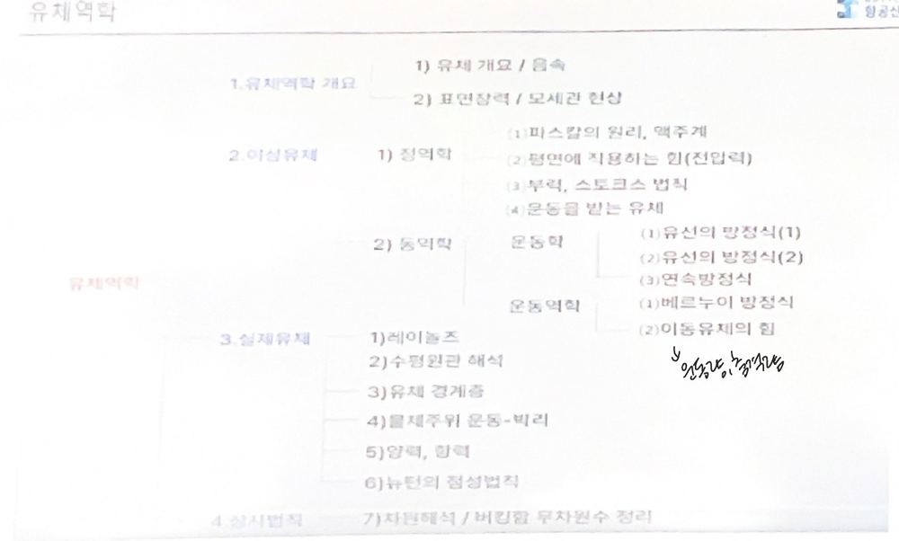
| 대단원 | 소단원 | 세부 |
|---|---|---|
| 1. 유체역학 개요 | 1) 유체 개요 / 음속 2) 표면장력 / 모세관 현상 | |
| 2. 이상유체 | 1) 정역학 | 파스칼의 원리·액주계, 평면에 작용하는 힘(전압력), 부력·스토크스 법칙, 운동을 받는 유체 |
| 2) 동역학 | 운동학: 유선의 방정식, 연속방정식 운동역학: 베르누이 방정식, 이동유체의 힘(운동량·충격량) | |
| 3. 실제유체 | 레이놀즈, 수평원관 해석, 유체 경계층, 물체 주위 운동–박리, 양력·항력, 뉴턴의 점성법칙 | |
| 4. 상사법칙 | 차원해석 / 버킹엄 무차원수 정리 | |
압력
정의 Definition
유체가 놓여 있는 임의의 표면에는 힘이 작용한다. 움직이는 유체와 닿아 있는 표면에는 수직력(법선력)과 접선력(전단력)이 작용하며, 수직력은 표면에 수직, 전단력은 표면에 접한다.
수직력과 전단력을 각각 압력과 마찰력이라 부른다. 압력은 단위 면적당 수직으로 작용하는 힘이다.
- 수직력 → 압력, 전단력 → 마찰력
- 압력은 수직 힘만 따진다.
- 압력은 분자들의 평균 운동량(벽에 부딪히는 충돌)으로부터 유추해 낸다.
- kg/cm² 의 감각: 1 cm² 면적 위로 대기권 끝까지 쌓인 공기 기둥의 무게.
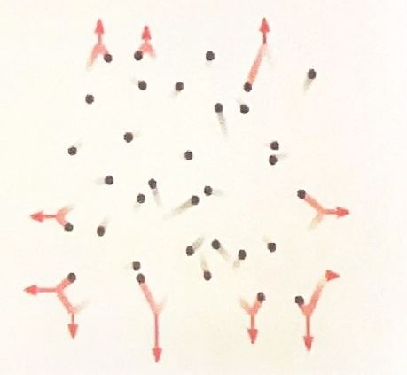
표준교재식 정의
- 압력은 표면적에 작용하는 힘의 크기이며, 보통 lb/inch² 또는 psi 단위를 사용하는 단위 면적당 하중이다.
- 면적 1 inch², 높이 29.92 inch의 수은 기둥 무게는 14.7 lb → 14.7 psi = 29.92 inHg.
- 대기압이 개방된 수은 용기를 눌러 수은을 시험관 안으로 밀어 올린다 (토리첼리 기압계).
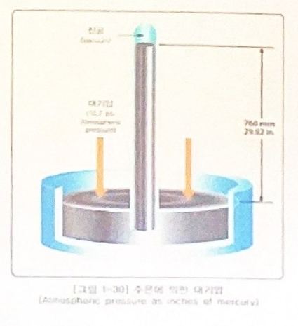
표준 대기압과 단위 환산 Units
| 단위 | Pa 환산 | 단위 | Pa 환산 |
|---|---|---|---|
| 1 bar | 100 000 Pa | 1 psi (lb/in²) | 6895 Pa |
| 1 mmHg | 133.32 Pa | 1 dyne/cm² | 1/10 Pa |
| 1 atm | 1.013 × 10⁵ Pa | 1 lb/ft² | 47.88 Pa (슬라이드 4788은 오타) |
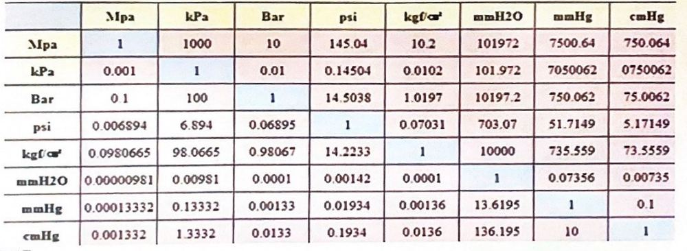
- 환산표의 kPa → mmHg, cmHg 칸 ‘7050062 / 0750062’는 소수점이 빠진 것: 1 kPa = 7.50062 mmHg = 0.750062 cmHg.
- 1 lb/ft² = 1 psi ÷ 144 ≈ 47.88 Pa.
- 자주 쓰는 연결: 1 kgf/cm² ≈ 0.98 bar ≈ 14.22 psi ≈ 10 m H₂O.
계기 압력 Gauge pressure, psig
오일 압력계, 연료 압력계, 유압 계통 압력계 같은 측정 장치는 압력을 게이지 압력으로 표시한다. 펌프가 돌지 않아 압력이 생성되지 않으면 게이지는 0을 가리킨다.
- 절대압의 기준 = 진공도 100% (완전 진공)
- 연료 압력계(psig)는 계기압만 지시한다.
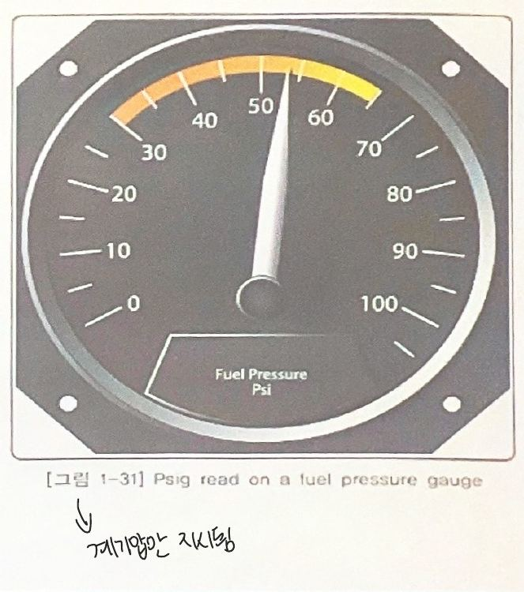
절대 압력 Absolute pressure, psia
- 대기압을 포함하고 있는 게이지 = 절대 압력, psia.
- 절대 압력 = 게이지 압력 + 대기압.
- 엔진 오일 계통을 psia로 지시하는 계기를 달면, 엔진이 멈춰 있을 때 게이지는 0이 아니라 대기압을 표시한다.
- 예: 10~35 inHg 범위의 매니폴드 압력계. 29.92 inHg가 표준 대기압.
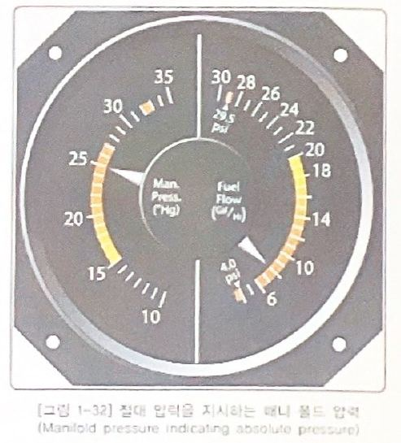
압력의 종류와 진공도 Gauge · Vacuum · Absolute
| 종류 | 기준 | 설명 |
|---|---|---|
| 계기 압력 (atg) | 대기압 | 대기압을 0으로 놓고 측정한 압력 |
| 진공계 압력 | 대기압 | 대기압 이하의 압력 (얼마나 모자라나) |
| 절대 압력 (ata) | 완전 진공 | 완전 진공을 0으로 놓고 측정한 압력 |
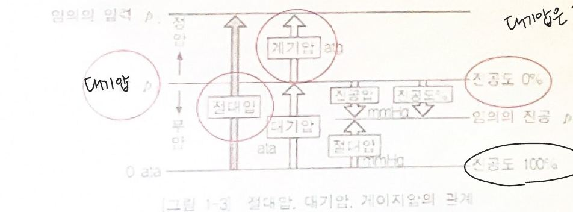
진공계 압력을 대기압 기준 백분율로 나타낸 것.
\[ \text{진공도} = \frac{\text{진공계 압력}}{\text{대기압}} \times 100\ (\%) \]대기압 = 진공도 0%, 완전 진공 = 진공도 100%.
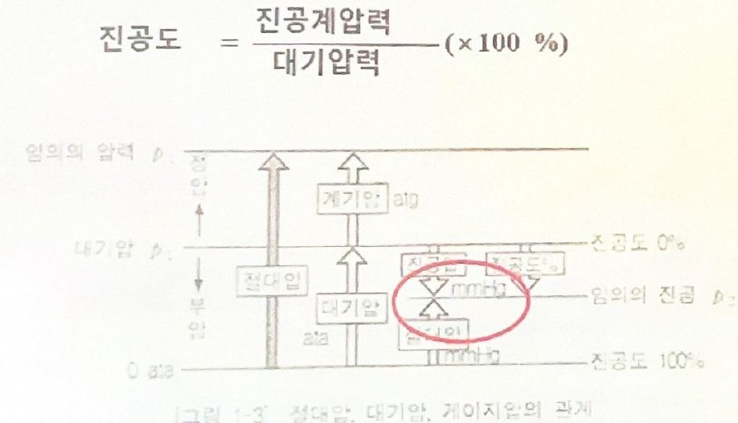
차압 Differential pressure, psid
차압(psid)은 시스템 안 서로 다른 두 지점에서 지시하는 압력의 차이.
- 터빈 엔진 오일 계통: 오일 필터 들어가는 곳과 나오는 곳에서 측정. 필터가 막히기 시작하면 압력 강하가 커지고, 결국 조종실 경고등(advisory light)이 켜진다.
- 여압 계통 차압계: 비행기 안쪽과 바깥쪽의 압력 차. 차이가 너무 커지면 기체 구조에 심한 하중.
- 기내 차압에 이상이 생기면 outflow valve가 동작한다.
- 항공기가 급강하할 때 기내압이 대기압보다 낮아져서 동체가 찌그러질 수 있다 (음의 차압).
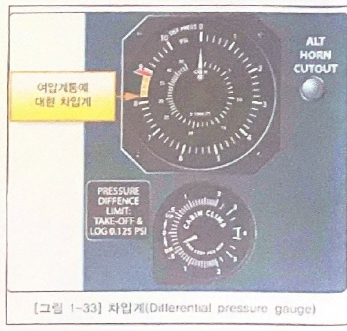
기체 법칙과 상태변화
기체 분자 운동 Kinetic picture
- 분자 운동의 정도는 기체의 온도에 따라 변한다. 분자는 끊임없이 서로, 그리고 벽과 충돌한다.
- 온도 ↑ → 충돌 횟수 ↑ → 단위 시간당 벽을 두드리는 분자 수 ↑ → 압력 ↑.
- 더운 날 오래 달린 자동차 타이어 압력이 오르는 이유. 막혀 있고 탄성이 있는 용기라면 고무풍선처럼 팽창한다.
- 기체는 미소한 탄성구처럼 운동하고, 서로 꽤 떨어진 채 끊임없이 움직이는 동일한 분자로 구성되었다고 가정한다.
- 기체의 열에너지가 분자의 운동에너지로 바뀐다. 열은 ‘물질’이 아니라 에너지를 전달하는 형태.
- 압력 증가 ⇒ (분자) 열에너지도 증가.
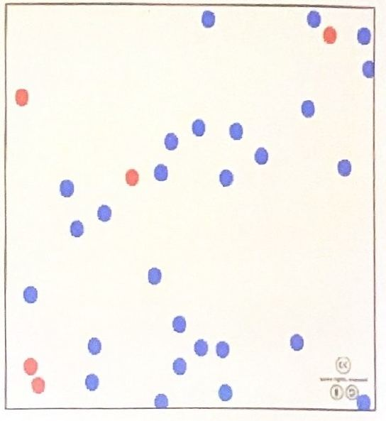
보일의 법칙 Boyle’s law
압축성(compressibility)은 기체의 가장 중요한 특성. 보일은 이것을 “공기의 탄성”(= 압축성)이라 불렀다. 절대 압력이 감소하면 체적은 증가한다.
밀폐된 기체의 체적은 온도를 일정하게 유지하면 그 압력에 반비례한다.
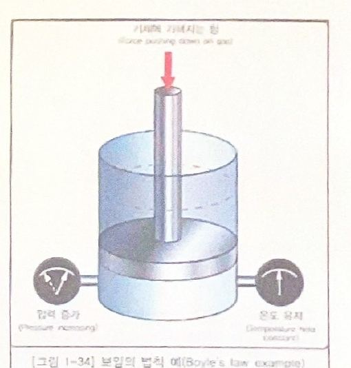
온도·부피·압력·mol(분자수)은 모두 서로 관련되어 있다.
샤를의 법칙 Charles’ law
프랑스 과학자 샤를(Jacques Charles)은 기체 운동론의 기초를 정립했다. 압력을 일정하게 유지하면 모든 기체가 절대온도 변화에 따라 일정한 비율로 팽창·수축한다.
압력 일정 (온도 ↔ 부피 비례):
\[ \frac{V_1}{T_1} = \frac{V_2}{T_2} \quad (V_1T_2 = V_2T_1) \]체적 일정 (압력 ↔ 온도 비례, 절대압·절대온도 사용):
\[ \frac{P_1}{T_1} = \frac{P_2}{T_2} \quad (P_1T_2 = P_2T_1) \]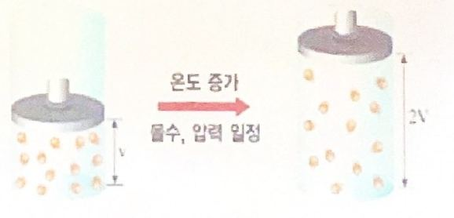
- 온도가 증가해서 체적이 늘었다 = 피스톤이 일을 한다. 일과 열(에너지)은 같은 단위 J.
- 기체에서 말하는 온도는 항상 절대온도.
- 1/273 비율로 팽창·수축한다.
- 자크 샤를: 최초로 (수소) 기구를 만든 사람.
- 1 ℃ 증가할 때 부피가 1/273씩 증가 → 이론적으로 −273 ℃에서 부피 0, 분자 운동 정지 (현실적으로 불가능).
- 샤를의 법칙은 분자 운동과 기체 부피의 상관관계를 나타낸다.
P–V는 반비례(보일), V–T는 비례(샤를), P–T는 비례(체적 일정).
체적이 일정할 때 \(P/T\) = 일정인 관계는 교과서에 따라 게이뤼삭(Gay-Lussac)의 법칙으로 따로 부르기도 한다. 이 수업 자료에서는 샤를의 법칙에 함께 넣었다.
이상기체 Ideal gas
- 기체 입자의 부피를 0으로 본다.
- 분자 간의 인력이 없는 것으로 한다.
- 탄성충돌 외에 다른 상호작용을 하지 않는 점입자로 이루어진 기체 모형. 완벽한 이상기체는 존재하지 않는다.
P: 압력, V: 부피, n: 몰수, R: 기체상수, T: 절대온도
- ‘점’입자: 크기가 없어서 점으로 표현.
| 특정 기체의 기체상수 R | SI | 중력 단위 |
|---|---|---|
| 공기 | 0.287 kJ/kg·K | 29.27 kgf·m/kg·K |
| 산소 | 0.260 kJ/kg·K | 26.49 kgf·m/kg·K |
| 질소 | 0.297 kJ/kg·K | 30.26 kgf·m/kg·K |
비체적 · 밀도 · 비중량 Specific volume · Density · Specific weight
비중량에서 g가 들어간다는 점(무게 = 질량 × 중력가속도)이 밀도와의 차이.
이상기체 상태방정식 = 보일 + 샤를
보일: 온도 일정 → \(PV\) = 일정, \(P_1V_1 = P_2V_2\) (압력–부피 반비례)
샤를: 압력 일정 → \(V/T\) = 일정, \(V_1/T_1 = V_2/T_2\) (온도–부피 비례)
- 이 식은 분자 간 인력이 없다고 가정한 것.
- n은 몰수(변하지 않음), R은 기체상수(일정) → T가 일정하면 PV = 일정.
- 이 식은 왜 나왔을까? 보일 + 샤를 = 이상기체 상태방정식.
슬라이드의 샤를 법칙 표기 ‘V/P = 일정’은 오타. 압력이 일정할 때 일정한 것은 V/T.
이상기체의 상태변화 Processes
등온 변화 Isothermal
온도가 일정하게 유지되는 과정. 등온을 유지하려면 압축 시 열을 방출해야 하며, 팽창 시에는 외부에서 가열해야 한다.
- 1 → 2로 일을 했다. PV는 일의 양이다 (그래프 아래 빗금 면적).
- V₁ → V₂로 갈 때 피스톤이 일을 했다.
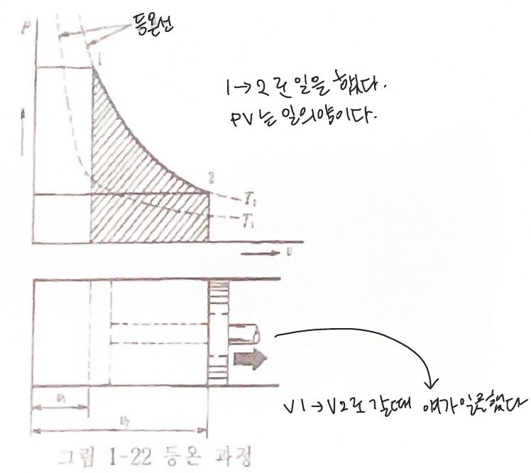
정적 변화 Isochoric
일정한 체적 하에서 열을 가할 때 가열과 함께 압력이 상승하는 상태변화.
체적 일정할 때 온도를 가하면 압력이 올라간다.
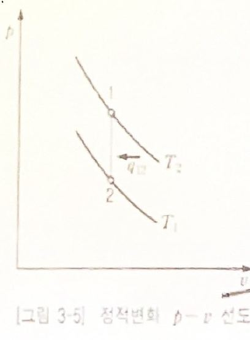
정압 변화 Isobaric
일정한 압력 하에서의 상태변화.
p–v 선도에서 수평선, 빗금 면적 \(W_{12} = P(v_2 - v_1)\)이 외부에 한 일.
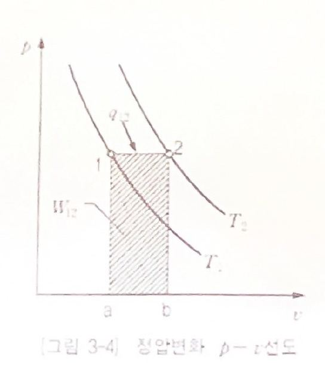
단열 변화 Adiabatic
기체가 팽창·압축할 때 외부와 열 교환 없이 상태변화가 일어나는 과정. P, v, T 중 임의의 두 성질만의 관계식으로 표시한다.
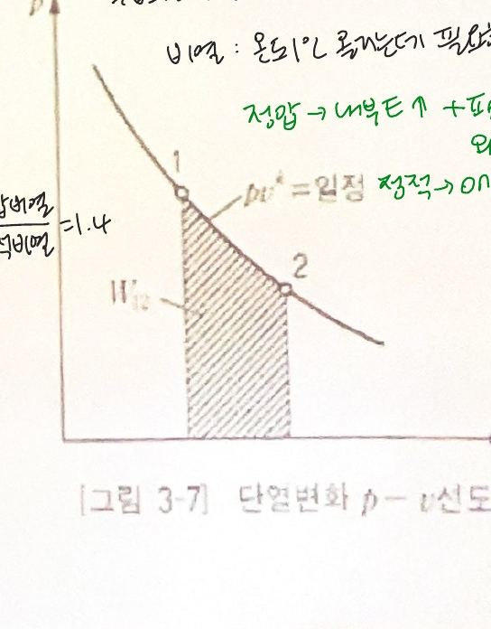
- 예) ACM(공기 사이클 냉각기) 압축기·터빈에서의 단열 팽창.
- 비열: 온도를 1 ℃ 올리는 데 필요한 열량.
- 정적비열 Cv: 체적이 일정할 때 투입되는 열량 → 내부에너지만 ↑.
- 정압비열 Cp: 압력이 일정하고 체적이 변하는 상태에서 온도를 올릴 때 투입되는 열량 → 내부에너지 ↑ + 팽창하면서 외부에 한 일.
- 그래서 정압비열 > 정적비열, 비열비 \(k = C_p/C_v \approx 1.4\).
슬라이드의 ‘\(P_1v_1^{k} = P_1v_1^{k}\)’은 오타: \(P_1v_1^{k} = P_2v_2^{k}\).
폴리트로픽 변화 Polytropic
실제 가스의 상태변화에는 다소 열의 출입이 따르므로, P, v, T 중 임의의 두 성질만의 관계식 \(Pv^n = C\)로 표시한다. 네 가지 과정을 모두 포함하는 일반식.
| n | 관계 | 과정 |
|---|---|---|
| 0 | \(P = C\) | 정압 |
| 1 | \(Pv = C\) | 등온 |
| k | \(Pv^k = C\) | 단열 |
| ∞ | \(v = C\) | 정적 |
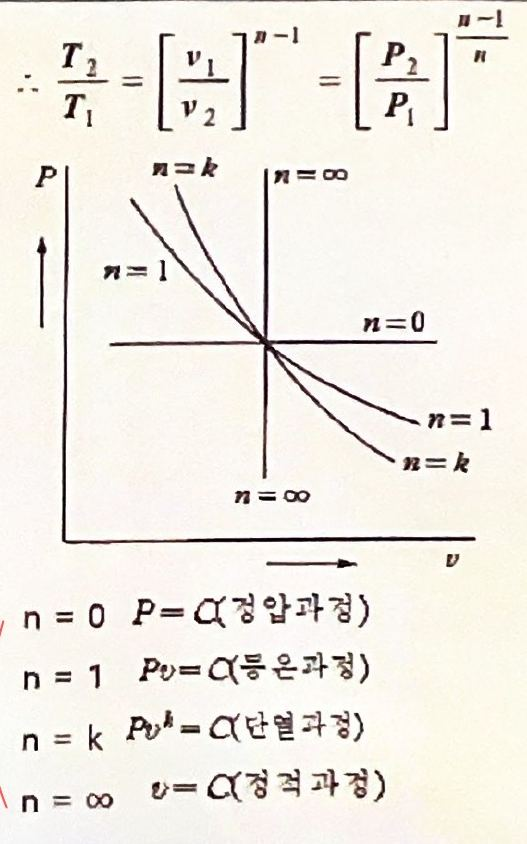
\(Pv^n = C\)에서 압력과 비체적이 서로 어떤 비율로 함께 변하는지를 정해 주는 숫자. 즉 이 과정이 어떤 종류의 상태변화인지를 나타내는 값이다. 폴리트로픽 변화는 새로운 과정이라기보다 정압·등온·단열·정적 네 과정을 하나로 묶은 일반식이고, n에 특정 값을 넣으면 각 과정이 그대로 나온다.
- n = 0: \(v^0 = 1\)이라 \(P = C\) → 정압
- n = 1: \(Pv = C\) → 보일의 법칙 형태, 등온
- n = k (≈1.4): \(Pv^k = C\) → 단열 (k는 비열비 \(C_p/C_v\))
- n = ∞: 양변에 1/n 제곱을 하면 \(P^{1/n}v = C\), 1/n → 0이 되어 \(v = C\) → 정적
- 실제 기체는 완벽하게 등온이거나 완벽하게 단열인 경우가 거의 없다. 압축기에서 공기를 압축하면 열이 조금은 빠져나가므로 완전 단열(n = k)도, 완전 등온(n = 1)도 아니다.
- 이런 실제 과정은 보통 1 < n < k 사이 값이 된다. 실험으로 n을 맞춰 \(Pv^n = C\)로 표현한다.
- 즉 n은 열이 얼마나 드나드느냐를 반영한다. n이 1에 가까우면 등온 쪽(열 교환 많음), k에 가까우면 단열 쪽(열 교환 거의 없음).
- p–v 선도: n = 0은 수평선, n = ∞는 수직선. 그 사이에서는 n이 클수록 곡선이 더 가파르게 떨어진다 → 단열(n = k) 곡선이 등온(n = 1) 곡선보다 가파르다.
- 온도 관계식은 단열 식에서 k 자리에 n을 넣은 것과 똑같다. 단열 공식을 외웠다면 k → n으로 바꾸기만 하면 된다.
n값과 과정의 짝을 묻는 형태가 가장 나오기 쉽다: 0 정압, 1 등온, k 단열, ∞ 정적.
기체·유체의 성질과 압축률
유체물리학의 역사 History
| 시기 | 내용 | 필기 |
|---|---|---|
| BC 5000 | 이집트 문명. 강물 흐름을 결정하는 수학적 방정식은 없었다. | |
| BC 250 | 아르키메데스, 부력과 부양을 다루는 정지 유체의 법칙 발견. 그때까지 수학적 분석은 없었다. | 정지 유체일 때의 부력 작용 |
| 16세기 | 물질계의 수학적 모델 등장. 다빈치의 질량보존 법칙 유도, 조류와 유압펌프 실험. | 조류 = 물의 흐름 |
| 17세기 | 갈릴레오, 토리첼리, 파스칼, 뉴턴 → 실험기법 개발, 압력전달율 개발. | |
| 18세기 | 피토, 베르누이, 오일러, 벤츄리 → 관로, 유압기계, 운하 등 유체 흐름의 원리 개발. | 베르누이 = 물이 들어오고 나가는 관계 |
| 19세기 | 프루드, 레이놀즈 → 모세관, 삼투압, 관로유동, 계류 기법 규명. | 레이놀즈 = 흐름과 관련된 무차원수 |
| 20세기 | 조음속 흐름, 공기역학 설계, 차원해석, 상사성, 경계층, 유압기계, 난류, 마하, 웨버 등. | 상사성 = 작게 똑같이 만들어 실험한 것 (기하학적·공기역학적 상사) |
기체의 기본 관계
- 기체의 부피 = 기체 분자의 운동 반경 = (기체가 담긴) 용기의 부피
- 분자 운동 속도 ∝ 분자 운동 에너지 ∝ 벽을 때리는 힘 ∝ 압력
- 분자 운동 에너지 ∝ (절대) 온도
- (절대) 온도 ∝ 압력
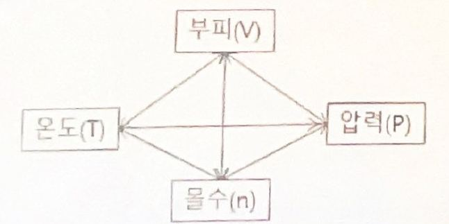
| 법칙 | 식 | 조건 |
|---|---|---|
| 보일 | \(PV = k_1\) | T, n 일정 |
| 샤를 | \(V/T = k_2\) | P, n 일정 |
| 아보가드로 | \(V/n = k_3\) (n: 분자 몰수) | P, T 일정 |
슬라이드 식의 분모 ‘273 ℃’는 273 K(절대온도). 필기에서 초록 괄호로 표시된 부분.
원자량 · 분자량 · 몰 · 아보가드로
- 원자량: 원자의 상대적 질량 (단위 없음). 기준 C(12), H(1), O(16), N(14). 예: 탄소 원자 1개의 질량 = 수소 원자 12개의 질량.
- 분자량: 분자의 상대적 질량 = 원자량의 합. 예: H₂O(18), CH₄(16), NH₃(17).
- 몰: 입자 수를 나타내는 단위. 1 mol = 6.02 × 10²³개 (아보가드로 수 NA). 기체 분자 1몰이 모이면 부피는 22.4 L.
- 1몰의 질량 = 원자량(분자량)에 g를 붙인 값. 탄소 1몰 = 12 g, 물 1몰 = 18 g.
기체 종류에 상관없이 일정한 온도·압력에서 같은 부피 속의 기체 분자 수는 모두 같다. 분자 자체 크기는 너무 작아 전체 부피에 영향을 못 주기 때문. 즉 기체 부피는 분자 수에 비례한다.
\[ n \propto V,\qquad 0\,^\circ\text{C},\ 1\text{기압에서 기체 1몰} = 22.4\ \text{L} \]모든 기체는 온도·압력이 일정할 때 부피 22.4 L 안에 6.02 × 10²³개의 분자로 이루어지는데, 이를 1 mol이라 한다.
예) 부피가 11.2 L → 0.5 mol
기체상수 Gas constant
- R(기체상수)은 기체 종류마다 다르고 단위는 kJ/kg·K.
- N₂: 8.314 ÷ 28.014 = 0.2968 kJ/kg·K
- O₂: 8.314 ÷ 31.998 = 0.2598 kJ/kg·K
- 공기: 보통 0.287 kJ/kg·K
\(PV = mRT\) → kJ = kg · R · K → \(R\) = kJ/kg·K
유체의 성질과 상태 Property & State
- 상태(state): 측정할 수 있는 물질의 성질들이 일정한 값을 갖는 것.
- 성질(property): 물질 상태를 결정하는 측정 가능한 물리적 변수. 상태에 의해 결정되고 경로와는 무관.
| 구분 | 정의 | 예시 | 표기 관례 |
|---|---|---|---|
| 종량적 상태량 Extensive property | 계의 크기·범위·질량에 따라 값이 변함 (‘크기’ 변수). 부분계 성질들의 합으로 표현, 질량에 직접 비례. | 총 질량, 총 체적, 총 운동량, 총 에너지, 내부에너지, 엔탈피, 엔트로피 | 대문자 (질량 m 제외) |
| 강성적 상태량 Intensive property | 계의 크기·질량과 무관 (‘세기’ 변수). 여러 부분으로 나눠도 각 부분이 처음과 같음. | 온도, 압력, 밀도, 비체적 | 소문자 (압력 P, 온도 T 제외) |
- 종량적: 질량·크기와 관련된 것.
- 강성적: 질량에 따라 변하지 않음, 분리해도 성질이 변하지 않음. ‘비(比)’가 들어간 건 다 강성적.
단위 질량당 종량적 상태량. 비중량, 비중, 비체적, 비열, 비기체상수 등.
\(\gamma = W/V\) (무게/부피), \(v = V/m = 1/\rho\) (부피/질량), \(e = E/m\) (비 총에너지)
필기의 ‘비체적 = 단위 중량당 질량’은 거꾸로 적힌 것. 비체적은 단위 질량당 체적 \(v = V/m\).
유체역학의 정의 Fluid mechanics
- 유체: 제한되거나 한정되어 있지 않고 흘러가는 성질이 있는 물질. 액체와 기체 모두 유체로 분류.
- 가장 큰 차이는 힘이 가해질 때: 액체는 비압축성 경향, 기체는 압축성 경향.
- 날개의 양력 이론, 유압계통이 만드는 힘처럼 비행의 많은 원리가 유체역학 법칙에 기반한다.
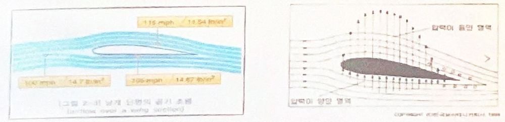
압축률과 체적탄성계수 Compressibility & Bulk modulus ⭐ 셤
물이 비압축성인 이유를 설명하는 개념. 압력을 가했을 때 부피가 얼마나 줄어드나(= 밀도가 얼마나 늘어나나)를 본다.
압축률이 높다 = 압축이 잘 된다 = 체적 변화가 크다.
체적탄성계수: 부피 감소율 분의 압력 변화.
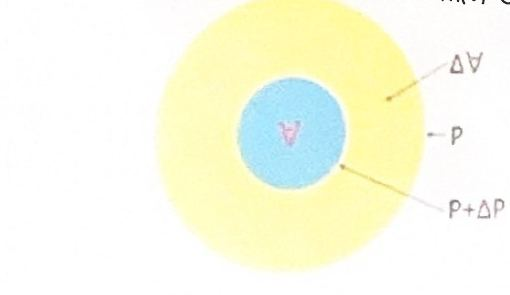
압축률은 체적탄성계수와 관련되어 있고 둘은 반비례(\(K = 1/\beta\)). 체적탄성계수가 크면 압축이 잘 안 되는 물질 (액체 → 비압축성).
- \(\dfrac{dv/v}{dp}\): 압력 변화에 따라 원래 체적이 얼마나 변하나.
- 마이너스 부호: 압력이 오르면 체적이 줄어드니까 (−). 밀도 쪽은 늘어나니까 (+).
- 탄성계수와 압축률은 반비례.
물의 압축률 (액체)
- 물의 압축률 = 압력을 단위만큼 증감시켰을 때 물의 부피 변화. 온도와 압력의 함수.
- 0 ℃, 압력 0일 때 5.1 × 10⁻¹⁰ Pa⁻¹. 온도가 오르면 감소하여 약 45 ℃에서 최저 4.4 × 10⁻¹⁰ Pa⁻¹, 그 뒤 다시 증가.
- 같은 온도에서 압력이 오르면 압축률은 감소. 0 ℃, 100 MPa에서 3.3 × 10⁻¹⁰ Pa⁻¹.
- 20 ℃, 2100 MPa(엄청난 압축력)에서도 부피 변화는 약 1%. 그래서 대부분 물의 압축률을 0으로 가정한다.
- 그러나 온도에 영향은 받는다.
온도를 올리면 (약 45 ℃까지) 압축이 잘 안 된다.
기체의 경우와 음속
\(m = \rho V\)를 미분: \(dm = \rho\,dV + V\,d\rho = 0\) → \(-\dfrac{dV}{V} = \dfrac{d\rho}{\rho}\)
\[ K = \frac{dP}{d\rho/\rho} = -\frac{dP}{dV/V} = \rho\frac{dP}{d\rho} \] \[ c = \sqrt{\frac{dP}{d\rho}} = \sqrt{\frac{K}{\rho}} = \sqrt{kRT} \]- 체적탄성계수가 크면 압축이 잘 안 되는 물질 (액체 → 비압축성).
- 체적탄성계수는 이후 음속과 관계가 있다.
- 기체는 압축성이지만 속도가 크지 않을 때(Ma < 0.3) 기체를 비압축성 유체로 취급한다.
- 속도가 있어야(빨라야) 압축이 된다.
- 음속은 탄성계수와 관계가 있구나.
- k(비열비), R은 상수 → 음속은 온도만의 함수.
연속체 역학
연속체 가정 Continuum hypothesis
- 연속체 역학은 물질을 연속체라는 수학적 대상으로 모델링해 고체와 유체의 거동을 연구하는 역학의 한 분야.
- 원자·분자의 미시 구조를 직접 추적하지 않고, 위치와 시간에 따른 물리량의 장(field)으로 거시 현상을 기술한다.
- 관심 길이 규모에서 물질의 성질을 평균적인 물리량으로 정의할 수 있다는 가정에 기반.
- 실제로는 원자 사이 빈 공간이 있지만, 길이 규모가 원자보다 충분히 크면 밀도·속도·온도·응력을 연속 함수로 다룰 수 있다.
- 고체·액체·기체뿐 아니라 토양, 암석, 얼음, 생체 조직에도 적용.
- 질량·운동량·에너지 같은 물리량을 미소 영역에서도 연속적으로 다룰 수 있다.
부피가 1 µm³ 이상이면 연속체라 가정 (밀도가 일정하다고 가정). → 비압축성
부피가 1 µm³ 이하이면 밀도가 변한다. (1 µ = 0.000001 m) → 압축성
- 1 µm³ 이상 → 연속체 법칙이 적용됨 → 비압축성처럼 다룰 수 있음 / 이하 → 압축이 된다(밀도 변화).
- 정상유: 압력·온도·밀도 변화 없이, 시간 변화에도 불구하고 일정하게 흐르는 흐름.
장(field)과 기술 방법 Lagrangian vs Eulerian
연속체의 상태는 공간 좌표와 시간의 함수인 장으로 나타낸다. 밀도, 속도, 압력, 온도, 변위 같은 물리량은 각 위치에서 값을 갖는다.
| 기술법 | 관점 | 주로 쓰는 곳 |
|---|---|---|
| 라그랑주 | 물질 입자를 따라가며 물리량 기술 | 고체 변형 추적 |
| 오일러 | 공간의 각 지점에서 물리량 기술 | 유체역학 |
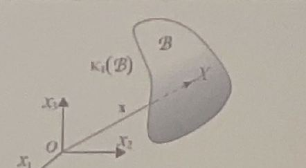
유체 입자(fluid particle)를 추적하며 운동 상태를 관찰하는 방식. 보트에 앉아 강을 따라 내려오듯, 시간에 따라 개별 대상의 위치를 이어 경로로 시각화한다. 물질 자체에 주안점 → 공간 좌표에 주안점을 두는 오일러 기술법과 대비.
- 밀도·속도·압력·온도·변위 = 정상유에서 얘기한 그 성질들.
- 라그랑주 = 물의 입자를 추적하는 방식.
- 변위·변형률·텐서 문단은 X 표시 (넘어감).
지배 방정식 Governing equations
| 보존 법칙 | 방정식 |
|---|---|
| 질량 보존 | 연속 방정식 |
| 운동량 보존 | 응력과 체적력의 관계를 포함하는 운동 방정식 |
| 에너지 보존 | 내부에너지·운동에너지·열전달 사이의 관계 |
| 열역학 제2법칙 | 엔트로피 생성에 대한 제한 |
보존 법칙만으로는 특정 물질의 거동을 결정할 수 없어 구성 방정식이 필요하다. 탄성체: 응력–변형률(탄성 구성 방정식), 점성 유체: 응력–변형률 속도(점성 계수). 구성방정식의 대표 예는 후크의 법칙, 응력 단위는 Pa = N·m⁻².
연속체 역학의 분과
| 연속체 역학 연속체 물질의 물리학 | 고체역학 | 기준 형상이 정해진 고체의 응력·변형·파괴 | 탄성: 응력이 제거되면 기준 형상으로 돌아옴 소성: 충분한 응력을 받으면 영구 변형 |
|---|---|---|---|
| 유체역학 | 전단응력을 받으면 계속 변형하는 유체의 성질과 운동 | 뉴턴 유체: 전단응력과 변형률 속도가 비례 비뉴턴 유체: 그 관계가 일정한 비례식이 아님 |
유변학: 고체와 유체의 성질을 함께 보이는 물질 연구 (점탄성이 대표). 유체역학은 정지 유체를 다루는 유체 정역학과 움직이는 유체를 다루는 유체 동역학으로 나뉜다. 대표 주제: 점성, 압축성, 난류, 표면장력, 다상 유동, 전산유체역학.
유체 동역학과 흐름의 분류
16장 질량 보존·검사체적·정상유동(Steady Flow), 운동량 방정식 · 15장 압력계수(정압·동압) · 22장 레이놀즈수 · 23장 프루드수 · 25장 유동박리·오일러 방정식 · 26장 무차원수 정리와 상사
유체 동역학 개요
시간과 공간에 따른 유체의 속도·압력·밀도 변화를 다룬다.
| 보존 법칙 | 방정식 | 필기 |
|---|---|---|
| 질량 보존 | 연속 방정식 | 연속방정식 – 질량보존법칙 적용 |
| 운동량 보존 | 나비에-스토크스 방정식 | |
| 에너지 보존 | 베르누이 방정식 (조건부) | 베르누이 – 에너지보존법칙 적용 |
- 점성이 없고 압축할 수 없는 유체로 이상화하면 오일러 방정식을 쓸 수 있다.
- 정상·비점성·비압축성 유동을 유선을 따라 적분하면 베르누이 방정식 (← 이 세 가지가 베르누이 방정식의 조건).
- 베르누이 방정식은 압력, 속도, 위치에 따른 단위 질량당 에너지 관계. 실제 장치에는 점성 손실이나 펌프·터빈의 일을 함께 고려해야 한다.
베르누이: 압력 + 속도 + 위치 → \(PV + \tfrac12 mV^2 + mgz\) (에너지보존의 법칙 적용)
흐름의 분류
| 기준 | 분류 |
|---|---|
| 시간에 따른 변화 | 없으면 정상 유동, 있으면 비정상 유동 (유동 = 흐름) |
| 밀도 변화 | 무시할 수 있으면 비압축성 유동, 고려해야 하면 압축성 유동 |
| 관성 효과와 점성 효과의 상대적 크기 | 레이놀즈 수로 표현. 낮으면 층류, 높으면 난류 |
필기: 경계층과 관련.
경계층 · 박리 · 난류 Boundary layer
- 고체 표면 가까이에서는 점성 때문에 유체 속도가 표면 속도에 맞춰지는 경계 조건이 생긴다.
- 표면에서 멀어지며 속도가 급격히 변하는 영역 = 경계층.
- 경계층이 표면에서 떨어지는 박리는 항력·양력 변화, 실속에 큰 영향.
- 난류: 속도와 압력이 시간·공간에서 불규칙하게 변하는 유동. 소용돌이·혼합이 활발해 운동량·열·물질 전달이 증가하지만 모든 규모를 직접 계산하긴 어려워 평균 방정식, 난류 모형, 대규모 소용돌이 모사(LES), 직접 수치 모사(DNS)를 쓴다.
- 점성을 가진 유체(뉴턴 유체)의 운동을 설명하는 지배방정식.
- 활용: 날씨 모델링, 해류, 파이프 내 흐름, 날개 주변 공기 흐름, 항공기·자동차 설계, 혈류, 오염 분석.
- 점탄성을 가진 비뉴턴 유체(혈액, 우유, 라텍스)에는 일반적으로 적용되지 않음.
- 희박 기체나 아주 작은 스케일처럼 연속체로 가정할 수 없는 경우 적용이 어렵다.
- 직접 수치 모사 = 값을 하나씩 넣어 보면서 찾는 것.
- 점탄성을 가졌다? → 거동이 불규칙하다.
- (그래프 메모) 연속적인 부분 / 아주 짧은 시간의 요동은 고려 X.
보존의 법칙과 연속체 가정
유체 동역학의 기본 공리: 질량 보존의 법칙, 운동량 보존의 법칙(뉴턴 제2법칙), 에너지 보존의 법칙(열역학 제1법칙). 기초는 고전역학.
유체는 사실 분자로 이루어져 서로·고체와 충돌하지만, 연속적인 것이라 가정한다. 그래서 밀도·압력·온도·속도를 아무리 작은 점에서도 정의할 수 있고, 이 성질들은 한 지점에서 다른 지점으로 갈 때 연속적으로 변화한다고 가정한다.
분자를 점으로 보고, 점이 흐르는 걸로 보자.
전압력 · 정압력 · 동압력 Total · Static · Dynamic
- 보통 ‘압력’ = 정압력(static pressure): 정지한 유체가 가하는 압력. (필기: \(P = \rho g h\))
- 움직이던 유체가 정지하는 지점에서는 운동에너지가 모두 압력에너지로 바뀌어 그 지점의 압력은 정압력보다 더 높게 측정된다.
- 운동에너지가 압력에너지로 전환되는 만큼 = 동압력(dynamic pressure).
- 정압력 + 동압력 = 전압력(total pressure) = 정체 압력(stagnation pressure). 관계는 베르누이 방정식으로 확인.
압축성 유동 vs 비압축성 유동
실제 모든 유체는 어느 정도 압축성. 압력이나 온도가 변하면 밀도가 변한다는 뜻. 밀도 변화가 너무 작아 무시할 수 있으면 비압축성 유동 방정식으로 묘사한다.
유체 덩어리가 유동장 안에서 움직일 때 밀도 ρ가 변하지 않음:
\[ \frac{D\rho}{Dt} = 0 \]- 기체: 압축성 식/비압축성 식 선택은 마하 수로 결정. 엄밀한 기준은 아니지만 마하 수 약 0.3 미만이면 압축성 효과 무시.
- 액체: 비압축성 가정의 유효성은 유체 성질(임계 압력·임계 온도)과 유동 조건(실제 압력이 임계 압력에 얼마나 가까운가)에 좌우.
- 압축성·비압축성은 밀도로 판단.
- \(d\rho/dt = 0\): 시간 변화에 따라 밀도가 변하지 않는다.
- 마하수로 압축성 여부 결정.
- 비압축성 유동: 유동 중 유체의 밀도가 거의 일정하여 상수로 취급할 수 있는 유동.
- 압축성 유동: 유체가 이동하면서 밀도가 변하는 유동.
- 일반적으로 액체는 비압축성, 기체는 압축성 유체.
- 액체를 압축성으로 취급하는 경우: 수압관 속 수격작용(water hammer), 디젤기관 연료 공급관의 충격파.
- 기체를 비압축성으로 취급하는 경우: 건물 주위 유동, 자동차·항공기·기차 주위의 저속 기류 (M < 0.3) → 압축성 효과가 거의 없다.
- 압축률은 체적탄성계수와 관련 (반비례) ⭐ 셤
- 유체가 압축됐는지 판단하는 근거가 되는 계수 = 체적탄성계수 (그대로 시험 문제로 냄). 체적탄성계수가 높다 → 압축이 잘 안 된다 / 압축률이 높다 → 압축이 잘 된다. 틀린 용어·틀린 설명을 고르는 문제가 많으니 의미를 정확히.
점성 유동 vs 비점성 유동
- 유체의 마찰력 효과를 무시할 수 없으면 점성(viscous) 유동. 점성 유동인지는 레이놀즈 수를 사용하여 판단.
- 관성력에 비해 점성 효과가 매우 작아 무시할 수 있으면 비점성(inviscid) 유동. 비점성 유동을 묘사하는 식이 오일러 방정식.
- 오일러 방정식을 유선(streamline)을 따라 적분하면 베르누이 방정식이 나온다. ← 필기: 이것만 알고 있어
- 유동이 비회전(irrotational)·비점성이면 유동장 전체에 베르누이 방정식을 쓸 수 있다 = 퍼텐셜 유동.
뉴턴 유체와 비뉴턴 유체
- 뉴턴은 물·공기 등 많은 유체에서 변형률과 전단응력이 선형적인 관계임을 밝혔다 → 뉴턴(Newtonian) 유체. 그 계수가 바로 점성.
- 점성은 유체마다 다르다. 응력과 변형률의 관계가 선형적이지 않고 더 복잡한 유체 = 비뉴턴(non-Newtonian) 유체.
- 점성계수도 유체가 고유로 갖고 있는 값.
- 고체에서의 전단: \(\tau = G\gamma\), γ = 움직인 각. 고체에선 매우 작고 유체에선 크다(작은 힘에도 크게 변형).
필기의 ‘비뉴턴 유체 = 비점성’은 틀린 연결. 비뉴턴 유체도 점성이 있다. 차이는 점성의 유무가 아니라 전단응력–변형률 속도가 일정한 비례 관계인지 여부 (9장 PDF p.85 참고).
뉴턴 유체의 주요 특징
- 선형성: 전단응력과 전단변형률이 정비례. 그래프는 원점을 지나는 직선.
- 점도 일정: 온도와 압력이 일정하다면 외부 힘의 크기나 흐름 속도와 관계없이 점성계수가 일정하게 유지.
- 점성계수: 비례 상수인 점성계수는 가해지는 힘에 의해 변하지 않고 압력 및 온도만의 함수.
- 뉴턴 유체 예: 물, 공기, 기름. 비뉴턴 유체 예: 케첩, 치약, 혈액 (비선형이거나 시간에 따라 점도가 변함).
- “온도와 압력이 일정하다면”이라는 조건이 붙는다는 건 → 점도는 온도와 압력의 영향을 많이 받는다는 뜻. 그래서 액체·기체가 온도에 반대로 반응한다는 이야기로 이어진다.
- 점성계수는 물질마다 딱 정해진 고유의 상수. 가해지는 힘이나 흐름 속도로는 변하지 않고, 압력과 온도로만 변한다.
- 단위 N·s/m²에 ‘N(힘)’이 들어 있다고 “힘에 따라 변한다”로 착각하지 말 것. 단위는 \(\tau = \mu\,du/dy\) 식에서 유도된 것일 뿐이다. “이런 부분들을 잘 이해 못 하고 헷갈려 한다.”
- 뉴턴 유체 vs 비뉴턴 유체 = 선형이냐 비선형이냐. 뉴턴 유체끼리는 기울기(μ)는 달라도 비례 관계는 똑같이 유지된다.
- 액체: 온도 ↑ → 점성 ↓ / 기체: 온도 ↑ → 분자 운동이 활발해져 점성 ↑.
- 점성계수 \(\tau = \mu\,\dfrac{du}{dy}\) [N·s/m²] ⇒ 힘이 얼마나 크냐.
- 동점성계수 \(\nu = \dfrac{\mu}{\rho}\) [m²/s] ⇒ 동점성계수가 크다 = 확산 속도가 크다.
정상 유동과 비정상 유동 Steady vs Unsteady ⭐ 주관식
정상유동은 유동장의 어느 한 점에서 압력, 속도, 밀도 등과 같은 유동 특성이 시간에 따라 변하지 않는 흐름이고, 비정상 유동은 유체의 상태가 시간에 따라 변하는 흐름이다.
필기: ‘어느 한 점’ = 질점(질량을 갖고 있는 점).
- 구분의 핵심은 ‘흐름이 얼마나 빠르게 변하는가’가 아니라 같은 지점을 기준으로 시간이 지남에 따라 값이 바뀌는지.
- 정상/비정상은 층류/난류처럼 서로 대체되는 분류가 아니다 (축이 다름).
- 유동장이 시간에 대해 변화가 없으면 정상(steady), 아니면 비정상(unsteady).
- 정상인지 비정상인지는 관측계(frame of reference)에 따라 달라질 수 있다.
- 시간에 따라 주기적인 성질을 가진 유동은 엄밀히는 비정상이지만, 정상 유동 문제와 같은 기법으로 풀 수 있다.
- ‘어느 한 점’ = 질점. 유체는 항상 질량을 갖고 있으니, 점이라고 하면 질량을 가진 점이다.
- 핵심은 시간. 빠르냐 느리냐가 아니라 같은 지점에서 시간이 지나도 압력·밀도·속도가 꾸준히 일정한가.
- 비정상: 계곡물이 내려오면서 시간이 지날수록 속도가 빨라지고, 양이 많아지면서 압력이 높아진다 → 아무리 물이 흘러도 정상류가 아니다.
- 정상: 평소의 시냇물처럼 시간이 지나도 양이 그대로이고 압력·속도가 일정하게 흘러내려 가는 흐름 (비가 오면 달라지겠지만).
- 주관식은 괄호 채우기 형식으로 나온다: (시간)에 따라 (속도), (압력), (밀도)가 변하지 않는 흐름.
- 검사 체적 안의 저장 질량과 저장 에너지 변화가 없어, 내부에 쌓이는 양을 고려하지 않아도 된다.
- 단일 입구·출구 장치에서 들어온 질량유량 = 나간 질량유량에서 해석 시작 (필기: = 질량보존법칙).
- 시간 의존 항을 제외할 수 있어 복잡한 유동을 간단히 다룰 수 있다.
- 검사 체적 안의 질량과 에너지가 시간에 따라 누적되거나 감소 (필기: 질량이나 에너지가 변한다).
- 질량 보존을 다룰 때 일정 시간 동안의 변화량을 합치는 적분형 질량 보존식이 필요.
- 주기적으로 반복되는 흐름은 정상유동과 비슷한 방식으로 해석 가능.
| 구분 | 예시 |
|---|---|
| 정상유동 | 일정한 속도의 수도꼭지 물줄기처럼 입구와 출구의 흐름이 계속 유지되는 경우 (필기: 질량보존법칙이 성립되니까) |
| 비정상유동 | 탱크에 액체를 채우거나 빼는 과정 (내부 질량·압력이 달라짐), 강우 때 홍수류, 파도, 강물의 범람 |
유체와 유동체의 차이
유체(Fluid): 물·공기·기름 등 외부 힘에 의해 형태가 변하고 연속적으로 흐르는 물질. 고체와 달리 아주 작은 전단력에도 저항하지 못하고 변형되며, 점성·압축성 등 물성으로 구분된다.
유동체(Flowing fluid): 그 유체가 실제로 움직이고 있는 상태. 위치에 따라 속도·압력·밀도가 변한다. (예: 난류유동, 비정상 유동, 압축성 유동, 비점성 유동)
- 유체는 정지 상태가 아닌 운동 상태일 때 전단응력이 작용하며, 점성 유무에 따라 점성/비점성 유체로 구분된다.
- 유체가 정지 상태일 때 접촉면에 수직 방향의 변형력(= 압력)만 작용하며, 압력은 모든 방향으로 동일하게 작용한다. = 압력의 등방성 → 압력의 등방성이 적용되는 게 파스칼의 원리
층류 유동 vs 난류 유동 Laminar vs Turbulent
- 난류(turbulent) 유동: 재순환(recirculation), 에디(eddy), 임의성(randomness)에 의해 지배되는 유동. 이런 성질이 없으면 층류(laminar). 단, 에디나 재순환이 있다고 꼭 난류는 아니다 (층류에서도 나타남).
- 난류 유동은 나비에-스토크스 방정식을 따르는 것으로 여겨진다. 비압축성 나비에-스토크스 방정식을 이용한 직접 수치 모사법(DNS)으로 중간 정도 레이놀즈 수의 난류를 모사할 수 있고, 결과는 실험과 일치.
- 하지만 관심 있는 대부분의 유동은 레이놀즈 수가 너무 높아 DNS 불가. 예: A300, 747 날개 유동 Re ≈ 4천만 → 난류 모델 도입 필수.
- 나비에-스토크스의 주목적: (흐름을) 빨리 예측하는 것.
- 에디: 옆에서 추가되는(말려 들어오는) 소용돌이.
- DNS: 직접 값을 넣어 계산. 난류는 예측이 불가능하기 때문에 ⇒ 풍동실험.
- 난류를 최대한 안 생기게 하는 것이 박리 현상을 늦추는 것.
- 난류를 지배하는 세 가지: 재순환(회오리처럼 반복해서 도는 것), 에디(주변에서 휩쓸려 들어와 같이 섞이는 것), 임의성(어느 방향으로 갈지 모름). 이런 성질이 없으면 층류.
- 나비에-스토크스의 주목적: 걷잡을 수 없이 움직이는 흐름을 예측하는 것. 0.01초 뒤를 예측하느냐 10분 뒤를 예측하느냐에 따라 난이도가 다르다.
- 비압축성 N-S 방정식: 실제로는 압축되지만 무시하고 들어가는 것.
- 직접 수치 모사(DNS): 값을 모르니 컴퓨터로 숫자를 계속 대입해 가며 근사치로 수렴시키는 방법. 모사 = 정확하지 않으니 비슷하게 흉내 내는 것. 해 보니 실험 데이터와 거의 비슷하더라.
- 레이놀즈 수 2000~4000은 관 속 물 흐름 수준. A300·747 날개는 약 4천만 → DNS 불가 → 풍동 실험(배는 같은 모양으로 축소해 수조에서 파도를 일부러 만들어 시험)과 난류 모델이 필요.
\[ Fr = \frac{\text{관성력}}{\text{중력}} \quad\text{vs}\quad Re = \frac{\text{관성력}}{\text{점성력}} \] 배가 파도 속에서 받는 힘, 굴뚝 연기나 화염이 올라가다 퍼지는 모습처럼 중력이 흐름을 붙잡는 현상을 다룰 때 쓰는 무차원수. 바깥으로 퍼져 나가려는 관성력을 중력이 막아 주는 정도. 배 길이·중량·크기를 실험(수조 시험)으로 정할 때 쓰인다.
날개 실무에서는 경계층이 난류로 바뀌면 오히려 박리가 늦어지는 경우도 있다(난류 경계층이 운동량을 더 잘 섞기 때문, 보텍스 제너레이터의 원리). 수업 필기는 ‘불필요한 난류·와류를 줄여 흐름을 표면에 붙여 둔다’는 의미로 이해하면 된다.
유체 정역학과 파스칼 원리
10장 액주계(정수압 식 활용) · 14장 곡면에 작용하는 힘·작용점 · 20장 부력과 경심 · 21장 항공기의 안정성 · 23장 프루드수(중력·부력)
유체 정역학 Hydrostatics
유체가 정지해 있거나 매우 느리게 움직일 때의 특성, 특히 압력과 힘의 분포를 다루는 분야. 부력 같은 현상도 다룬다.
물속에 정지해 있는 물체가 받는 힘(압력) = \(\rho g h\).
움직이지 않는 액체나 기체. 전단응력을 유지하지 못해 정지 상태에서는 전단응력이 없고 압력만 작용한다. 한 점의 압력은 모든 방향에서 같으며, 정수압은 유체의 밀도와 깊이에 비례해 증가한다.
- 파스칼의 원리: “밀폐된” 유체에 가해진 압력이 유체 전체에 동일하게 전달된다. 작은 힘으로 큰 힘을 얻는 힘의 확대가 가능.
- 아르키메데스의 원리: 물체가 유체에 잠길 때 받는 부력 \(F_B = \rho_{\text{fluid}}\, g\, V_{\text{submerged}}\) (잠겨 있는 부피). 밀도 × 부피 = 질량 → × g = 무게.
- 정수압 공식 \(p = p_0 + \rho g h\) (\(p_0\) = 대기압): 압력은 깊이에 비례하여 선형적으로 증가.
필기의 ‘100 m당 1기압씩 증가’는 물 약 10 m(10.33 m)당 1기압이 맞다 (PDF p.51 슬라이드 기준). \(\rho g h = 1000 \times 9.81 \times 10.33 \approx 1.013\times10^5\) Pa.
- 정지한 물속 물체가 받는 수압: 깊이 h만큼의 물이 위에서 누르는 것 → \(P = P_0 + \rho g h\). 바다 표면에도 대기압이 있으니 \(P_0\)는 기본으로 들어간다.
- \(\rho g V\)처럼 체적 V가 들어가면 그건 수압이 아니라 부력(밀어낸 체적만큼의 물 무게).
- ‘선형적’ = 깊이당 일정하게 늘어난다는 뜻. 그래서 댐·저수지·잠수함 설계에서 깊이만 알면 받는 힘을 알 수 있다.
- 리뷰 강의에서도 “100 m마다 1기압”이라고 하셨지만, 물리적으로는 약 10 m마다 1기압이 맞다 (PDF p.51 슬라이드도 10.33 m). 선형이라는 개념이 요지이고, 수치를 묻는 보기가 나오면 10 m 기준으로 판단할 것.
정지유체의 주요 원리와 법칙
| 원리 | 핵심 내용 | 대표 응용 |
|---|---|---|
| 파스칼의 원리 | “갇힌 유체”에 가해진 압력의 균일한 전달 | 유압기, 수압기 |
| 정수압 원리 | 깊이에 따른 압력의 선형적 증가 | 댐, 저수지, 잠수함 설계 |
| 아르키메데스의 원리 | 잠긴 물체가 받는 부력과 밀려난 유체의 무게 | 선박의 부력, 잠김 깊이 |
| 정역학적 평형 | 중력과 압력에 의한 힘의 균형 | 구조물과 물체의 평형 분석 |
- 균일한 전달 = 압력의 등방성.
- “갇힌 유체” → 항상 밀폐된 상태여야 함.
- 파스칼은 움직이는 유체에서는 쓸 수 없고, 오픈돼 있어도 안 된다. 항상 밀폐된 상태에서만 적용.
- ‘균일한 전달’ = 압력의 등방성. 삼각형 미소 요소로 어느 방향이든 같다는 걸 증명했다 (8장).
- 정역학적 평형: 중력과 압력에 의한 힘의 균형 → 구조물 평형 분석, 배의 경심·무게중심으로 안정성을 잡는 것.
- 잠긴 평면의 수압력, 곡면 수압력, 부력과 안정성의 자세한 계산은 2학기에 다룬다.
정지유체의 압력 분포와 계산
| 계산 대상 | 기본 관계식 | 주요 변수 |
|---|---|---|
| 깊이에서의 압력 | \(P - P_0 = \rho g h\) | 기준 압력, 밀도, 중력가속도, 깊이 |
| 잠긴 평면의 수압력 | \(F = \rho g \bar{h} A\) | 평균 깊이(\(\bar h\) = 도심의 깊이), 면적 |
| 곡면의 수평 수압력 | \(F_H = P_c A\) | 곡면 중심 압력, 투영 면적 |
| 곡면의 수직 수압력 | \(F_V = \rho g V\) | 곡면 위 유체의 부피 |
- \(\bar h\) = 도심의 깊이 → 경사진 판에서의 수압을 구할 때 사용 (깊을수록 큰 삼각형 압력 분포).
- 곡면에서의 압력: 수평·수직 성분 모두 고려.
압축성 유체의 정역학 · 부력과 안정성
- 액체는 압축성이 작아 밀도를 거의 일정하다고 보지만, 기체는 높이에 따른 밀도 변화를 함께 살펴야 한다. 대기처럼 압축성 유체는 깊이뿐 아니라 온도·압력에 따른 밀도 변화도 중요.
- 부력은 물체가 잠긴 부피만큼 밀려난 유체의 무게와 같고, 방향은 위쪽.
- 물체가 조금 눌렸을 때 더 큰 부력이 생겨 원래 위치로 돌아오면 수직 안정성.
- 기울어진 물체가 원래 자세로 돌아오지 못하고 더 벌어지면 회전 불안정성.
배가 클수록 안정적. 배 기울기가 확 변했을 때 무게중심과 경심이 확 뒤틀어지는 순간 배가 뒤집어지는데, 배가 크면 이걸 늦춰 준다.
파스칼 원리 Pascal’s principle
1653년 블레즈 파스칼이 발견. 밀폐된 용기에 담긴 비압축성 유체에 가해진 압력은 유체의 모든 지점에 같은 크기로 “전달”되며, 유체의 압력은 어느 방향에서나 동일하다. 유압 장치의 원리로, 도르래처럼 작은 힘으로 무거운 물체를 들어올릴 수 있다.
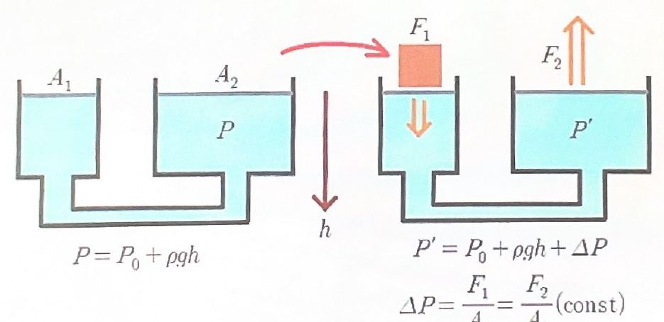
- 밀어낸 체적은 같아야 함 → 대신 이동 길이가 차이 난다.
- 단면적이 커지면 힘도 커진다.
“압력이 동일하게 전달된다”를 “유체 압력이 모든 지점에서 같다”로 오해하기 쉽다. 유체 압력은 \(P = \rho g h\)로 깊이에 따라 달라 깊이가 같은 곳에서만 같다. 파스칼의 원리가 말하는 것은 유체 압력 P가 아니라 외력에 의한 압력 변화 ΔP가 깊이에 관계없이 일정하다는 것, 즉 \(P' - P = \Delta P\)만 모든 위치에서 같다는 뜻이다.
비압축성이므로 밀어낸 부피 = 채운 부피:
\[ A_1 d_1 = A_2 d_2 \]일의 원리로 두 피스톤이 한 일이 같다:
\[ F_1 d_1 = F_2 d_2 \]두 식을 나누면 \( F_1/A_1 = F_2/A_2 = \Delta P \)
필기: 이동거리(d)를 반드시 고려.
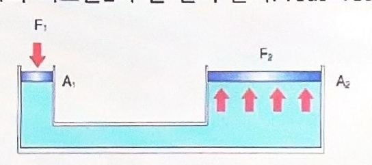
연속방정식 · 베르누이 · 피토관
15장 압력계수·벤츄리 유량계 · 13장 차압식 유량계 · 16장 운동량·충격량, 질유량 · 17장 엔진 추력
연속방정식 Continuity equation ⭐ 셤
전제조건: 비압축성. 근거: 질량보존의 법칙.
필기: 연속방정식은 반드시 정상유동에서만 성립된다.
- 연속방정식을 풀기 위한 가장 기본적인 원리 = 질량 보존의 법칙 (시험 문제로 냄).
- 들어가는 질량 = 나오는 질량이라는 전제 → 그 자체가 정상류라는 뜻. 속도가 변하거나, 압축되거나, 온도가 달라지면 성립하지 않을 수 있다.
- 이 단순한 식이 항공기 설계의 기본으로 들어간다: 좁아지는 곳에서 속도가 빨라지고, 속도가 빠르면 압력이 낮아진다.
연속방정식 자체가 알려 주는 건 단면적 ↔ 속도 관계(\(A_1v_1 = A_2v_2\))다. “속도가 빠르면 압력이 낮다”는 여기에 베르누이 방정식을 함께 적용해서 나오는 결론이다. 시험에서 둘의 근거 법칙(질량 보존 / 에너지 보존)을 섞어 묻는 보기에 주의.
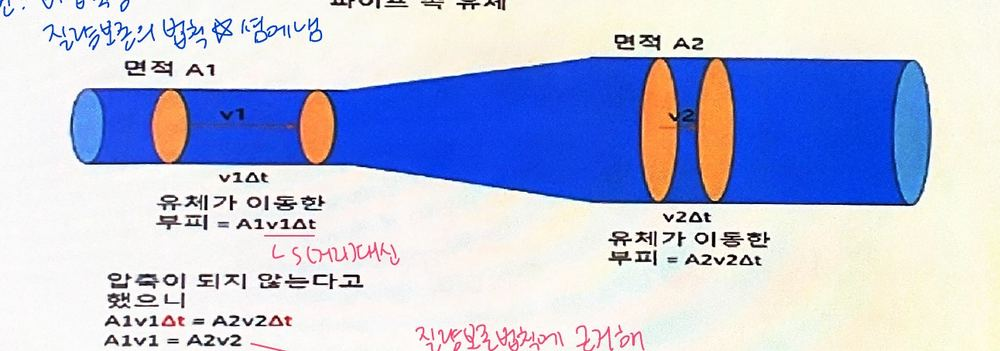
Δt 동안 이동한 부피 = 단면적 × 이동거리(\(v\Delta t\), 거리 S 대신). 압축이 되지 않는다고 했으니
\[ A_1 v_1 \Delta t = A_2 v_2 \Delta t \ \Rightarrow\ A_1 v_1 = A_2 v_2 \]질량보존법칙에 근거해: 파이프가 넓어지면 유체 속도가 느려지고, 좁아지면 빨라진다.
유체 연속 방정식
- 베르누이 정리는 에너지보존법칙으로 성립되는 방정식, 연속방정식은 질량보존의 법칙을 근거로 한 방정식.
- 연속방정식: 정상적으로 흐르는 유체가 임의의 한 단면을 통과하는 질량은 다른 임의의 단면을 통과하는 단위시간당 질량과 같다는 방정식. (단, 밀도는 같고 일정, 같은 시간이라는 조건 → 정상유동)
- 즉 같은 시간 동안 같은 부피만큼 통과한다.
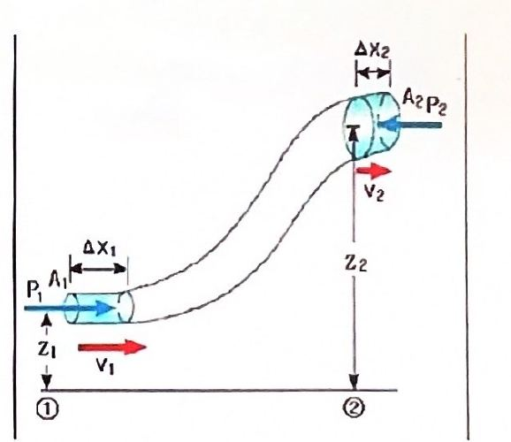
(일반형: 밀도가 변하면 \(\rho_1A_1v_1 = \rho_2A_2v_2\))
베르누이 방정식 Bernoulli equation
에너지 보존의 법칙의 다른 표현. 물체가 이동해도 그 물체가 한 일과 보유하는 에너지의 총합에는 변함이 없다. 관경이 작아지고 위치(높이)가 변해도 같은 배관 안에서 흐르는 유체의 위치에너지, 속도에너지, 압력의 총합은 일정하다.
→ 피토관의 원리.
- 베르누이의 근거는 에너지 보존의 법칙. 이 조건이 없으면 베르누이 정리는 성립하지 않는다. 세 항의 합이 일정해야만 베르누이라고 부를 수 있다.
- 압력(PV), 운동에너지(\(\tfrac12 mV^2\), m 대신 ρ를 써도 같은 의미), 높이 → 셋 다 같은 ‘일’에서 도출된 것. 그래서 한쪽이 올라가면 다른 쪽이 낮아진다.
- 이 식에서 파생된 것이 피토트관: 정압과 동압의 합이 같다는 걸 전제로, 정지 압력과 움직이는 압력의 차(ΔP)로 비행기 속도를 구한다. 비행기 속도는 이 방법으로밖에 알 수 없다.
- 피토관은 Pitot line(전압)과 Static line(정압) 두 라인을 써서 ΔP를 찾는다.
- 토리첼리는 파스칼보다 앞선 사람이라 생략된 게 많다. \(C_v\sqrt{2gh}\)는 분출 속도를 대략적으로 나타낸 식.
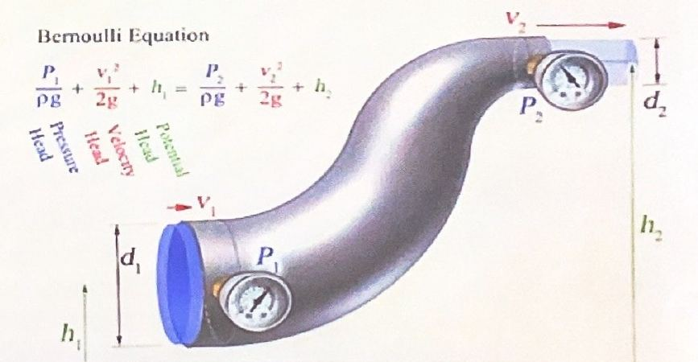
v: 유동속도, g: 중력가속도, h: 높이, P: 압력, ρ: 밀도
유도: 에너지 보존 → 압력 차원 → 길이 차원
일: \(F = PA\) 이므로 \(PAS = PV\). 운동에너지: \(m = \rho V\) → \(\tfrac12 V\rho V^2\). 위치에너지: \(V\rho g h\).
\[ PV + \tfrac{1}{2}V\rho V^2 + V\rho g h = \text{일정} \]압력 차원으로: 체적 V로 전부 나누면
\[ P + \tfrac{1}{2}\rho V^2 + \rho g h = \text{일정} \]길이(위치) 차원으로: 양변을 \(\rho g\)로 나누면
\[ \frac{P}{\rho g} + \frac{V^2}{2g} + h = \text{일정} \]- 일 → 체적과 압력으로 표현됨 ⇒ 체적이 변했다? 일을 했다~
- 세 항은 모두 일(에너지)과 관련.
- OO수두 = OO를 기준으로 만든 식 (압력수두, 속도수두, 위치수두).
| 항 | 압력 차원 이름 | 길이 차원(수두) 이름 |
|---|---|---|
| \(P\) / \(P/\rho g\) | 정압 | 압력수두 |
| \(\tfrac12\rho V^2\) / \(V^2/2g\) | 동압 | 속도수두 |
| \(\rho g h\) / \(h\) | 위치압 | 위치수두 |
운동량과 충격량
그러므로 충격량은 운동량의 변화량과 같다.
운동에너지 = 일
일한 만큼 운동에너지를 갖는다. 힘을 가하면 없던 속도가 생긴다.
\[ W = F\times S,\quad F = ma,\quad S = \tfrac{1}{2}Vt \]a = ΔV/t, 처음 속도는 0이므로
\[ W = \left(m\frac{V-0}{t}\right)\left(\tfrac12 V t\right) = \tfrac{1}{2}mV^2 \]즉 일은 바로 운동에너지와 같다.
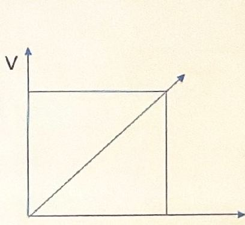
경계층에서 관성력이 더 큼 → 난류 / 점성력이 더 큼 → 층류.
토리첼리의 정리 Torricelli’s theorem
베르누이 방정식을 이용해 수조 하부 측벽의 작은 구멍(오리피스)으로 분출되는 유체 속도를 계산하는 정리.
\(C_v\): 유속계수 (보통 0.95~0.99, 마찰 등 반영), g = 9.81 m/s², h: 높이
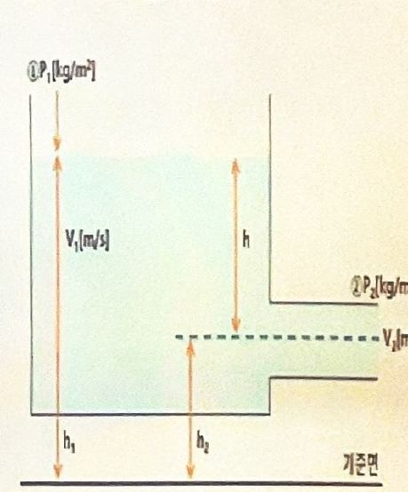
- 압력은 모든 방향에서 같으므로 \(P_1 = P_2 = P_a\)(대기압) → 압력 항 생략.
- 수조가 오리피스보다 매우 크면 수면 하강 속도 \(V_1 \approx 0\) → 생략.
- 높이차 \(h_1 - h_2 = h\) → \(v = \sqrt{2gh}\), 손실 보정하면 \(v = C_v\sqrt{2gh}\).
피토트관 Pitot tube
피토트관은 동압의 성질을 이용해 속도를 측정하는 장치. 실제 항공기에서는 ‘다이어프램’이나 ‘전기적 신호장치’로 속도를 측정한다. 측정 방법은 동압과 정압의 차.
- 속도계: 동압 + 정압 모두 사용 (Pitot line + Static line).
- 승강계, 고도계: 정압만 사용.
- 고도 ↑ → 정압 ↓ → (고도계 아네로이드 캡슐이) 반응.
- 속도 ↑ → 동압 ↑ → 다이어프램 내부 P ↑ → 다이어프램 팽창 → 바늘이 움직임.
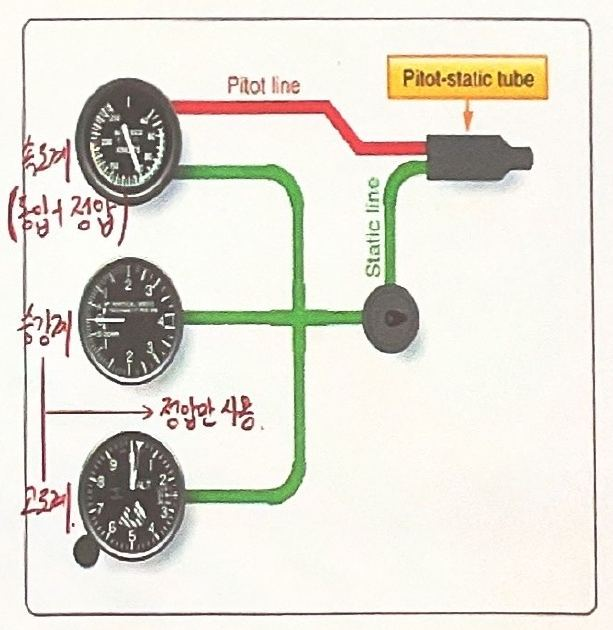
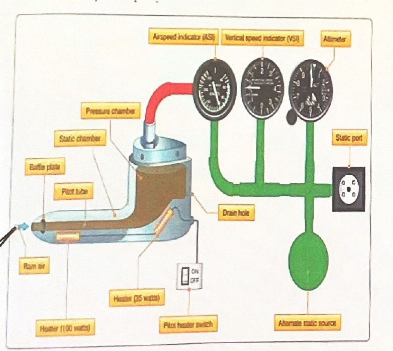
공기 밀도 ≈ 1.2 kg/m³ (1기압, 20 ℃). ※ 압력(정압)과 속도(동압)는 서로 ‘반비례’ (하나가 크면 다른 하나는 작다). 이 식들은 식 자체를 알 필요는 X.
기체의 압축성과 압력 등방성
10장 압력의 등방성 다시 보기(스칼라, 식 증명은 안 냄) + 액주계 · 26장 마하수(관성력 / 압축력)
기체의 압축성 효과
기체의 압축성 효과는 압력과 온도 변화에 따라 기체의 밀도가 달라져 유동 특성이 변하는 현상. 유속이 음속에 가까워질수록 마하수의 영향이 커져 충격파, 항력 증가, 압력·온도 변화가 나타나므로 항공기, 노즐, 가스 터빈 설계에서 중요하게 고려한다.
| 구분 | 압축성 유체 | 비압축성 유체 |
|---|---|---|
| 대표 사례 | 기체 흐름 | 액체 흐름, 저속 기체 흐름 |
| 밀도 변화 | 압력과 온도 변화에 따라 변화 | 밀도 변화를 무시 |
| 해석 방법 | 에너지 방정식·상태 방정식·충격파 이론 | 베르누이 정리·연속 방정식 중심 |
마하수에 따른 압축성 효과 ⭐ 셤
| 마하수 구간 | 압축성 효과의 특징 | 해석상 고려 사항 |
|---|---|---|
| M < 0.3 | 밀도 변화가 작은 영역 | 비압축성 유동으로 근사 가능 |
| 0.3 ≤ M < 1 | 압축성 효과가 점차 중요해지는 영역 | 밀도 변화 고려 필요 |
| M ≈ 1 | 국부 유속이 음속에 가까운 영역 | 급격한 유동 변화 가능 |
| M > 1 | 충격파와 강한 압력·온도 변화 가능 | 충격파 이론과 에너지 방정식 필요 |
마하수 0.3이 기체의 압축 유무를 결정한다. 압축성 여부는 마하수가 결정.
- 특히 초음속 유동에서는 충격파가 생길 수 있고, 익형 표면의 충격파는 항력을 증가시킨다.
- 단순히 속도만이 아니라 유동장의 국부 마하수와 압력 변화를 함께 검토하는 것이 좋다.
항공기 설계 시 국부 마하수가 1이 안 되게 만들어 준다 (날개 위 가속 구간에서 국부적으로 음속을 넘지 않도록).
- “기체의 압축 여부를 어느 걸 기준으로 판단하느냐” → 답은 마하수(0.3). 시험 문제가 마하수다.
- 항공기는 기체(공기)의 영향을 많이 받기 때문에 압축성 판단이 중요하다.
- 여객기가 마하 0.8로 날아도 날개 부분부분에서는 국부 마하수가 1에 도달하는 경우가 생긴다. 이를 막으려고 날개에 후퇴각을 주고 팁 형상 등을 만들어 준다. 설계의 관건은 국부적으로 마하 1까지 가지 않게 하는 것.
액체의 비압축성
액체의 비압축성: 압력을 가해도 부피와 밀도가 거의 변하지 않는 성질. 분자들이 이미 가깝게 배열돼 추가로 압축될 여지가 적기 때문이며, 일반 유체역학에서는 밀도 변화를 무시하는 근사로 다룬다.
| 구분 | 의미 |
|---|---|
| 비압축성 유체 | 압력 변화에도 밀도가 일정하다고 보는 가상의 유체 |
| 비압축성 흐름 | 실제 유체의 밀도 변화가 무시할 만큼 작은 흐름 |
| 연속 방정식 | 유속 발산이 0인 형태로 단순화 (\(\nabla\cdot\vec V = 0\)) |
| 응용 분야 | 수리학, 저속 유체 흐름 해석 |
- 비압축성 유체와 비압축성 흐름을 구분할 것. 전자는 계산을 단순화하기 위한 이상적 설정, 후자는 실제 액체 흐름에서 밀도 변화가 작다는 조건.
- 액체와 기체는 모두 흐르고 용기 모양에 맞춰지지만, 분자 간 거리와 밀도 유지 능력에서 차이가 난다. “액체는 비압축성”은 절대값이 아니라 대부분 상황에서 압축 효과가 작다는 뜻.
- 완전한 비압축성은 아니다. 극도로 높은 압력이나 특별한 조건에서는 압축성이 나타나므로 일반 공학 문제에서만 근사로 쓰는 편이 안전.
- 온도 변화까지 고려하면 밀도가 달라질 수 있다. 비압축성 가정은 주로 외부 압력 변화에 따른 밀도 변화를 무시한다는 뜻이므로, 온도 변화가 큰 경우 별도 검토가 필요.
- 물의 부피는 예외적으로 살펴볼 필요가 있다. 액체 부피는 대체로 같은 무게의 고체보다 크지만, 물은 얼음보다 부피가 작은 예외.
압력의 등방성 Isotropy of pressure
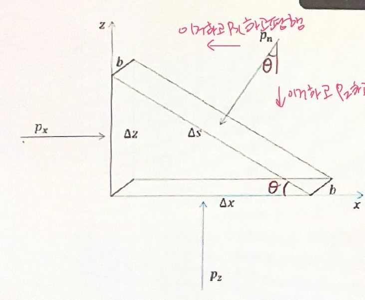
- 식 설명은 안 함 (결론만).
- \(p_n\)의 성분: 이거하고 \(p_x\)하고 평행 / 이거하고 \(p_z\)하고 평행.
- 한 점에 모이면 \(\Delta z \to 0\) 모든 방향 압력은 같다.
점성과 뉴턴의 점성법칙
12장 점도계(점성을 실제로 재는 방법) · 19장 표면장력(온도 ↑ → 감소) · 22장 레이놀즈수(유도 과정 ⭐ 주관식)
이 장은 전부 시험 범위로 보고, 특히 온도 의존성, τ = μ du/dy의 의미, μ와 ν의 차이를 확실히.
기체와 액체의 점성 변화 ⭐ 셤
온도가 높아지면 액체의 점성은 감소하고 기체의 점성은 증가한다.
| 온도 ↑ | 이유 | |
|---|---|---|
| 액체 | 점성 ↓ | 분자 간 인력이 약해져 흐름 저항이 줄어듦 |
| 기체 | 점성 ↑ | 분자 운동과 충돌이 활발해져 저항이 커짐 (운동량 전달 증가) |
- 마그마는 온도뿐 아니라 규소 함량 등 화학 조성에 따라서도 점성이 크게 달라진다.
- 같은 온도 변화라도 액체와 기체의 반응이 서로 반대라는 점이 중요. 특히 액체는 온도에 따라 점성이 상당히 달라질 수 있으므로 실험·산업 공정에서는 측정 당시의 온도를 함께 기록하는 편이 좋다.
- 액체: 온도가 높을수록 분자들이 더 쉽게 움직여 흐름에 대한 내부 저항이 작아진다 (필기: = 점성이 약하다). 그래서 액체의 점도는 온도 변화에 민감.
- 기체: 온도가 높을수록 분자 운동과 충돌이 활발해져 운동량을 전달하기 쉬워진다. 이 과정에서 흐름을 방해하는 효과가 커져 점성이 높아진다.
- “온도가 높아지면 액체의 점성은 감소하고 기체의 점성은 증가한다” → 시험 문제로 냈다고 다시 강조.
- 기체는 분자 운동과 충돌이 활발해져 저항이 커진다 = 점도가 높아진다.
- 액체는 온도에 따라 점성이 크게 달라지니 반드시 측정 당시 온도를 함께 기록. 점성계수·동점성계수 표에는 항상 “20 ℃”처럼 기준 온도가 붙어 있다. 온도가 바뀌면 다른 값이 나온다.
- 점성계수는 압력과 온도 영향을 받지만 압력은 그리 큰 영향이 없고, 온도가 큰 영향을 준다.
전단응력 Shear stress ⭐ 주관식
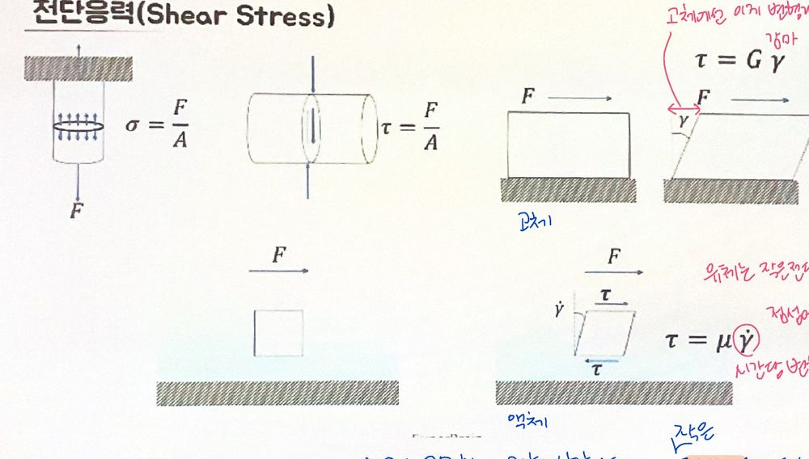
- 고체에선 γ(감마) 자체가 변형량.
- 유체는 작은 전단력에도 변화가 크다.
- 점성에 따라 각의 변화(속도)가 달라진다. 온도도 관련 있음.
Q. 물(유체)은 무슨 힘에 의해 변형되는가?
→ 작은 전단력에도 쉽게 변형이 일어난다. (유체는 전단응력에 저항하지 못하고 계속 변형한다)
⭐ 정상유동의 정의도 주관식으로 나온다 → 5장.
- 그림은 물속의 한 부분(유체 요소)을 떼어 낸 것. 물체가 들어가 있는 게 아니다.
- 유체에는 고체 같은 인장·압축 저항이 없어서, 옆으로 힘(전단력)을 주면 바로 찌그러진 모양이 된다. 버티는 힘이 없다.
- \(\dot\gamma\)의 점 = 시간에 따라, 즉 1초당 몇 도씩 각도가 변하느냐.
- 시험: “물은 무슨 힘에 의해서 변형이 생기는가?” → 전단력. 정의: 액체는 아무리 작은 전단력에도 쉽게 변형이 일어난다. 주관식 괄호 채우기 2문제 중 하나.
두 평행 무한 평판 사이의 점성 유동 Couette flow
위 평판에 가해지는 전단력(점성력):
\[ F = \tau A = \mu\frac{VA}{h} \]고정된 판에서 발생하는 최대 전단응력:
\[ \tau = \mu\frac{du}{dy} = \mu\frac{V}{h} \]du: 순간 속도(변화). ☝️ 뉴턴의 점성법칙
위 판은 u = V로 움직이고, 고정판에서는 u = 0. 그 사이 속도 u(y)는 직선으로 분포.
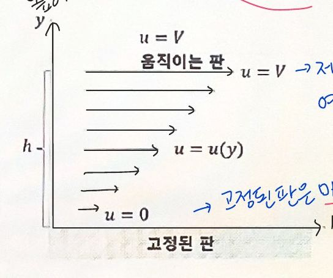
- 속도 분포가 선형적이기 때문에 뉴턴 유체임.
- 위로 갈수록(판 쪽) 속도 ↑ — 저항을 거의 안 받는 속도. 고정된 판은 마찰력 때문에 속도가 낮음.
- 점성력 영향이 크다 → 층류 / 관성력 영향이 크다 → 난류.
필기에 판 위쪽 ‘난류’, 아래쪽 ‘층류’로 적힌 부분은 ‘벽에서 멀수록 속도·관성 효과가 크고, 벽 근처는 점성 효과가 지배적’이라는 의미로 이해하자. 두 평판 사이 쿠에트 유동 자체는 직선 속도 분포의 층류다.
- 고정판은 속도 0. 위로 올라갈수록 마찰력(점성)의 영향을 벗어나 속도가 선형적으로 조금씩 증가한다.
- u는 선형적으로 변해 가는 속도, V는 영향 범위를 벗어나 흐르는 속도 = 교과서의 \(V_\infty\)(무한대 표시). 항공기 경계층에서 말하는 그 속도로, 항공기 주변을 흐르는 속도에 근접해 저항을 전혀 안 받는 속도.
- 이 V를 기준으로 경계층이 형성된다. 경계층 안은 점성력 영역, 경계층을 벗어나면 관성력 영역.
- 그래서 레이놀즈 수 = 관성력 ÷ 점성력으로 연결된다. 점성력 영향이 크면 층류, 관성력 쪽으로 넘어가면 난류가 되고 박리 현상이 일어나기 시작한다.
뉴턴의 점성법칙 Newton’s law of viscosity ⭐ 외워
- \(\mu\): 점성계수 → 의미를 잘 이해해 ⭐
- \(du/dy\): 속도 구배, 각변형속도, 각변형률
- F: 전단력, A: 유체와 접하고 있는 평판의 면적
점성계수의 단위
| 단위계 | 단위 |
|---|---|
| SI | N·s/m² = Pa·s = kg/(m·s) |
| 중력 단위 | kgf·s/m² |
| cgs | dyne·s/cm² = 1 poise (P) |
| 1 cP = 1 centipoise = 0.01 poise = 1 mPa·s | |
| 차원 | [FL⁻²T] = [ML⁻¹T⁻¹] |
- 점성계수는 힘과 관련돼 있다~
- N·s/m²의 의미: 단위면적당, 특정 시간에 작용되는 힘.
- μ의 단위 Pa·s = 압력(면적당 힘) × 시간 → 얼마나 힘이 많이 들어가느냐. 점성이 크면 힘이 많이 들어가고 잘 퍼뜨리기 힘들다.
- ν의 단위 m²/s → 1초 동안 몇 m²가 퍼져 나가느냐. 동점성계수가 높다 = 많이 퍼진다(묽게 흐른다).
- 물은 점성계수(힘) 쪽으로, 공기는 동점성계수(확산) 쪽으로 이해하면 빠르다. 공기는 밀도가 거의 없어 동점성계수가 클 수밖에 없다.
- CGS 단위로는 poise(P)를 쓰고, 동점성계수는 스토크스(St).
| μ (Pa·s) | ν (m²/s) | |
|---|---|---|
| 물 | 약 1.0 × 10⁻³ (큼) | 약 1.0 × 10⁻⁶ |
| 공기 | 약 1.8 × 10⁻⁵ | 약 1.5 × 10⁻⁵ (큼) |
μ는 물이 공기보다 약 50배 크지만, ν는 공기가 물보다 약 15배 크다. 공기 밀도가 물의 약 1/800이라서다. 리뷰 강의에서 말한 “공기는 1.4 × 10⁻⁵ 정도”가 이 동점성계수 값.
점성계수 그래프
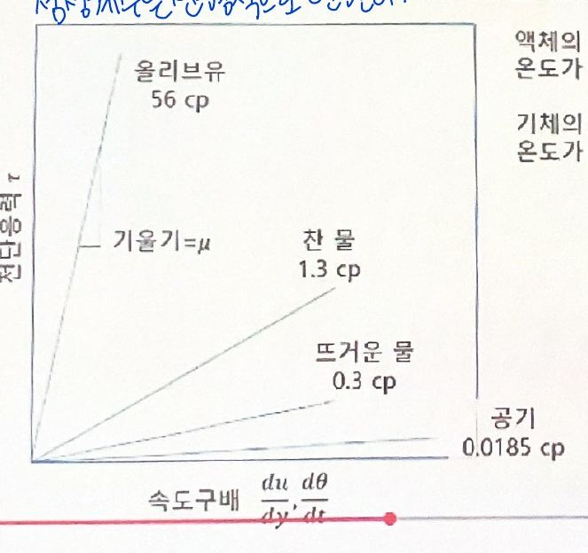
- 그래프의 기울기 = μ. 올리브유 56 cP, 찬물 1.3 cP, 뜨거운 물 0.3 cP, 공기 0.0185 cP.
- 액체: 온도가 증가하면 점성이 작아짐 (찬물 → 뜨거운 물).
- 기체: 온도가 증가하면 점성이 증가함.
전단응력이 속도구배에 선형적으로 변한다(직선) ⇒ 뉴턴 유체.
뉴턴 유체와 비뉴턴 유체 그래프
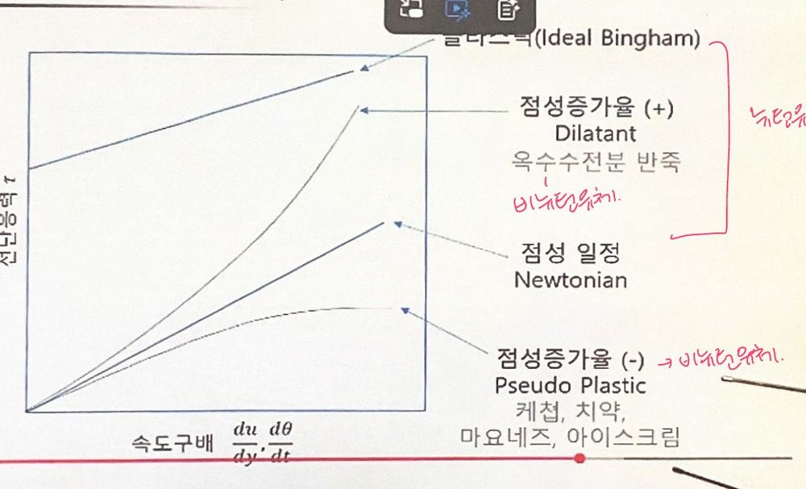
| 곡선 | 특징 | 예 | 분류 |
|---|---|---|---|
| 빙햄 플라스틱 (Ideal Bingham) | 일정 응력 이상에서 흐르기 시작 (항복응력) | — | 비뉴턴 |
| 점성증가율 (+) Dilatant | 속도구배 ↑ → 점성 ↑ | 옥수수전분 반죽 | 비뉴턴 |
| 점성 일정 Newtonian | 원점을 지나는 직선 | 물, 공기, 기름 | 뉴턴 |
| 점성증가율 (−) Pseudo Plastic | 속도구배 ↑ → 점성 ↓ | 케첩, 치약, 마요네즈, 아이스크림 | 비뉴턴 |
필기에서 위쪽 세 곡선을 묶어 ‘뉴턴유체’로 괄호 친 부분은 착오. 뉴턴 유체는 ‘점성 일정(Newtonian)’ 직선 하나뿐이고, 빙햄·다일레이턴트·의가소성은 모두 비뉴턴 유체다 (필기에도 다일레이턴트·의가소성 옆에 ‘비뉴턴유체’라고 적혀 있음).
- 직선(기울기는 달라도 일정하게 올라감) = 선형 = 뉴턴 유체. 기울기가 μ.
- 곡선 = 비선형 = 비뉴턴 유체.
- 점성증가율 (+) 다일레이턴트: 저으면 저을수록 점성이 커진다. 밀가루·전분 반죽을 젓다 보면 굳어 가는 것.
- 점성증가율 (−) 의가소성: 빨리 저을수록 부드러워진다(점성이 약해짐). 케첩, 마요네즈 등. 실생활에서 느낄 수 있는 비뉴턴 유체.
점성과 점성계수
- 유체가 얼마나 끈적끈적한지 = 점성. 유체의 유동성을 나타내는 척도.
- 유체가 균일하지 않은 속도로 흐를 때 점성 때문에 이웃한 유체 입자는 서로의 마찰력(= 점성), 즉 전단력을 가하게 된다.
- 단위 면적당 전단력 = 전단응력, 유체의 속도 기울기와 관련.
- 뉴턴 유체: 전단응력이 전단 변형률(속도 기울기)에 선형적으로 비례. 물, 기름, 공기, 대부분의 유체.
- 비뉴턴 유체: 선형적으로 비례하지 않는 유체. 혈액, 샴푸, 치약 등.
τ: 전단응력(Pa = N/m²), du/dy: 속도 기울기·전단 변형률. μ = 힘/면적 ÷ 속도/거리.
- 점성계수는 유체의 흐름 방향에 작용하는 전단응력과 속도 구배 사이의 비례상수로, 흐름에 저항하는 정도를 나타낸다.
- 역학적 점성계수(Dynamic viscosity): 전단응력 τ와 속도 구배 du/dy 사이의 비례상수 μ. 단위 N·s/m² 또는 kg/(m·s).
- 동점성계수(Kinematic viscosity): 역학적 점성계수 μ를 유체의 밀도 ρ로 나눈 값 (ν = μ/ρ). 단위 m²/s 또는 스토크스(St).
- 밀도로 나눔 ⇒ 질량과 관련있다.
- m²/s = 면적/시간: 단위시간당 유체가 얼마만큼의 면적을 차지하느냐(퍼지느냐).
- 측정이 편해서 동점성계수를 더 많이 씀.
점성계수의 특징
- 온도 의존성: 액체는 온도 ↑ → 점도 ↓, 기체는 온도 ↑ → 점도 ↑.
- 유체 분류: 점성계수가 상수인 유체는 뉴턴 유체, 비선형이면 비뉴턴 유체.
- 흐름 영향: 점성계수는 관성력과 점성력의 비인 레이놀즈 수에 영향을 주어 층류와 난류를 결정하는 요소. (필기: 동점성계수로 레이놀즈 수를 바로 계산, \(Re = VL/\nu\))
- 가해진 힘이 아닌, 압력 및 온도만의 함수로서, 액체 특성을 나타내는 고유의 물성임 – 유체 점성은 온도 증가에 따라 액체에서는 감소되나 기체에서는 증가함
- 점성계수는 보통 압력과 온도에 영향을 받지만 압력은 큰 영향이 없다, 온도의 영향을 많이 받는다.
동점성 계수 Kinematic viscosity
- 점성 계수 μ를 밀도 ρ로 나눈 값으로, 유체의 운동량 확산이나 점성 효과가 퍼져나가는 정도를 나타내는 물성.
- 유체가 중력의 영향 아래에서 흐름에 저항하는 정도를 밀도까지 고려해 나타낸 값.
- 점성 계수가 유체 내부의 마찰력을 직접 나타낸다면, 동점성 계수는 유체가 자신의 질량에 비해 얼마나 잘 흐르는지를 보여준다.
- 기호 ν(뉴), SI 단위 m²/s. 윤활유 규격에서는 스토크스(St)나 센티스토크스(cSt)도 널리 쓰인다. 1 St = 10⁻⁴ m²/s.
- 온도·압력에 따라 달라진다. 액체는 온도 ↑ → 동점성 계수 ↓, 기체는 온도 ↑ → 동점성 계수 ↑.
- 동점성 계수는 유체의 점성력과 관성력의 비를 의미하기도 한다.
역학적 점성계수 vs 동점성계수
| 구분 | 역학적 점성계수 | 동점성계수 |
|---|---|---|
| 기호 | μ (뮤) | ν (뉴) |
| 물리적 의미 | 전단응력에 대한 저항 = 힘에 대한 저항 | 점성력과 관성력의 비 = 확산력 |
| 관계식 | \(\tau = \mu\,\dfrac{du}{dy}\) | \(\nu = \dfrac{\mu}{\rho}\) |
| 표준 단위 | N·s/m², kg/(m·s) | m²/s |
- 역학적 점성계수(μ)는 유체에 얼마만큼의 힘이 필요한지를 직접 보여주고, 동점성계수는 밀도 효과까지 고려해 유체가 얼마나 빠르게 운동량을 퍼뜨리는지를 평가한다.
- 그래서 유동 해석에서는 끈적임뿐 아니라 유체의 무게와 관성까지 함께 살펴볼 때 동점성계수가 특히 중요하다.
- 측정할 때는 유체 층 사이의 속도 변화(속도구배)를 기준으로 삼는다. 관 벽면에서는 유속이 거의 없고 중심부로 갈수록 빨라지므로, 벽에서 떨어진 위치에 따라 속도 차이가 생기고, 그 마찰 항력으로 점성계수를 구할 수 있다.
- 액체는 온도가 올라갈수록 점성계수가 감소: 분자 사이 인력이 약해져 흐름 저항이 줄기 때문. 기체는 온도가 올라갈수록 점성계수가 증가: 분자 운동이 활발해지고 충돌이 늘어 운동량 전달과 소산이 커지기 때문. ⭐ 셤
뉴턴의 점성법칙 정리
- 뉴턴의 점성법칙: 유체의 전단응력 τ가 속도구배 du/dy에 비례한다는 법칙, \(\tau = \mu\,du/dy\).
- μ는 점성계수. 점성계수가 클수록 같은 속도 변화율에 대해 더 큰 전단응력이 생긴다.
- 중요: 뉴턴 유체인지 아닌지를 결정하는 기준은 점성의 유무가 아니라, 전단응력과 속도구배가 일정한 비례 관계를 따르는지에 있다.
- 실제 유체는 온도·압력 등 조건에 따라 점성이 달라지므로, 실험 조건을 맞춰 비교하는 것이 중요.
- 전단응력: 유체의 인접한 층이 서로 미끄러질 때 단위 면적에 작용하는 접선 방향의 힘. 쉽게 말해 유체 내부에서 층끼리 끌어당기고 버티는 힘.
- 속도구배: 흐름 방향에 수직인 거리 y에 따라 속도 u가 얼마나 빠르게 변하는지. 가까운 층 사이의 속도 차이가 클수록 속도구배도 커진다.
- 점성계수: 유체의 흐름에 대한 저항 정도. 같은 속도구배에서도 점성계수가 큰 유체는 더 큰 전단응력을 받는다.
응용
- 움직이는 판 위의 유체: 판과 고정벽 사이 간격을 dy, 판의 속도와 고정벽 속도의 차이를 du로 보면 \(\tau = \mu\,du/dy\)로 전단응력을 구할 수 있다.
- 파이프 속 유동: 중심부와 벽면 쪽의 속도 분포로 유체 내부의 전단응력을 살펴볼 수 있다.
- 윤활막: 두 표면 사이에 낀 유체의 점성과 속도 변화가 윤활 성능에 영향. 실제 윤활유 점성은 온도 등에 따라 달라지므로 측정 조건을 함께 고려.
- 윤활유·O-ring: 피스톤 왕복 운동 부위에 넣는 오일은 O-ring의 주 역할인 기밀을 돕는다. 너무 묽으면(잘 퍼지면) 기밀이 안 되므로 어느 정도 점성이 유지돼야 한다.
- 점성은 온도 영향을 크게 받으니, 작동 온도(수백 ℃)에서도 점성이 잘 변하지 않는 오일을 골라야 한다. 윤활유마다 점성 수치가 적혀 있고 거기에 맞는 걸 쓴다.
- 자동차 엔진오일 교환도 같다: 차마다 온도·배기량이 달라 맞는 점도 표시의 오일을 고른다.
- 와인 잔을 돌리는 이유 중 하나: 잔 벽에 묻은 와인이 흘러내리는 속도로 점성(농도)을 본다. 싼 와인은 물처럼 쭉 내려오고, 오래된 진한 와인은 천천히 내려온다.
- “점성 = 마찰력 = 전단력, 같은 말이 계속 반복된다. 이해를 해야 외워진다.”
교수님 출제 예고 문제
문제를 먼저 풀고 정답·해설을 펼쳐 확인하세요. 주관식은 빈칸을 누르면 답이 나옵니다. 초록 카드 수업 녹음은 교수님이 문제를 알려주면서 덧붙인 설명이에요.
주관식 ⭐ 주관식
유체는 아무리 작은 에도 저항할 수 없이 변형하는 물체다.
해설
유동장의 어느 한 점에서 에 따라 , , 가 변하지 않는 흐름.
해설
객관식
정답·해설
연속방정식 \(A_1v_1 = A_2v_2\)는 질량보존, 베르누이 방정식은 에너지보존. 전제조건은 비압축성(정상유동). 둘을 바꿔 낸 보기에 주의. → 7장
“연속방정식은 질량 불변의 법칙과 관계가 있는 거다.”
정답·해설
압력(정압) + 동압 + 위치에너지의 합이 일정: \(P + \tfrac12\rho V^2 + \rho g h = \text{const}\). 피토관은 전압과 정압의 차(= 동압 \(\tfrac12\rho V^2\))로 속도를 구한다. → 7장
- 베르누이 방정식은 일에서 시작한다. 일 = 힘 × 거리 → 여기서 유추된 것이 \(PV\). 체적이 변한다 = 일을 한다.
- 동압 쪽은 \(\tfrac12 mV^2\), 밀도로 쓰면 \(\tfrac12\rho V^2\) (같은 의미).
- 압력·동압·위치는 하나의 일(에너지)을 형태만 바꿔 놓은 것 → 합이 항상 같다. 그래서 하나가 올라가면 하나는 내려가는 상관관계.
- 피토관은 이 동압과 정압의 관계를 이용해 V를 구한다 → 속도계.
- 속도
- 압력
- 밀도
- (시험지의 나머지 보기 하나)
정답·해설
정상 흐름 = 한 점에서 시간에 따라 속도·압력·밀도가 변하지 않는 흐름. 이 셋은 구별 기준 그 자체라서 ‘관계있는’ 것이고, 정답은 이 셋을 제외한 보기다. 정상/비정상은 흐름이 빠른지 느린지, 층류/난류인지와는 별개의 분류. → 5장
“정상 흐름의 정의만 알면 된다. 시간의 변화에 따라 속도, 압력, 밀도가 변하지 않는 것. 그러면 그 3개를 제외한 거겠지, 답은.”
정답·해설
- “공부하는 사람들은 이렇게 틀려. 수업시간에 답이 나오잖아. 체적탄성계수예요.”
- 체적 쪽 식에 마이너스가 붙는 이유: 압력이 올라가면 체적은 줄어드니까. 밀도로 쓰면 플러스: 압력이 증가하면 밀도가 올라가니까.
- 밀도가 변한다 = 압축이 됐다. 체적탄성계수와 압축률은 반비례: 체적탄성계수가 높다 → 압축이 잘 안 된다 / 압축률이 높다 → 압축이 잘 된다.
받아 적은 식 ‘\(-\dfrac{dv/v}{dp/p}\)’는 분자·분모가 섞였다. 체적탄성계수는 압력 변화 ÷ 부피 변화율 \(K = -\dfrac{dP}{dV/V}\), 그 역수가 압축률 \(\beta = -\dfrac{dV/V}{dP}\).
정답·해설
“이상기체 상태방정식에서 압력이 일정할 때 부피와 온도의 관계 → 샤를의 법칙. 여러 번 얘기했으니까 따로 설명 안 하겠어.”
- 동압은 밀도에 반비례한다.
- 유체 속도가 증가하면 정압이 증가한다.
- 정압은 유체 속도로 인해 발생하는 압력이다.
- 정압과 동압의 합은 일정하다.
정답·해설
- ① ✗ 동압 \(\tfrac12\rho V^2\)는 밀도에 비례.
- ② ✗ 속도 ↑ → 동압 ↑ → 정압 ↓ (정압과 동압은 서로 ‘반비례’ 관계).
- ③ ✗ 유체 속도로 인해 생기는 압력은 동압. 정압은 정지한 유체가 가하는 압력.
- ④ ○ 같은 높이의 유선 위에서 \(P + \tfrac12\rho V^2 = P_t\) = 일정.
- 수업에서 보기를 하나씩 불러 주며 확인한 그대로: ① 틀림(비례) ② 아님 ③ 동압이지 ④ 맞는 답.
정답·해설
| 일정한 것 | 관계 | 법칙 |
|---|---|---|
| 온도 | P ∝ 1/V | 보일 (8번) |
| 압력 | V ∝ T | 샤를 (6번) |
| 부피 | P ∝ T | 샤를 / 게이뤼삭 |
| 온도·압력 | V ∝ n | 아보가드로 (12번) |
- 속도계
- 고도계
- 승강계
- (시험지의 나머지 보기)
정답·해설
피토-정압 계통으로 측정할 수 있는 계기는 이 세 가지.
| 계기 | 사용 압력 |
|---|---|
| 속도계 (ASI) | 동압 + 정압 (Pitot line + Static line) |
| 고도계 | 정압만 (고도에 따른 기압 차) |
| 승강계 (VSI) | 정압만 (상승·하강에 따른 기압 변화) |
“피토관으로 측정할 수 있는 장비는? 속도계, 그다음 정압을 이용해서 알 수 있는 고도계, 그다음 승강계. 상승하는 것도 마찬가지로 기압에 따라서 일어날 수 있다.”
- 자동차의 유선형 형상
- 골프공의 비거리 향상을 위한 홈(딤플)
- 제트엔진 추력 향상
- (시험지의 나머지 보기)
정답·해설
교수님이 하나씩 짚어 준 세 보기는 모두 유체역학 응용 사례(관련 있음). 특히 제트엔진은 “애매해서 다들 틀린다”고 강조.
- 자동차 유선형: 흐름(유선)과 관련 → 응용 사례 맞음.
- 골프공 홈(딤플): 홈에서 작은 와류가 생겨 표면 흐름을 붙잡아 박리를 지연 → 공기 저항을 덜 받고 멀리 날아간다. 매끈한 공은 곡면이 커서 박리가 확 일어나 버린다.
- 항공기에서 같은 역할: vortex generator (엔진 옆 곡면 부위 등). 흐름에 와류를 만들어 박리를 지연시키는 것이 목적.
- 제트엔진 추력: 엔진에 들어가는 공기 유량 자체가 유체. 터보팬은 바이패스 공기가 추력의 80~90%가량을 낸다 → 유체역학과 관련 있음.
- 추가 예시: 마하 3급 항공기(수업에서 ‘블랙버드’로 언급) 엔진 입구의 원뿔(스파이크)은 앞뒤로 움직이며 들어오는 초음속 공기를 감속시켜, 엔진이 받아들일 수 있는 속도로 흐름을 만들어 준다.
‘블랙버드’는 폭격기가 아니라 록히드 SR-71 정찰기(마하 3 이상). 입구의 가동식 원뿔(inlet spike)이 충격파 위치를 조절해 공기를 아음속으로 감속시킨다. 수업에서 B-1, B-2와 이름이 섞여 언급됐지만 원리 설명은 같다.
수업 중 학생이 답한 마그누스 효과는 회전하는 공이 휘는 현상(야구공 커브)으로, 딤플이 비거리를 늘리는 주된 이유는 아니다. 핵심은 와류 → 박리 지연 → 항력 감소.
- 압력
- 온도
- 체적
- 몰수
정답·해설
“이상기체를 다룰 때 관련된 요소는 네 가지라고 얘기해 줬지. 온도, 압력, 체적, 몰수. 이게 아닌 게 답이지.”
이상기체 가정: 분자 부피 0, 분자 간 인력 없음, 탄성충돌만 하는 점입자. → 2장
정답·해설
오답 보기로 보일의 법칙이 나온다. “갑자기 생뚱맞게 보일의 법칙이야. 보일은 온도가 일정할 때 체적과 압력 관계(8번)고, 이건 아무 관계없는 얘기.” 정답은 아보가드로.
중간고사 문제 (복기)
시험지 원문이 아니라 리뷰 필기로 복원한 문제라서, 보기 전체가 남아 있지 않은 문항은 정답을 고르는 기준을 정답으로 적었어요. 출제 예고 표시는 교수님이 미리 알려준 문제와 같은 주제예요.
문제와 정답
정답·해설
정상유동·비압축성 조건에서 \(A_1V_1 = A_2V_2\): 관이 좁아지면 빨라지고 넓어지면 느려진다. 베르누이(에너지 보존)와 바꿔 낸 보기에 주의. → 7장
정답·해설
압축성·비압축성은 밀도 변화로 판단한다. 비압축성 조건은 \(D\rho/Dt = 0\). → 5장
정답·해설
| 계기 | 사용 압력 |
|---|---|
| 속도계 | 동압 + 정압 (Pitot line + Static line) |
| 고도계 · 승강계 | 정압만 |
정답·해설
정상흐름 = 한 점에서 시간에 따라 속도·압력·밀도가 변하지 않는 흐름. 이 셋은 구별 기준 자체라서 ‘관계있는’ 쪽이다. → 5장
정답·해설
\(\nu = \mu/\rho\) = (N·s/m²) ÷ (kg/m³) = m²/s. 1초 동안 몇 m²만큼 퍼져 나가느냐(확산)를 나타내는 단위. 실무 단위는 스토크스: 1 St = 1 cm²/s = 10⁻⁴ m²/s.
점성계수 μ: N·s/m² = Pa·s = kg/(m·s), 차원 [FL⁻²T] = [ML⁻¹T⁻¹], cgs 단위 poise(P). 동점성계수 ν: m²/s, 차원 [L²T⁻¹], cgs 단위 stokes(St).
- 경계층
- 레이놀즈 수(Re)
- 점성력
- 관성력
- (시험지의 나머지 보기)
정답·해설
필기에 이 넷은 ‘관계있는 것’으로 표시되어 있다. 연결 고리: \[ Re = \frac{\text{관성력}}{\text{점성력}} = \frac{VL}{\nu} \] 동점성계수는 레이놀즈 수를 바로 계산하는 값이고, Re로 경계층 안(점성력 우세)과 밖(관성력 우세), 층류·난류를 판단한다. → 9장
정답·해설
정답·해설
- 액체: 온도 ↑ → 분자 간 인력 약화 → 점성 ↓
- 기체: 온도 ↑ → 분자 운동·충돌 활발 → 점성 ↑
- 점성계수는 가해지는 힘으로 변하지 않는 상수, 압력·온도만의 함수. 압력 영향은 작고 온도 영향이 크다.
- 점성계수가 클수록 같은 속도구배에서 더 큰 전단응력 → 더 끈적하다.
정답·해설
| 구분 | 성질 | 예 |
|---|---|---|
| 종량적 | 질량에 비례, 나누면 값이 나뉨 | 질량, 체적, 내부에너지, 엔탈피, 엔트로피 |
| 강성적 | 질량과 무관, 나눠도 그대로 | 온도, 압력, 밀도, 비체적 |
정답·해설
- 기체의 압축성 여부는 온도로 결정된다.
정답·해설
기체의 압축성 여부는 마하수(속도)로 결정한다. 마하수 약 0.3 미만이면 비압축성으로 취급. 온도는 음속(19번)을 결정하는 요소라서 헷갈리게 섞어 낸 보기다. → 8장
정답·해설
정답·해설
온도·압력·밀도·비체적은 강성적. 구분 팁: 이름에 ‘비(比)’가 붙은 것(비체적, 비중량, 비열)은 단위 질량당 값이라 강성적이다. → 3장
정답·해설
- 동압은 밀도에 비례 (반비례 ✗)
- 속도 ↑ → 정압 ↓ (정압 증가 ✗)
- 유체 속도로 생기는 압력은 동압 (정압 ✗)
- 근거: 에너지 보존 / 조건: 정상·비점성·비압축성, 같은 유선 위
정답·해설
정답·해설
대기압까지 포함하면 \(P = P_0 + \rho g h\). 깊이에 따라 선형으로 증가한다. 유속이나 용기의 모양·면적은 정수압과 관계없다(정지 유체이므로). → 6장
물은 약 10 m(10.33 m)당 1기압씩 증가한다. 리뷰 강의의 “100 m당 1기압”은 수치가 다르니 계산 문제에서는 10 m 기준으로.
정답·해설
- 임계점(임계온도·임계압력)을 넘으면 액체와 기체의 구분이 사라진다.
- 기체처럼 잘 퍼지고(확산성), 액체처럼 물질을 잘 녹인다(용해성).
- 예: 초임계 이산화탄소로 커피의 카페인을 빼거나(디카페인) 식물에서 기름·성분을 추출한다.
- 삼중점: 고체·액체·기체가 함께 존재하는 점.
커피, 피아자유(?)가 이런 상태에서 나옴.
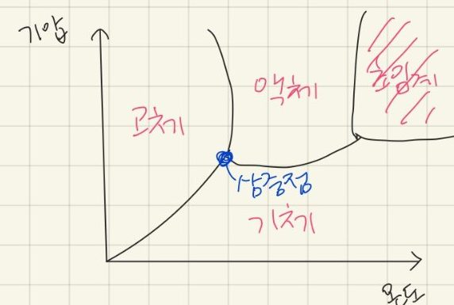
실제 상평형도에서 액체–기체 경계선(증기압 곡선)은 삼중점에서 임계점까지 오른쪽 위로 올라가며 이어진다. 초임계 영역은 임계온도 이상·임계압력 이상인 오른쪽 위 구역이다. 수업 슬라이드 범위 밖이라 개념 위주로 기억하면 된다.
정답·해설
지상에서는 약 340 m/s에서 음속 돌파, 상공에서는 더 낮은 속도(필기 320)에서 돌파 → 올라가면 속도를 많이 못 낸다. 속도 ↑ → 항력 ↑.
표준대기에서 해면(15 ℃)은 약 340 m/s, 고도 11 km(−56.5 ℃)는 약 295 m/s. 상공은 기온이 낮아 음속이 느리고, 같은 마하수 제한이라도 낼 수 있는 실제 속도가 줄어든다. 음속 근처에서는 충격파로 항력이 급증한다.
- 뉴턴 유체는 점성의 유무로 판단한다.
- 경계층의 정의에 사용된다.
정답·해설
뉴턴 유체인지는 점성의 유무가 아니라 전단응력과 속도구배가 선형(정비례)인지로 판단한다. 비뉴턴 유체도 점성이 있다. \[ \tau = \mu\frac{du}{dy} \] ‘경계층 정의에 사용된다’는 필기에 함께 적힌 보기로, 벽 근처의 속도구배와 전단응력을 다루는 식이라 맞는 설명이다. → 9장 뉴턴의 점성법칙
정답·해설
필기에 적힌 ‘기체의 경우 온도↑ 점성↑’은 맞는 설명이다. “기체도 온도가 오르면 점성이 감소한다” 같은 보기가 오답이 된다.
| 온도 ↑ | 이유 | |
|---|---|---|
| 액체 | 점성 ↓ | 분자 간 인력 약화 |
| 기체 | 점성 ↑ | 분자 충돌·운동량 전달 증가 |
정답·해설
- \(\nu = \mu/\rho\): 점성계수를 밀도로 나눈 값
- 단위 m²/s, 스토크스(St) · 센티스토크스(cSt)
- 운동량 확산(퍼지는 정도)을 나타냄 ↔ μ는 힘에 대한 저항
- 액체: 온도 ↑ → ν ↓ / 기체: 온도 ↑ → ν ↑
- 레이놀즈 수 계산에 직접 쓰임 (\(Re = VL/\nu\))
- ν가 크다고 끈적한 것이 아니다: 공기 ν ≈ 1.5 × 10⁻⁵ m²/s가 물 ν ≈ 1.0 × 10⁻⁶ m²/s보다 크지만, 물이 훨씬 끈적하다(μ가 큼).
정답·해설
‘응용 사례가 아닌 것’을 물었다면 이 셋이 아닌 보기가 답. 딤플은 와류로 박리를 지연시키고(항공기의 vortex generator와 같은 원리), 제트엔진 추력은 공기 유량과 바이패스 공기에서 나온다. → 출제 예고 10번 해설
정답·해설
체적탄성계수가 높다 → 압축이 잘 안 된다 / 압축률이 높다 → 압축이 잘 된다. 리뷰 강의에서 “서로 반대의 관계라 틀린 설명 고르기 문제가 많다”고 강조한 부분. → 3장
정답·해설
출제 예고처럼 ‘관계없는 요소’를 물었다면 이 넷(과 기체상수 R)이 아닌 보기가 답이다. 이상기체 가정: 분자 부피 0, 분자 간 인력 없음, 탄성충돌만 하는 점입자. → 2장
빠른 정답표
번호별 정답 한눈에 보기
| 번호 | 정답 | 번호 | 정답 |
|---|---|---|---|
| 1 | 질량 보존 | 14 | 정압 + 동압 = 일정 |
| 2 | 압축성 유체 | 15 | 보일 |
| 3 | 베르누이 / 속도·고도·승강계 | 16 | 수심·밀도·중력가속도 |
| 4 | 속도·압력·밀도 외 | 17 | 초임계 |
| 5 | L²/T (m²/s) | 19 | 온도 |
| 6 | 경계층·Re·점성력·관성력 외 | 20 | 점성 유무로 판단 ✗ (선형) |
| 7 | 체적탄성계수 | 21 | 기체 온도↑ 점성↑ 반대 보기 |
| 8 | 액체 온도↑ 점성↓ 반대 보기 | 22 | ν 성질과 어긋나는 보기 |
| 9 | 내부에너지 = 종량적 | 23 | 유선형·딤플·제트엔진 = 응용 |
| 10 | 샤를 | 24 | 반비례 (K = 1/β) |
| 11 | 온도로 결정 ✗ (마하수) | 25 | PV = nRT (P·V·n·T) |
| 12 | 아보가드로 | ||
| 13 | 종량적인 것 (내부에너지 등) |
시험 포인트 모음
교수님이 직접 알려준 문제는 교수님 출제 예고 문제 페이지에 정답·해설과 함께 정리했어요.
기말고사는 전 범위에서 출제됩니다. 기말 범위의 ⭐와 장별 연결표는 기말고사 대비 지도에 있어요.
⭐ 표시 항목
| 주제 | 꼭 쓸 수 있어야 하는 것 | 형식 | 장 |
|---|---|---|---|
| 압축률 ↔ 체적탄성계수 | \(K = 1/\beta\), 반비례. K가 크면 압축이 잘 안 됨 | 객관식 | 3·5 |
| 압축성/비압축성 용어 | 정의 + 액체를 압축성으로(수격작용, 디젤 연료관 충격파), 기체를 비압축성으로(M<0.3 저속 기류) | 객관식 | 5 |
| 정상유동 정의 | 어느 한 점에서 압력·속도·밀도 등이 시간에 따라 변하지 않는 흐름 | 주관식 | 5 |
| 연속방정식 | 전제: 비압축성(정상유동), 근거: 질량보존. \(A_1v_1 = A_2v_2\) | 객관식 | 7 |
| 마하수 0.3 | 기체 압축성 여부를 결정하는 기준 | 객관식 | 8 |
| 점성의 온도 의존성 | 온도 ↑: 액체 점성 ↓(인력 약화), 기체 점성 ↑(분자 충돌·운동량 전달) | 객관식 다수 | 9 |
| 유체가 변형되는 힘 | 작은 전단력에도 쉽게 변형 | 주관식 | 9 |
| 뉴턴의 점성법칙 | \(\tau = \mu\,du/dy\) 외우기 + 각 기호의 의미 | 외워 | 9 |
| μ vs ν | μ: 힘에 대한 저항, N·s/m² / ν = μ/ρ: 확산력, m²/s | 객관식 | 9 |
교수님이 “이것만 알아둬”라고 한 것
- 오일러 방정식을 유선을 따라 적분하면 베르누이 방정식.
- 베르누이 방정식의 조건: 정상·비점성·비압축성.
- 베르누이 = 에너지 보존, 연속방정식 = 질량 보존.
- 파스칼의 원리 = 압력의 등방성, 밀폐 상태여야 함, ΔP가 전달된다.
- 피토관: 동압과 정압의 차로 속도. 속도계는 동압+정압, 고도계·승강계는 정압만. (피토관 식 자체는 알 필요 X)
- 점탄성·점소성 모형, 압력 등방성 식 유도 과정은 범위 밖(설명 안 함).
리뷰 강의에서 “시험 문제 냈다”고 다시 짚은 것
| 내용 | 장 |
|---|---|
| 점성계수는 힘이 아니라 압력·온도만의 함수인 상수 (단위에 N이 있어도 힘에 따라 변하지 않음) | 5·9 |
| 뉴턴 vs 비뉴턴 = 선형 vs 비선형 | 9 |
| 압축 여부의 근거 계수 = 체적탄성계수 (압축률과 반비례), 틀린 설명 고르기 주의 | 5 |
| 정상류 정의 (질점, 시간, 속도·압력·밀도) — 괄호 채우기 주관식 | 5 |
| 연속방정식의 기본 원리 = 질량 보존 | 7 |
| 베르누이의 근거 = 에너지 보존, 여기서 피토관이 파생 | 7 |
| 기체 압축성 판단 기준 = 마하수 0.3 | 8 |
| 온도 ↑: 액체 점성 ↓, 기체 점성 ↑ | 9 |
| 물은 아무리 작은 전단력에도 쉽게 변형 — 괄호 채우기 주관식 | 9 |
| μ(힘) vs ν(확산) 차이 | 9 |
“PPT 다 찍었잖아. 시험 보기 전에 두세 번 정독해 봐. 무슨 의미인지 잘 생각하고 배운 걸 잘 기억하면 시험 잘 치를 수 있어.”
자가 점검 Q&A
정상유동과 비정상유동의 정의를 쓰시오.
물(유체)은 어떤 힘에 의해 변형되는가?
온도가 오르면 액체와 기체의 점성은 각각 어떻게 변하고 왜 그런가?
압축률과 체적탄성계수의 관계는?
기체를 비압축성으로 취급할 수 있는 조건과 예는?
액체를 압축성으로 취급해야 하는 경우는?
연속방정식의 전제조건과 근거 법칙은?
뉴턴의 점성법칙을 쓰고 각 기호를 설명하시오.
뉴턴 유체와 비뉴턴 유체를 가르는 기준은?
역학적 점성계수와 동점성계수의 차이는?
파스칼의 원리가 말하는 ‘동일하게 전달되는 것’은 무엇인가?
베르누이 방정식의 세 항과 성립 조건은?
정압비열이 정적비열보다 큰 이유는?
절대압, 계기압, 진공압의 관계는?
강성적 상태량과 종량적 상태량의 예를 드시오.
부록: V-n 선도
유체역학 범위는 아니지만 1주차 필기에 함께 들어 있어 정리합니다.
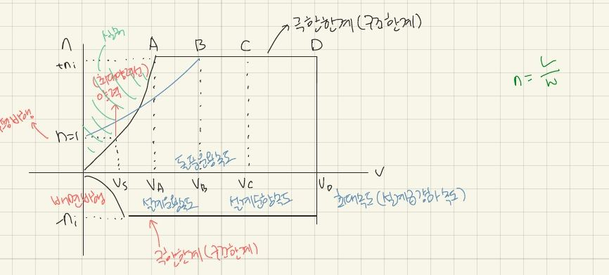
필기: L과 W가 같다(n = 1) → 등속 수평비행.
| 기호 | 의미 |
|---|---|
| VS | 실속속도 (최대양력계수 곡선과 n = 1이 만나는 점) |
| VA | 설계 운용속도 |
| VB | 설계 돌풍 운용속도 |
| VC | 설계 순항속도 |
| VD | 최대속도 (설계 급강하속도) |
| ±n1 경계 | 극한한계 (구조한계). 음의 영역은 배면비행 |
- 날개의 단면적은 특수한 모양이므로 양력이 발생되지 않는 자세에서도 비틀림 모멘트가 생긴다. 그래서 끝으로 갈수록 살짝 비틀어지게 만든다 (비틀림 모멘트를 안 생기게 하려고).
- 무게에 의해 날개는 비틀림을 받는다. 비틀림 모멘트는 비행속도의 제곱에 비례 ⇒ 양력, 속도에 제한을 둠.
- 비행속도 & 양력 ↑ → 공기력 증가 → 하중배수 증가. 즉 하중배수는 비행속도와 양력의 크기를 나타낸다.
- 제한 하중배수는 설계 시 미리 정해진다.
- 설계 제한 하중배수: 실제 비행기를 운용할 때 나타날 수 있는 하중의 최대 한계치 (max load).
- 하중배수는 항공기 무게, 고도, 형태에 따라 달라진다.
기말고사 대비 지도
교수님 공지: 기말고사 범위는 이번 학기에 배운 모든 내용. 새로 배운 10–26장만 보지 말고, 아래 표의 연결된 중간 범위 장을 같이 복습하세요. 각 기말 챕터 안에도 중간 범위와 연결 카드로 바로 가는 링크가 있어요.
기말 챕터 ↔ 중간 챕터
| 기말 범위 | 핵심 | 같이 볼 중간 범위 |
|---|---|---|
| 10. 압력의 등방성과 액주계 | 등방성(스칼라), \(P_A = P_0 + \rho g h\), U자관·시차 액주계 | 8장 압력의 등방성 · 6장 정수압·파스칼 · 1장 절대압·계기압 |
| 11. 압력계 | 아네로이드(절대압)·다이어프램(차압)·벨로우즈·부르동관, 스트레인 게이지, LVDT | 1장 압력 단위·계기압·차압 · 7장 피토관 계기 |
| 12. 점도계 | 모세관·회전식·낙구식·점도컵 | 9장 점성계수 μ·ν, 온도 의존성 |
| 13. 유량 측정 방식 | 차압식·질량식·속도식·면적식 | 7장 베르누이·연속방정식 |
| 14. 곡면에 작용하는 힘과 모멘트 | \(F_H\), \(F_V\), 작용점, 토크 \(T = r \times F\) | 6장 잠긴 평면·곡면 수압력 표 |
| 15. 압력계수와 벤츄리·항공기 유량계 | \(C_p\), 벤츄리 유량계, 부피 유량 vs 질량 유량 | 7장 베르누이·피토관·토리첼리 |
| 16. 운동량·충격량과 질유량 | \(F = \dot m (V_2 - V_1)\), \(Q = AV\), \(\dot m = \rho AV\) | 7장 운동량과 충격량·연속방정식 · 5장 정상유동 |
| 17. 엔진 추력과 FADEC | 터보제트·터보팬 추력식, BPR, FADEC 기능 | 출제 예고 10번(제트엔진 추력) · 7장 운동량 |
| 18. 항공기 성능과 기상 요소 | 기온·밀도·습도·무게와 이착륙 거리 | 2장 밀도·이상기체 · 3장 음속과 온도 |
| 19. 표면장력과 모세관 현상 | 응집력·부착력, \(\sigma = \Delta p d/4\), \(h = 4\sigma\cos\beta/\gamma d\) | 개요의 전체 지도(1. 유체역학 개요) · 2장 비중량 γ |
| 20. 부력과 경심 | 부력, 잠수체·부유체의 안정, 경심 | 6장 아르키메데스·부력과 안정성 |
| 21. 항공기의 안정성 | 정적·동적 안정, 축–운동–조종면, 고익기·저익기, 상반각·후퇴각·킬효과·무게분포 | 부록 V-n 선도 (기말 20장 경심과 비교) |
| 22. 레이놀즈수 | \(Re = \rho VD/\mu\) 유도, 층류 < 2,100, 난류 > 4,000, 동점성계수 | 9장 점성법칙·μ와 ν · 5장 층류·난류·경계층 |
| 23. 프루드수 | \(Fr = V/\sqrt{gL}\), 상류·한계류·사류, 댐, 선박의 경제속도 | 5장 프루드 수(곁가지)·정상유동 · 6장 부력 · 7장 Q = AV |
| 24. 웨버수 | \(We = \rho V^2L/\sigma\), 분무·방울, 연료노즐 | (기말 19장 표면장력과 이어짐) |
| 25. 오일러수와 유동박리 | \(Eu = \Delta p/\rho V^2\), 역압력 구배, 박리점, 오일러 운동 방정식 | 5장 경계층·박리·오일러 방정식 · 7장 베르누이 · 출제 예고 10번 |
| 26. 마하수와 무차원수 정리 | \(Ma = V/a\), 다섯 무차원수 표, 기하학적·운동학적·역학적 상사 | 8장 마하수 0.3 · 3장 음속·체적탄성계수 |
기말 범위에서 교수님이 짚은 것
| 표시 | 내용 | 장 |
|---|---|---|
| ⭐ 의미도 이해 | \(F = \dot m (V_2 - V_1)\): 추력은 질유량 × 속도 변화 | 17 |
| ⭐ 외워 | \(Q = AV\) [m³/s], \(\dot m = \rho AV\) [kg/s] | 16 |
| ⭐ | 터보팬에서 팬을 지나가는 공기가 많은 이유: 속도 변화보다 질량 변화가 추력에 더 큰 영향 | 16·17 |
| ⭐ | 동적 안정이면 무조건 정적 안정. 정적 안정이라고 동적 안정은 아님 | 21 |
| ⭐ 주관식 | Re 공식 유도: 관성력 \(\rho V^2L^2\) ÷ 점성력 \(\mu VL\) = \(\rho VL/\mu\) | 22 |
| 하이라이트 | 다섯 무차원수의 힘의 비와 적용 분야, 상사의 세 조건 | 26 |
| 범위 힌트 | 압력 등방성 식 증명은 안 냄 | 10 |
| 범위 힌트 | 압력계는 “종류가 뭐뭐가 있구나” 수준, 점도계는 “이렇게 측정하는 방법이 있구나” 수준 | 11·12 |
| 범위 힌트 | 곡면 수직력의 작용점 식은 pass | 14 |
| 범위 힌트 | 유량계의 열·코리올리·초음파 측정 원리 부분은 X 표시(넘어감) | 15 |
| 범위 힌트 | 비열비 슬라이드, 댐 그림의 진한 버전, 분무 실험 뒷부분은 X 표시(넘어감) | 22·23·24 |
| 범위 힌트 | 오일러 운동 방정식의 유도 과정과 3차원 식은 pass, 압력계수 계단 그림은 거의 pass | 25 |
중간 범위 다시 보기
중간고사에 실제로 나온 문제(복기 페이지)는 점성, 압축성, 기체 법칙, 베르누이, 연속방정식에 몰려 있었어요. 기말도 전 범위라서, 틀렸던 문항의 장부터 다시 보고 그 장과 연결된 기말 챕터로 넘어가면 겹쳐서 외울 수 있어요.
압력의 등방성과 액주계
8장 압력의 등방성(같은 그림과 유도) · 6장 정수압 \(P = P_0 + \rho g h\), 파스칼 원리 · 1장 절대압·계기압·진공압
압력의 등방성 Isotropy of pressure
- 정지 유체 내 압력은 등방성을 갖는다.
- 정지 유체 내 한 점에 작용하는 압력은 모든 방향 같은 크기로 작용한다.
- 압력을 벡터가 아닌 스칼라로 본다.
- 정지 유체나 비점성 유동일 때 성립한다.
- 점성 유동에서는 한 점의 압력은 방향에 따라 달라진다.
- 압력은 한 방향이 아니라 전 방향으로 작용한다. 압력은 방향이 아닌 크기로 따진다.
- ∴ 한 점으로 모이면 모든 방향 압력은 같다.
- 식 증명은 안 냄.
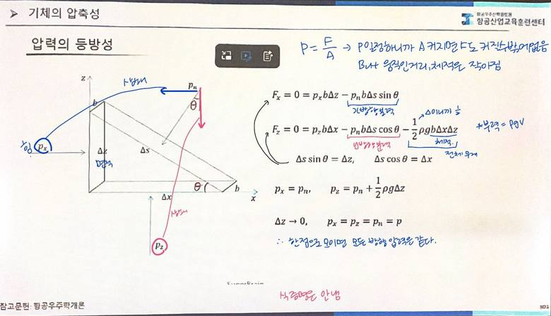
- \(p_x b\Delta z\): 압력 × 면적 = 힘.
- \(p_n b\Delta s \sin\theta\): 경사면에 작용하는 힘의 수평 방향 분력, \(\cos\theta\) 쪽은 수직 방향 분력.
- \(\tfrac12\rho g b\Delta x\Delta z\): 요소의 전체 무게. \(b\Delta x\Delta z\)가 체적이고 삼각형(△)이라서 ½.
- 부력 = \(\rho g V\).
- \(P = F/A\) → P가 일정하니까 A가 커지면 F도 커질 수밖에 없다. 대신 움직인 거리는 작아진다 (파스칼 원리).
액주계 Manometer
액체 기둥의 높이로 압력을 재는 장치. 정수압 식 \(P = P_0 + \rho g h\)를 그대로 쓴다.
- 한쪽 끝에서 출발해 반대쪽 끝까지 관을 따라간다. 내려가면 \(+\rho g h\), 올라가면 \(-\rho g h\).
- 같은 유체로 이어진 같은 높이는 압력이 같다 (그림의 X–X′ 선: \(p_1 = p_2\)).
- 대기에 열린 끝의 압력은 대기압 \(P_0\).
단순 액주계 · U자관 (용기 압력이 대기압보다 낮을 때)
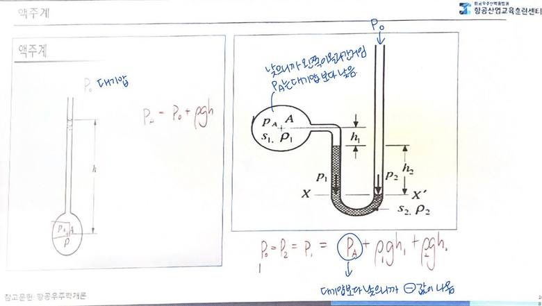
단순 액주계 (위가 대기에 열림):
\[ P_A = P_0 + \rho g h \]U자관, 용기 쪽 액면이 올라간 경우:
\[ P_0 = P_2 = P_1 = P_A + \rho_1 g h_1 + \rho_2 g h_2 \quad\Rightarrow\quad P_A = P_0 - \rho_1 g h_1 - \rho_2 g h_2 \]- \(P_A\)가 낮으니까 왼쪽(용기 쪽) 액면이 올라간 것. \(P_A\)는 대기압보다 낮다.
- 대기압보다 낮으니까 (계기압으로) ⊖ 값이 나온다.
- 그림의 \(s_1, s_2\)는 비중, \(\rho_1, \rho_2\)는 밀도.
U자관 (용기 압력이 대기압보다 높을 때)
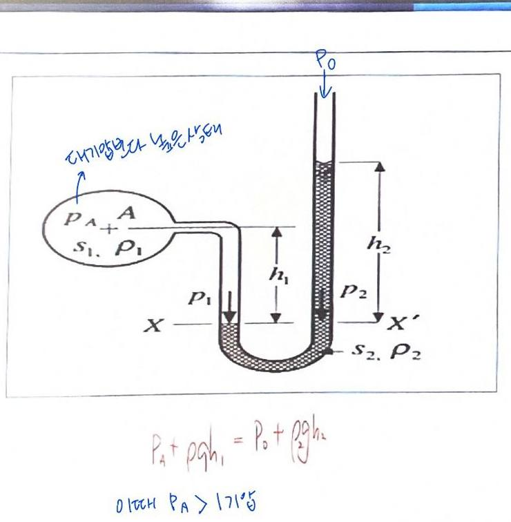
X–X′에서 \(p_1 = p_2\)로 놓은 식. 이때 \(P_A > 1\)기압.
용기 압력이 대기압보다 높은 상태 → 대기 쪽(오른쪽) 액면이 밀려 올라간다.
시차 액주계 Differential manometer
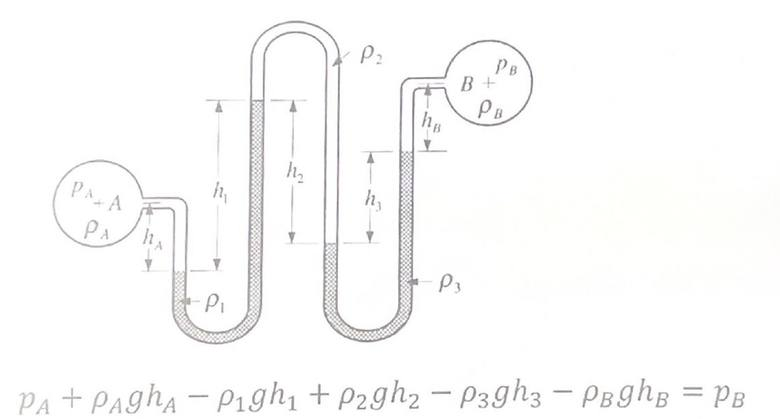
A에서 출발: \(h_A\)만큼 내려감(+) → \(h_1\) 올라감(−) → \(h_2\) 내려감(+) → \(h_3\) 올라감(−) → \(h_B\) 올라감(−) → B 도착.
압력계
- “압력계 종류가 뭐뭐가 있구나~” 정도로.
- 압력계도 PME(정밀측정장비)다. 범위를 조금이라도 벗어났으면 바로 폐기.
압력의 단위 복습
- Torricelli가 실험한 1기압(1 atm)에서 수은(Hg)의 높이.
- 1 atm = 760 mmHg = 29.92 inHg = 14.7 psi
- 압력은 단위 inch²당 lbs(psi: pounds per square inch)로 측정되며, 미터 방식에서는 단위 cm²당 힘(무게)으로 측정한다.
- 힘의 단위는 국제단위로 Newton(N)이 있다. 1 kg의 물체를 1 m/s²의 가속도로 움직일 때 발생하는 힘이다.
- 가속도 법칙 F = ma를 이용하면 1 N = 1 kg·1 m/s²로 표현된다.
- 두 번째로 kgf가 있다. 지구상에서의 힘 또는 무게의 단위로 9.8 N에 해당한다.
- 압력 단위인 Pascal[Pa]은 단위면적당 작용하는 힘 N/m²로 나타낸다. (필기: Pascal = N/m²)
압력 감지부 Sensing elements
| 감지부 | 구조 | 측정 |
|---|---|---|
| 아네로이드 aneroid | 내·외부가 완전히 밀폐되어 있고 내부가 진공으로 되어 있는 밀폐 공함 | 외부 압력을 절대압력으로 측정 |
| 다이어프램 diaphragm | 내부로 통하는 구멍이 있어 내측과 외측에 모두 압력을 받을 수 있음 | 내외측의 압력 차, 즉 차압 측정에 사용 |
| 벨로우즈 bellows | 여러 장의 다이어프램을 겹쳐 놓은 형태 | 다른 차압 공함에 비해 감지 변위가 크고 감도가 좋아, 확대부가 적은 단순한 계기로 제작 가능 |
| 부르동관 Bourdon tube | 기본형은 글자 C 형태, 속이 타원형 단면인 금속 관 | 압력이 가해지면 펴져서 기계적인 변위량이 발생 → 압력 지시. 비교적 압력 측정 범위가 크기 때문에 가장 많이 쓰임 |
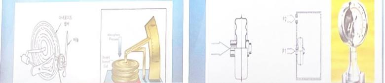
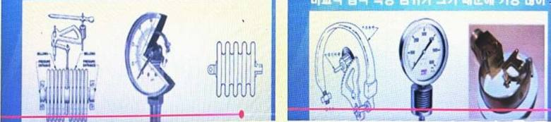
고도계는 밀폐된 아네로이드로 정압(절대압)을 재고, 속도계는 다이어프램 안쪽에 전압, 바깥쪽에 정압을 걸어 그 차(동압)를 잰다. 매니폴드 압력계(절대압, 1장)와 여압 계통 차압계(1장)도 같은 구분이다.
Bourdon 압력계
부르동 게이지(Bourdon gauge)는 타원형 형상을 갖는 튜브를 한쪽은 고정시키고 다른 쪽은 자유롭게 변형할 수 있도록 만들었으며, 탄력성이 있는 금속판으로 만든 중공의 편평한 관을 원호형으로 구부려 끝을 밀폐한 것이다.
부르동 게이지는 탄성식 압력계의 한 종류다. 탄성식 압력계는 수압부에 탄성체를 사용해서, 측정하고자 하는 압력을 가했을 때 가해진 압력에 비례하는 단위 압력당의 변형량을 아는 상태에서, 이에 대응된 변형량만을 측정함으로써 압력을 구하는 방법이다.
- 가장 흔하게 사용되는 압력계. 예: 진공 데시케이터, 가스통의 압력 측정.
- 1852년 프랑스 부르동이 개발, 0.6~7,000 bar의 압력 범위를 측정할 수 있다.
- 정확한 측정을 위해 유체의 종류에 따른 압력계의 측정 범위를 꼭 확인해야 한다.
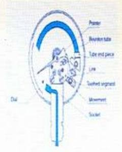
플런저 압력계
널리 사용되는 또 다른 유형의 압력계. 유체 압력에 연결된 플런저, 바이어스(편향) 스프링, 지침으로 이루어진다. 유체의 압력이 상승하면 플런저가 스프링 힘과 반대로 움직이면서, 지침이 연결 기구를 통해 축척의 압력을 지시한다.
따라서 이 압력계는 내구성이 우수하고 경제적이다.
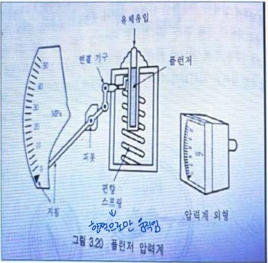
스트레인 게이지 압력 변환기 전기적
- 압력 변환기: 압력 → 전기 신호.
- 전기적 스트레인 게이지를 함유한 격판을 장착한 원통형 하우징으로 이루어졌다.
- 격막이 휘어져 스트레인 게이지의 전기적 저항을 변화시킨다.
- 이 저항의 변화를 휘트스톤 브리지(Wheatstone bridge)라고 부르는 전기장치로 측정한다.
- 또한 온도변화에 따른 스트레인 게이지 저항을 보상하는 전기회로를 함유하고 있다. (필기: 온도 변화도 보상해 줌)
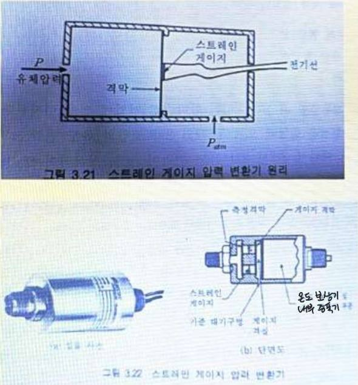
LVDT 압력 변환기 Linear Variable Differential Transformer
LVDT, 선형 가변 변위 변환기는 변동하는 위치에 대한 선형 변환기(linear transducer), 위치센서.
- 선형 변환기는 측정 대상 파라미터(예: 단순 신호 처리의 경우 힘)와 관련 있는 전압 출력 특성을 제공하는 장치다.
- 변환기 위치 센서 장치들은 전자파 장해에 민감하다. 전기 저항은 연결 케이블을 짧게 하면 더 줄일 수 있다.
- 변환기는 전원 공급과 출력 신호 전달을 위해 3개 혹은 4개의 연결선이 필요하다.
- 변환기는 전압 출력 장치, 송신기는 전류 출력 장치라서 서로 다르다. 송신기/선형 장치들은 케이블 길이·전송 거리에 따른 신호 감소가 덜하다.
- LVDT 위치 변환 원리: 전자기식(electromagnetic), 정전기식(electrostatic), 자전기식(magnetoelectric).
한눈에 보기
| 구분 | 종류 | 키워드 |
|---|---|---|
| 기계식 (탄성식) | 아네로이드 | 밀폐, 내부 진공, 절대압 |
| 다이어프램 | 구멍, 안팎 압력, 차압 | |
| 벨로우즈 | 다이어프램 여러 장, 변위·감도 큼 | |
| 부르동관 | C자 타원 단면 관, 측정 범위 큼, 가장 많이 사용 | |
| 플런저 | 편향 스프링, 내구성·경제성 | |
| 전기식 (변환기) | 스트레인 게이지 | 격막 변형 → 저항 변화, 휘트스톤 브리지, 온도 보상 |
| LVDT | 위치(변위) 센서, 전압 출력 |
점도계
“이렇게 측정하는 방법이 있구나~”만 알면 됨.
점도 측정법의 종류
점도 측정은 모세관 점도계법, 회전식 점도계법, 낙구식 점도계법, 점도컵법 등으로 나뉜다. 시료의 점도 범위와 필요한 정밀도에 따라 선택한다.
| 방식 | 무엇을 재나 |
|---|---|
| 모세관 | 흐르는 시간 |
| 회전식 | 회전 저항 |
| 낙구식 | 구의 낙하 속도 |
| 점도컵 | 컵에서 흘러나오는 유체의 흐름 |
모세관 점도계법
| 항목 | 내용 |
|---|---|
| 적용 대상 | 비교적 낮은 점도의 액체 |
| 주요 기구 | 개량 오스트발트 점도계, 항온 물중탕, 측시용 시계, 온도계 |
| 측정 조건 | 층류 흐름, 수평 유지, 온도 일정 |
균일한 안지름의 모세관을 사용하는 만큼 높은 정밀도를 기대할 수 있고, 상대적으로 적은 시료로도 측정할 수 있다. 다만 온도 변화에 민감하므로 항온 조건을 엄격히 유지해야 하며, 점도계의 치수에 맞춰 표준액으로 보정하는 과정이 중요하다.
회전식 점도계법
| 항목 | 내용 |
|---|---|
| 작동 요소 | 원반형 또는 원통형 회전자 |
| 측정 원리 | 일정한 회전 속도에서 발생하는 회전 저항 |
| 표시 방식 | 스프링 변위 또는 회전 저항의 수치 표시 |
| 측정 결과 | 동적 점도 |
| 주의점 | 회전자 크기와 점도 범위의 대응 |
넓은 점도 범위를 다루려면 다양한 회전자를 갖춰야 하고, 서로 다른 회전자로 측정값을 연결할 때 연속성이 떨어질 수 있다. 특히 저점도에서는 충분한 저항을 확보하기 어렵고, 고점도에서는 회전 운동에 따른 온도 상승이 발생할 수 있으므로 시료 특성에 맞는 회전자를 선택하는 것이 중요하다.
- 동적 점도: 정지된 액체의 점도를 측정하는 것 (액체는 그대로 두고 회전자를 돌린다).
- 사용이 어렵다~
‘동적 점도(dynamic viscosity)’는 9장의 역학적 점성계수 μ(Pa·s)를 말한다. ‘움직이는 유체의 점도’라는 뜻이 아니라 동점성계수 ν(= μ/ρ)와 구분하는 이름이다. 모세관식은 흐르는 시간으로 주로 ν를, 회전식은 저항(토크)으로 μ를 구한다.
기타 측정 방식
| 방식 | 측정 원리 | 주로 고려할 점 |
|---|---|---|
| 낙구식 | 구가 액체를 통과하는 속도 | 구의 이동 거리와 낙하 시간 |
| 점도컵법 | 컵에서 흘러나오는 유체의 흐름 | 국제 표준 ISO 3105 |
| 회전구식 | 회전하는 구의 움직임 | 국제 표준 DIN 53015 |
| 기포식 | 기포의 이동 | 모세관 점도계법의 시험 유형 |
- 낙구식은 구의 낙하 속도를 통해 점도를 산정하지만, 측정 환경과 구의 조건이 결과에 영향을 줄 수 있다. (필기: 관 안에 구를 넣고 구가 떨어지는 속도를 측정하는 것)
- 점도컵법은 간단한 현장 평가에 유리한 반면, 정밀한 연구 목적이라면 측정 조건과 표준 준수 여부를 함께 살펴보는 편이 좋다.
유량 측정 방식
7장 베르누이 방정식·연속방정식(좁아지면 빨라지고 압력이 낮아진다)·토리첼리의 오리피스 · 이어지는 기말 범위: 15장 벤츄리·항공기 유량계, 16장 체적유량·질유량
측정 원리별 유량계
유체 유량은 차압식, 속도식, 질량식, 면적식 등으로 측정한다. 오리피스는 압력 차이를, 초음파는 유속을, 코리올리스는 관성 효과를, 로터미터는 부자의 위치를 이용한다. 유체의 상태와 유량 범위, 요구 정확도, 압력·온도, 설치·유지관리 조건을 함께 고려해 유량계를 선택한다.
| 측정 원리 | 대표 유량계 | 측정 대상 | 주요 특징 | 주의할 점 |
|---|---|---|---|---|
| 차압식 | 오리피스, 벤츄리관, 노즐 | 액체·기체·증기 | 단순한 구조, 폭넓은 배관 규격 | 영구 압력 손실, 유량 변동폭 영향 |
| 질량식 | 코리올리스 | 액체·기체 | 질량유량·밀도·온도 동시 측정 | 상대적으로 높은 가격, 설치 제약 |
| 속도식 | 초음파, 전자기, 터빈 | 액체 중심 | 유속을 바탕으로 체적 유량 산출 | 전도성 여부, 기포·부유물, 유속 조건 |
| 면적식 | 로터미터 | 액체·기체 | 별도 전원 없이 눈금 확인 가능 | 설치 방향 제약, 유체 성질 영향 |
- 유량 측정계 = flow meter.
- 질량식(코리올리스)은 가격·설치 제약 때문에 잘 안 씀.
- 로터미터(면적식): 이걸 항공기에서 제일 많이 씀. 현장에서 많이 쓴다.
- 부자: 부자의 위치가 압력(밀어 올리는 힘)과 중력 사이 평형이 되는 높이에 있어야 한다.
방식별 설명
차압식 유량계 (오리피스)
- 배관에 구멍이 뚫린 판을 설치하면 유체가 좁은 부분을 지나며 유속이 빨라지고 압력이 낮아진다.
- 오리피스 앞뒤의 압력 차이를 측정하고, 베르누이 방정식을 적용해 유량으로 환산한다. 가스는 온도와 압력 보정을 거쳐 질량유량으로 계산할 수 있다.
- 장점: 구조가 단순하고 움직이는 센서 부품이 적어 유지관리가 편리.
- 단점: 영구적인 압력 손실을 만들고, 이물질이나 슬러지가 구멍에 쌓일 수 있어 깨끗한 유체에 더 적합.
질량식 유량계 (코리올리스)
- 측정관을 일정한 고유진동수로 진동시킨 뒤, 유체가 흐를 때 발생하는 변형과 위상차를 감지한다.
- 부피를 재고 밀도를 곱하는 간접 방식이 아니라 질량 흐름을 직접 측정하며, 일부 모델은 밀도와 온도도 함께 측정한다.
- 온도와 압력 변화에 관계없이 실제 물질의 양을 관리해야 하는 원료 배합, 충전, 반응 공정에 활용된다.
- 정확도가 높지만 가격이 높고, 대구경 배관이나 특정 설치 조건에서는 제약이 생길 수 있다.
속도식 유량계 (초음파, 전자기, 터빈)
- 초음파 유량계: 유체를 통과하는 초음파의 전파 시간 차이를 이용한다. 외부 부착형은 배관을 절단하지 않을 수 있지만, 배관 벽의 간섭이나 기포·부유물의 영향을 받을 수 있다.
- 전자기 유량계: 전도성 유체가 자기장을 통과할 때 생기는 전압을 측정한다. 관 내부에 로터나 장애물이 없어 흐름을 방해하지 않으며, 물·폐수·슬러리·전도성 화학물질 등에 적용된다.
- 터빈 유량계: 유체의 흐름으로 회전자를 돌려 기계적 움직임을 전기 신호로 바꾼다. 유속을 직접 측정하지만, 회전부를 사용하는 만큼 선정 조건과 유지관리 측면을 함께 살펴야 한다.
면적식 유량계 (로터미터)
- 테이퍼관 안에서 유체가 아래에서 위로 흐르면 부자에 압력 차이와 부력, 점성 항력이 작용한다. 부자가 중력과 평형을 이루는 높이는 유량과 비례하므로, 눈금을 통해 유량을 읽는다.
- 구조가 간단하고 별도 전원이 필요 없는 모델이 많아 국부적인 유량 확인에 유리하다.
- 설치 방향에 제약이 있고 유체의 성질에 영향을 받을 수 있어, 정밀한 총량 관리보다는 현장 확인용으로 검토하는 편이 좋다.
유량계 선택 시 고려 사항
| 항목 | 확인할 것 |
|---|---|
| 유체 종류 | 액체인지 기체인지, 전도성 유체인지, 슬러리나 기포가 포함되는지 |
| 운전 조건 | 정상 유량뿐 아니라 최소·최대 유속과 예상 압력·온도 범위 |
| 필요 정확도 | 공정 관리 수준인지, 상거래용 계량인지. 오리피스는 보통 ±2% 수준으로 소개되며 정밀 계량에는 다른 방식이 권장될 수 있다 |
| 압력 손실 | 오리피스 같은 차압식은 영구적인 압력 손실이 발생하므로, 압력 여유가 부족한 배관에서는 설계 전 확인 |
| 유량 변동폭 | 오리피스의 측정비가 10대 1이라면 최대 유량의 5% 이하까지 떨어지는 구간에서는 적합하지 않을 수 있다 |
| 설치 환경 | 배관이 항상 가득 차는지, 진동이 심한지, 직선 구간 확보가 가능한지 |
| 유지관리 | 움직이는 부품의 유무, 청소 난이도, 교정 주기와 비용 |
곡면에 작용하는 힘과 모멘트
6장 ‘정지유체의 압력 분포와 계산’ 표: 잠긴 평면 \(F = \rho g \bar h A\), 곡면 수평력 \(F_H = P_c A\), 수직력 \(F_V = \rho g V\). 중간고사 때 “2학기에 다룬다”던 부분이 여기다. · 모멘트는 20장 부력과 경심, 21장 항공기의 안정성에서 다시 쓰인다.
유체 내 곡면에 작용하는 힘
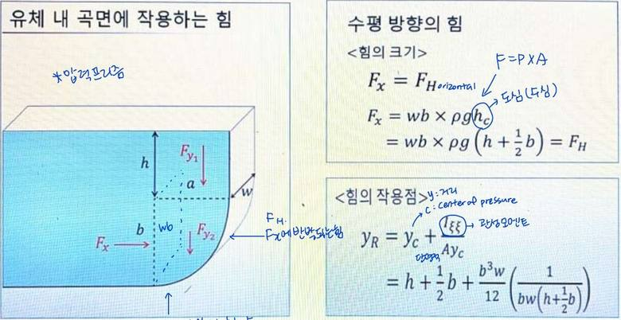
수심 h 아래에 높이 b, 폭 w인 곡면이 있다. 곡면에 작용하는 힘은 수평 성분 \(F_H\)와 수직 성분 \(F_V\)로 나누어 구한다.
수평 방향의 힘
곡면을 옆에서 본 투영 면적 \(wb\)에, 그 투영면 도심 깊이 \(h_c = h + \tfrac12 b\)에서의 압력 \(\rho g h_c\)를 곱한 것.
\(y_c\): 도심까지의 거리, \(I_{\xi\xi}\): 단면 2차 모멘트(직사각형 \(wb^3/12\)), A: 단면적.
- *압력 프리즘 (깊이에 따라 커지는 삼각형 압력 분포).
- \(F = P \times A\).
- \(h_c\) → 도심(중심).
- y: 거리, c: center of pressure, \(I\) → 관성모멘트, A: 단면적.
- \(F_H\): \(F_x\)에 반발되는 힘 / \(F_V\): \(F_y\)에 반발되는 힘.
작용점 \(y_R\)(압력 중심)은 항상 도심 \(y_c\)보다 아래에 있다. 깊을수록 압력이 커서 힘이 아래쪽에 더 몰리기 때문이다. 필기의 c는 식에서 도심(centroid)을 뜻하고, 압력 중심(center of pressure)은 \(y_R\) 쪽이다.
수직 방향의 힘
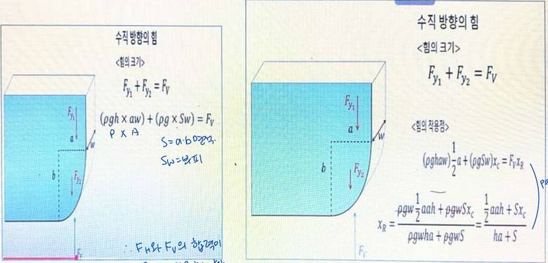
곡면 위에 있는 유체의 무게. \(F_{y_1}\): 곡면 위 직육면체 부분(압력 \(\rho g h\) × 면적 \(aw\)), \(F_{y_2}\): 곡면 바로 위 곡선 부분(단면적 S × 폭 w = 부피).
- \(\rho g h \times aw\) = P × A.
- S = 면적, \(Sw\) = 부피.
- ∴ \(F_H\)와 \(F_V\)의 합력이 곡면에 작용하는 힘.
- 수직력의 작용점 식은 pass.
| 성분 | 구하는 법 |
|---|---|
| 수평력 \(F_H\) | 곡면의 수직 투영면에 작용하는 힘 = 투영 면적 × 도심 깊이의 압력 |
| 수직력 \(F_V\) | 곡면 위에 있는 유체의 무게 = \(\rho g V\) |
| 합력 | \(F = \sqrt{F_H^2 + F_V^2}\) |
모멘트 Moment · Torque
모멘트(moment)는 기준점에서 어떤 거리만큼 떨어진 곳에서의 물리량이 이 기준점에 미치는 작용, 효과 또는 영향.
\[ \text{물리량의 모멘트} = \text{기준점에서의 거리} \times \text{“물리량”} \]물리량이 무엇이냐에 따라 모멘트는 여러 가지 다른 작용(영향)을 하는 모멘트가 될 수 있다.
힘의 모멘트(크기)는 기준점에서 힘의 작용선까지의 수직거리 × 힘의 크기로 정의한다.
- 단위: SI 단위로 N·m, 공학단위로 kgf·m. 1 kgf·m = 9.8 N·m.
- 방향: 오른손 법칙. 그림의 경우 +z 방향이므로 \(\mathbf{T} = |\mathbf{r}||\mathbf{F}|\sin\theta\,\mathbf{k}\).
- 회전문 손잡이, 볼트: 힘이 클수록, 기준점과 힘의 작용선 사이 거리가 클수록 토크가 크다.
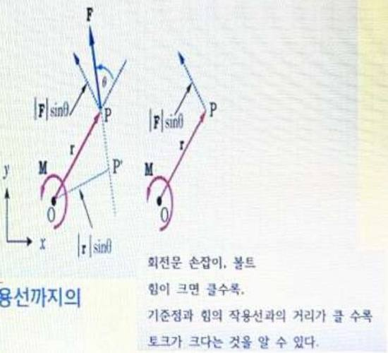
압력 중심을 구하는 식(\(F \times y_R\) = 압력 분포의 모멘트 합)도, 20장에서 배가 기울었을 때 생기는 복원 모멘트도, 21장 항공기의 롤링·피칭·요잉 모멘트도 모두 ‘거리 × 힘’이다. 항공기의 운동도 무게중심에 대한 모멘트로 다룬다.
압력계수와 벤츄리·항공기 유량계
7장 베르누이 방정식(정압 + 동압 = 전압), 피토트관 필기의 \(C_p\) 식, 연속방정식 \(A_1v_1 = A_2v_2\) · 5장 전압·정압·동압 · 앞 장: 13장 차압식 유량계 · 이어지는 내용: 25장 오일러수와 유동박리(압력계수가 박리에 영향)
압력계수 Pressure coefficient, Cp
정압과 동압의 비: 정압(ΔP) / 동압(½ρV²)
\[ C_p = \frac{P - P_0}{\tfrac12 \rho V_0^2} = 1 - \left(\frac{V}{V_0}\right)^2 \]- \(C_p\): 압력계수
- P: 물체 주위 정압
- \(P_0\): 물체의 영향을 받지 않는 흐름의 상류 쪽 압력
- \(V_0\): 물체의 영향을 받지 않는 흐름의 상류 쪽 속도
- ρ: 공기 밀도
- 개념 1) 비압축성 유체는 정체점에서의 속도가 0 (V = 0) → 따라서 \(C_p = 1\)
- 개념 2) 물체에서 멀리 떨어진 상류의 속도는 \(V = V_0\) → 따라서 \(C_p = 0\)
압력계수도 무차원수 (압력 ÷ 압력이라 단위가 없다).
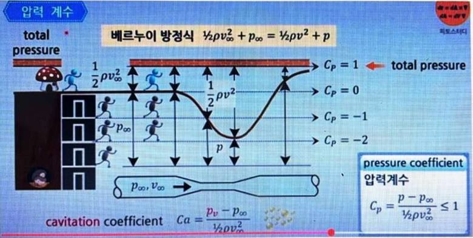
| \(C_p\) | 그 지점의 속도 | 의미 |
|---|---|---|
| 1 (최댓값) | V = 0 | 정체점. 동압이 전부 압력으로 바뀜 (전압) |
| 0 | \(V = V_0\) | 자유흐름과 같은 압력 |
| 음수 | \(V > V_0\) | 자유흐름보다 낮은 압력 (날개 윗면, 벤츄리 목) |
액체에서 압력이 증기압 \(p_v\)까지 떨어지면 기포가 생기는 캐비테이션(공동 현상)이 일어난다. 그림의 Ca는 그 한계를 같은 방식으로 무차원화한 값이다.
벤츄리 유량계 Venturi flowmeter
파이프 단면이 축소되었다가 다시 확대되는 형태로 제작된 유량계. 두 지점에서의 액주의 높이차를 측정하여 유량을 쉽게 구한다 (손실은 무시). 1797년 이탈리아의 J.B. Venturi가 제안한 이론에 기초하여 1898년 C. Herschel이 유량계로 개발하였다.
베르누이:
\[ \tfrac12\rho v_1^2 + p_1 = \tfrac12\rho v_2^2 + p_2 \]부피 유량 (연속방정식):
\[ Q = A_1 v_1 = A_2 v_2 \]압력차 (액주 높이차):
\[ p_1 - p_2 = \rho g h \]정리하면:
\[ Q = A_1 v_1 = A_1\left[\frac{2gh}{(A_1/A_2)^2 - 1}\right]^{1/2} \]슬라이드의 마지막 식 분모는 \((A_2/A_1)^2 - 1\)로 적혀 있는데, 목이 좁아 \(A_2 < A_1\)이면 음수가 되어 계산이 안 된다. \(v_2 = v_1 A_1/A_2\)를 베르누이에 넣으면 \(\tfrac12 v_1^2\left[(A_1/A_2)^2 - 1\right] = gh\)이므로 \((A_1/A_2)^2 - 1\)이 맞다.
벤츄리 유량계 = 연속방정식(질량 보존) + 베르누이(에너지 보존)를 동시에 쓰는 대표 예. 좁은 목에서 속도 ↑, 정압 ↓ → 그 압력 차로 유량을 계산한다. 13장의 차압식 유량계(오리피스·벤츄리관·노즐)가 모두 이 원리다.
유량계 항공기에서의 유량계
- 항공기 유량계는 연료·윤활유·작동유의 흐름량을 측정해 연료 소모량 감시와 계통 제어에 활용하는 장치다.
- 측정 방식은 부피 유량계와 질량 유량계로 나뉘며, 항공기에서는 내구성과 정확도를 고려해 차압식과 베인식이 주로 사용된다.
- 일반적으로 유량계는 기체, 액체의 질량 또는 부피 유량을 측정하는 기구다. 유량 센서, 질량 유량계, 질량 흐름 컨트롤러, 유량 조절기 등 다양한 용어를 쓴다.
- 유량계의 목적은 기본적으로 공정에서 두 점 사이의 가스 또는 액체의 흐름을 측정하는 것. 유량계를 밸브와 결합하면 유량 제어기가 되어, 측정뿐 아니라 유량을 변경하여 제어할 수 있다.
체적(부피) 유량 측정 vs 질량 유량 측정
| 구분 | 체적(부피) 유량 | 질량 유량 |
|---|---|---|
| 단위 | ml/min, m³/h 같은 체적 단위 | kg/h, g/min 같은 질량 단위 |
| 온도·압력 영향 | 특히 가스의 경우 온도와 압력에 따라 유량값이 달라진다 | 질량 흐름을 측정할 때에는 온도와 압력에도 유량값이 변하지 않는다 |
가스는 압축이 가능하기 때문에, 질량 흐름을 표준화된 부피(예: mls/min, m³n/h)로 표현하는 것이 더 일반적이기도 하다. 용도에 맞는 질량 유량계 또는 체적 유량계를 선택한다.
- 우리(항공기)는 질량 유량을 쓴다~
- 이 두 가지 외의 측정 유형(열 측정 원리, 코리올리스 측정 원리, 초음파 유량 측정)과 그 아래 문단은 X 표시 (넘어감).
항공기 내 주요 용도와 중요성
| 용도 | 내용 |
|---|---|
| 연료 소모량 감시 | 엔진으로 공급되는 연료의 흐름을 측정해 잔여 연료 예측과 비행 계획 평가에 활용 |
| 연료 공급 제어 | 특정 운용 조건에서 유량값을 바탕으로 연료 공급을 조절 |
| 계통 이상 탐지 | 정상 범위를 벗어난 유량 변화는 밸브 오작동, 오염, 막힘 같은 문제를 찾아내는 단서 |
| 잔여량 산정 보조 | 항공기 액량 계기는 연료·윤활유·작동유의 양을 부피나 무게로 표시하며, 고고도 비행에서는 온도와 압력 영향을 받는 부피보다 무게 단위가 유리하다 |
연료는 온도가 오르면 팽창해 같은 무게라도 부피가 늘어난다. 엔진이 내는 에너지는 연료의 질량에 비례하므로, 고도·온도에 따라 값이 흔들리는 부피 대신 질량(lb/h, kg/h)으로 연료 유량과 잔량을 본다. 16장의 \(\dot m = \rho AV\)가 바로 이 질유량이다.
운동량·충격량과 질유량
7장 ‘운동량과 충격량’(\(F\Delta t = m(V_2 - V_1)\)), 연속방정식 \(\rho_1A_1V_1 = \rho_2A_2V_2\) · 5장 정상유동의 정의, 질량 보존 · 개요 전체 지도의 ‘이동유체의 힘 → 운동량, 충격량’
운동량 보존의 법칙 1차원 충돌
두 힘은 작용·반작용이라 합이 0 → 전체 운동량은 변하지 않는다. (슬라이드: 이 식을 실험으로 확인하는 것이 간단하지 않음. 필기: 괄호 안이 운동량의 변화량.)
운동량과 충격량
운동량
\[ \vec p = m\vec V\ \ [\text{kg·m/s}] \qquad \Delta\vec p = \vec p_2 - \vec p_1 \]충격량
\[ \vec I = \int \vec F\,dt\ \ [\text{N·s}] = \vec F_{avg} \times \Delta t \]평균힘
\[ m\vec V_2 - m\vec V_1 = \vec F_{avg} \times \Delta t \quad\Rightarrow\quad \vec F_{avg} = \frac{m}{\Delta t}\left(\vec V_2 - \vec V_1\right) \]- F–t 그래프의 곡선 아래 면적 = 충격량. \(F_{avg}\)는 그 면적과 같은 크기의 직사각형(파란색 영역) 높이.
- 운동량 변화량은 일정 → F ↑ 하면 시간 ↓ (반대로 시간을 늘리면 힘이 줄어든다).
유체의 운동량과 충격량
\(\dot m = m/\Delta t\): 질유량. 시간당 얼마만큼의 질량이 지나갔나.
- 들어간 것과 나온 것의 질유량이 같다? → 관 안에는 밀도 변화 X. 정상유동이다.
유체가 관이나 엔진을 지나며 속도가 \(V_1 \to V_2\)로 바뀌면, 그 유체에 작용한 힘은 \(F = \dot m (V_2 - V_1)\). 유체가 받은 힘의 반작용이 물체(노즐, 엔진)가 받는 힘이다. → 17장 엔진 추력으로 바로 이어진다.
질유량과 체적유량 ⭐ 외워
체적유량 (volumetric flow rate): 1초에 몇 m³ 흐르는가
\[ Q = AV\ \ [\text{m}^3/\text{s}] \]질유량 (mass flow rate): 1초에 몇 kg 흐르는가
\[ \dot m = \rho AV\ \ [\text{kg/s}] \]- \(ds = V\,dt\) → \(ds/dt = V\). dt 동안 지나간 부피 = \(A\,ds\).
- Q에 밀도만 곱하면 질량이 된다 (\(\dot m = \rho Q\)).
- 무게(질량)로 써야 변화가 없다 (부피는 온도·압력에 따라 변하니까).
질량 보존의 법칙 검사체적
검사체적(control volume)에서 질량 변화율:
\[ \frac{dm}{dt} = \dot m_{in} - \dot m_{out} \]정상상태(Steady Flow)일 경우:
\[ \frac{dm}{dt} = 0 \quad\Rightarrow\quad \dot m_{in} = \dot m_{out} \]- 검사체적 안에 많이 들어오고 적게 나가면 밀도가 증가하고, 반대면 밀도가 감소한다.
- 연속의 방정식하고 연결된다.
- 즉 검사체적 안에 밀도가 일정하다, 질량 변화가 없다면 그것이 바로 Steady Flow가 된다. (필기: 정상흐름이 된다~)
터보팬 엔진에서 팬을 지나가는 공기가 많은 이유?
속도 변화보다 질량 변화가 추력에 더 큰 영향을 준다. (\(F = \dot m \Delta V\)에서 \(\dot m\)을 키우는 쪽)
- 슬라이드의 “반대면 밀도증가 한다”는 오타. 적게 들어오고 많이 나가면 밀도는 감소한다.
- \(\dot m_{in} = \dot m_{out}\)에 밀도 일정(비압축성)을 더하면 중간 범위의 연속방정식 \(A_1V_1 = A_2V_2\), 즉 \(Q_{in} = Q_{out}\)이 된다.
엔진 추력과 FADEC
출제 예고 10번(제트엔진 추력은 유체역학 응용 사례, 바이패스 공기가 추력의 대부분) · 중간고사 23번 · 7장 운동량과 충격량 · 앞 장: 16장 \(F = \dot m (V_2 - V_1)\)
가스터빈 기관 추력 ⭐ 의미도 이해
추력 = 1초에 지나가는 공기 질량 × 엔진이 공기를 가속시킨 속도 차. 공기를 뒤로 밀어낸 반작용으로 앞으로 가는 힘을 얻는다.
터보제트 기관의 추력
압력 추력 항:
\[ \begin{aligned} F_{px} &= P_a(A_m - A_j) - P_a(A_m - A_a) \\ &\quad + P_jA_j - P_aA_a \\ &= A_j(P_j - P_a) \end{aligned} \]가정: \(P_j = P_a\), \(\dot m_f \ll \dot m_a\)
\[ \boxed{F_n = \dot m_a(V_j - V_a)} \]| 기호 | 뜻 |
|---|---|
| \(\dot m_a\), \(V_a\), \(P_a\) | 흡입 공기 질유량, 비행 속도(흡입 속도), 대기압 |
| \(\dot m_f\) | 연료 질유량 |
| \(V_j\), \(P_j\), \(A_j\) | 배기(jet) 속도, 배기 압력, 배기 노즐 면적 |
| \(F_n\) | 진추력 (net thrust) |
- \(A_j(P_j - P_a)\): \(F = A \cdot P\), 압력 차가 면적에 작용해 생기는 힘.
- \(\dot m_f \ll \dot m_a\): 공기 무게와 비교한 연료 무게는 매우 작다.
필기에는 \(P_j = P_a\) 옆에 “압축기 압력은 같다”로 적혀 있는데, 이 식은 배기 노즐 출구 압력 \(P_j\)가 대기압 \(P_a\)와 같다(노즐에서 완전히 팽창했다)는 가정이다. 그러면 압력 추력 항 \(A_j(P_j - P_a)\)가 0이 되어 운동량 항만 남는다.
터보팬 기관의 추력
1차 공기(코어, primary):
\[ F_{np} = \dot m_{pa}(V_p - V_a) + \dot m_f V_p \]2차 공기(바이패스, secondary):
\[ F_{ns} = \dot m_{sa}(V_s - V_a) \]합:
\[ F_n = \dot m_{pa}(V_p - V_a) + \dot m_f V_p + \dot m_{sa}(V_s - V_a) \]\(\dot m_f \ll \dot m_a\)이면
\[ F_n = \dot m_{pa}(V_p - V_a) + \dot m_{sa}(V_s - V_a) \]바이패스비:
\[ BPR(\alpha) = \frac{\dot m_{sa}}{\dot m_{pa}} \]BPR이 크다 = 코어보다 팬(바이패스)을 지나는 공기가 훨씬 많다. 같은 추력이라면 적은 공기를 크게 가속하는 것보다 많은 공기를 조금 가속하는 쪽이 연료 효율이 좋고 소음이 작다. 출제 예고 10번에서 교수님이 말한 “바이패스 공기가 추력의 80~90%”가 \(\dot m_{sa}(V_s - V_a)\) 항이다.
FADEC Full Authority Digital Engine Control
직역하면 전자동 디지털 엔진 제어. 간단히 요약하면 비행기 엔진의 두뇌에 해당하는 전자 제어 장치로, 자동차의 ECU와 흡사하다. 다수의 센서가 읽어 들이는 값으로 엔진의 현재 상태, 외부 상태, 조종사가 요구하는 조건을 조합하여 최적의 비행 상태로 만들어 준다.
슬라이드 왼쪽 문단은 화면에 일부 가려져 있어 보이는 부분만 정리: 조종사의 무리한 조작 문제나 엔진의 서징, 초크 현상을 FADEC이 막아 준다는 내용.
- 조종석 지시계로 엔진 데이터 전송, 엔진 현재 상태 모니터링
- 엔진에 대한 유지 보수 기록을 디지털로 기록하고 필요 시 결함 기록
- 엔진의 디지털 결함 제거
- 엔진에 들어가는 연료를 제한하여 N1 및 N2 압축기가 회전 제한 내에서 유지되도록 함으로써 과속 상황을 방지
- 항공기 지상 주행 중 엔진 매개변수를 제어하고, 엔진이 시동 EGT(배기 가스 온도 제한)를 초과하지 않도록 방지
- 압축기 공기 흐름을 제어하여 서지 발생 시 엔진 정지 방지
- 터빈 간극을 한도 내로 유지하여 안전한 작동 보장
(6번) 압축기 고정자가 아닌 회전자에서 실속이 발생한다.
항공기 성능과 기상 요소
2장 이상기체 상태방정식 \(P = \rho RT\)(온도 ↑ → 밀도 ↓), 밀도·비중량 · 3장 음속은 온도만의 함수 · 7장 동압 \(\tfrac12\rho V^2\)(밀도가 줄면 같은 속도에서 양력도 준다) · 16장 \(\dot m = \rho AV\)(밀도가 줄면 엔진 질유량도 준다)
성능에 영향을 주는 요소
항공기 성능에 영향을 주는 요소는 기온, 밀도, 바람, 습도, 무게, 활주로 조건 등이다. 항공기는 속도가 빠르고 항속거리가 매우 넓기 때문에 지역에 따라 미치는 영향도 다양하다.
- 성능은 무게와 균형뿐 아니라 공기의 밀도, 습도, 바람, 활주로 표면 상태와 경사도 등에 따라 영향을 받는데, 그중에서도 공기의 밀도와 풍속 그리고 기온에 크게 관계된다.
- 기온은 밀도에 반비례하므로 결국 바람과 기온이 항공기의 성능을 지배하는 것이 된다.
- 이륙을 위한 활주거리는 밀도 변화와 추력 변화의 양쪽 영향을 받는다.
기온 ↑ (또는 고도 ↑, 습도 ↑) → 공기 밀도 ↓ → 엔진 출력(추력) ↓ + 양력 ↓ → 이·착륙 거리 ↑, 기동성 ↓
필기: 밀도 ↓ → L ↓
기온과 밀도
- 착륙 시의 활주거리에 대한 기온의 영향은 적고, 오히려 지면 마찰의 영향이 크다.
- 기온이 표준치보다 높을 때에는 유상 적재량을 감소시키고, 기온이 낮을 때에는 적재량을 증가시키는 일이 가끔 있다.
- 제트 여객기에서는 이·착륙 성능을 높이기 위해 여러 가지로 모색되고 있는데, 일반적으로 기온의 영향이 크며 기온이 높을수록 영향도가 크다.
- 고도가 상승하면 온도, 압력, 밀도가 같이 떨어진다. 밀도가 떨어지는 것은 공기가 희박해지는 것을 의미하며, 결과적으로 엔진 출력과 공기역학적인 양력도 감소한다.
- 그러므로 고지대에서는 이·착륙 거리가 길어지고, 항공기의 기동성도 떨어진다.
비행기가 화씨 68도(섭씨 20 ℃)에서 6,500 피트(1,981 m) 길이의 활주로를 필요로 한다면, 104도(40 ℃)에서는 8,200 피트(2,500 m) 길이의 활주로가 있어야 이륙이 가능하다.
습도
- 습도가 높으면 공기 밀도가 낮아진다. 단위 부피당 공기 입자가 있어야 할 곳에 습기 입자가 채워짐으로써 공기 입자의 밀도가 줄어드는 것이다.
- 습도가 높으면 밀도가 낮은 것보다는 정도가 덜하지만, 마찬가지로 엔진 성능, 기동성, 착륙 성능이 떨어진다. 이륙 거리도 길어진다.
비 오면 추력이 떨어진다. Why? 공기가 들어가는 양을 물방울이 막아 버린다.
수증기(분자량 18)는 건조 공기(평균 분자량 약 29)보다 가볍다. 같은 온도·압력이면 같은 부피 속 분자 수가 같으므로(아보가드로의 법칙, 3장), 수증기가 섞일수록 공기는 가벼워져 밀도가 낮아진다.
무게와 착빙
- 무게가 많으면 증속이 늦게 되고, 더욱 많은 양력이 필요하게 되어 기체의 기동 시에 실속(항공기가 양력을 만들어 내지 못하는 상황) 속도가 많아지게 된다.
- 즉 이·착륙 속도가 많아지며 길이도 길어지고, 기동 시 항공기에 하중도 많이 부과하게 되어 전반적 성능이 감소한다. 이륙 거리도 길어진다.
- 기상 변화는 공기의 밀도를 변화시킨다. 공기의 밀도는 온도, 압력, 습도에 의해 변화되기 때문이다.
- 날개 표면에 착빙이 형성되면 비행기 무게가 증가하고, 특히 날개 앞전(Leading Edge)에 착빙이 형성되면 공기 흐름을 방해할 뿐 아니라 날개 익형의 모양을 바꾸어 설계 시의 최대 양항비(Highest Lift to Drag Ratio)를 얻을 수 없어 위험을 초래한다.
- 이륙 시에는 아주 얇은 정도의 서리가 날개 표면에 끼어도 매끄러운 공기 흐름이 이루어지지 않아 이륙 성능에 많은 악영향을 준다. 항상 이륙 전에 안전 점검을 해야 한다.
- 고지대 공항은 공기 밀도가 저지대보다 낮고 활주로도 짧은 경향이 있어, 폭염까지 가세하면 이륙이 불가능해지는 경우가 더욱 잦다.
- 양력이 최대인 받음각 = 실속각.
- V1: 이륙결심속도.
- V2: 비행기가 지면을 벗어나 구조상 문제가 없어지는 속도. 이 속도 이후로는 안심.
V1은 이륙을 중단할지 계속할지 정하는 마지막 속도(이륙결심속도), V2는 엔진 하나가 고장 나도 안전하게 상승할 수 있는 안전이륙속도(takeoff safety speed)다. 필기의 V2 설명은 흐릿해서 문맥으로 옮겼으니, 용어는 이 정의로 기억해 두자.
저밀도의 이중성 이륙 시는 불리, 순항 시는 유리
- 아침에는 공기 밀도가 높고, 오후에는 낮아져서 그만큼 공기 저항이 줄어든다. 이에 따라 항공기의 이륙 활주 거리는 오전보다 오후가 길어진다.
- 공항 활주로나 유도로 주변의 착륙대에는 초지(草地)가 조성되어 있다. 여름철 활주로의 고온 다습한 공기를 순화시켜 기온 상승을 막아 주는 효과가 있기 때문이다.
- 일단 이륙을 해 버리고 나면 이야기가 달라진다. 이륙할 때는 맞바람(정풍)을 맞아 공기 밀도가 높은 것이 좋지만, 순항고도로 올라가면 그때부터는 뒷바람(배풍)이 좋고 공기 밀도가 낮을수록 속도를 내는 데 유리하다.
| 단계 | 유리한 조건 | 이유 |
|---|---|---|
| 이륙·착륙 | 밀도 높음(저온, 저지대, 건조), 맞바람 | 양력과 추력이 커서 활주거리가 짧아짐 |
| 순항 | 밀도 낮음(고고도), 뒷바람 | 공기 저항(항력)이 줄어 속도를 내기 쉬움 |
표면장력과 모세관 현상
개요의 전체 지도 ‘1. 유체역학 개요 2) 표면장력 / 모세관 현상’ · 2장 비중량 \(\gamma = \rho g\) · 9장 온도가 오르면 액체의 분자 간 인력이 약해진다(점성 ↓, 표면장력도 ↓) · 기말 범위: 12장 모세관 점도계 · 24장 웨버수(관성력 / 표면장력)
표면장력 Surface tension
액체는 분자 간의 인력(引力)에 의하여 서로 끌어당기는 힘을 가지고 있다.
- 응집력: 같은 종류의 분자끼리 서로 끌어당기는 힘
- 부착력: 다른 종류의 분자끼리 서로 끌어당기는 힘
액체의 자유표면에서는 액체 분자 간의 응집력 > 공기 분자와 액체 분자 사이에 작용하는 부착력 ⇒ 액면(液面)을 축소하려고 하는 장력 발생.
표면장력(σ): 단위 길이당 발생하는 힘으로 표시한다 (N/m).
- 자유표면 = 맨 윗부분(공기와 닿는 부분).
- 액면을 축소하려는 힘 때문에 물방울이 동그랗게(○) 뭉쳐 있는 것.
- 모세관 현상에서: 물은 부착력이 강함(벽을 타고 올라감), 수은은 응집력이 강함(가운데가 볼록).
- * 꽉 찬 방울: Droplet (예: 물방울) / 속이 빈 방울: Bubble (예: 비눗방울)
표면장력의 뜻
- 유체의 경계면에서 작용하는 분자력
- 표면적을 최소로 수축하고자 하는 힘
- 단위 길이당 힘으로 표시 (표면장력 계수): \(\sigma = \dfrac{F}{L}\) [N/m]
- 자유표면에너지: 액체 분자들을 자유 표면까지 가져오는 데 필요한 일, \(\sigma = \dfrac{W}{A}\)
비누막 틀 실험 (폭 l인 막을 추 W로 s만큼 당김):
\[ W \times s = l \cdot s \cdot \sigma \times 2 \quad\Rightarrow\quad W = 2l\sigma \]- 일 = 힘 × 거리.
- 막에는 위·아래 표면이 2개 있어서 2를 곱해 준다.
표면장력의 성질
- 표면장력은 보통 온도가 높아질수록 작아진다.
- 경계를 이루고 있는 유체의 종류에 따라 달라진다.
구형 방울과 비눗방울 Droplet vs Bubble
힘의 평형: 분자 인력(표면장력 × 둘레) = 방울 속과 밖의 압력 차 × 투영 면적.
안의 압력이 Δp만큼 크다.
내부가 비어 있는 비눗방울의 경우 양쪽 표면이므로 표면이 2개로 간주한다.
- 초과압력 p = 내부압력 − 외부압력.
- 압력이 힘의 평형을 이루고 있다.
- 비눗방울은 안쪽도 바깥쪽도 표면장력이 생기니까 2σ.
식에서 \(\pi d^2/4\)는 구의 겉넓이가 아니라 반으로 자른 단면(투영) 면적이고, \(\pi d\)는 지름이 아니라 그 단면의 둘레다. 표면장력은 ‘단위 길이당 힘’이라서 둘레에 곱한다.
| Droplet (물방울) | Bubble (비눗방울) | |
|---|---|---|
| 표면 수 | 1개 | 2개 (안·밖) |
| σ | \(\Delta p\,d/4\) | \(\Delta p\,d/8\) |
| Δp | \(4\sigma/d\) | \(8\sigma/d\) |
같은 σ, 같은 지름이면 비눗방울의 내부 초과압력이 물방울의 2배. 지름이 작을수록 Δp가 커진다.
모세관 현상 Capillarity in tube
- 액체의 표면장력 + 액체와 고체 사이의 부착력
- 물: 응집력에 비해 부착력이 크기 때문에 물기둥은 상승하게 됨
- 수은: 부착력에 비해 수은의 응집력이 크기 때문에 수은 기둥은 하강하게 됨
σ: 표면장력, β: 접촉각, γ: 비중량(= ρg), d: 관의 지름
반지름을 작게 해주면 높이 올라갈 수 있다.
- 좌변 \(\sigma\pi d\cos\beta\): 위쪽으로 올라가는 힘 (표면장력의 수직 성분 × 둘레).
- 우변 \(\gamma h\,\pi d^2/4\): 아래쪽으로 내려가는 힘 (올라간 액체 기둥의 무게). γ는 비중량.
- ⇒ 두 힘이 평형을 이루고 있음.
- ∴ 모세관이 작을수록(가늘수록) 높이가 커진다.
- 물: 응집력 < 부착력 (오목, 상승) / 수은: 응집력 > 부착력 (볼록, 하강).
- 예) 나이 든 사람들은 핏줄이 늘어나서 다리 끝까지 피가 잘 안 통한다.
\(h \propto \sigma\), \(h \propto \cos\beta\), \(h \propto 1/\gamma\), \(h \propto 1/d\). 관이 가늘수록, 표면장력이 클수록, 액체가 가벼울수록 높이 올라간다. 수은은 접촉각이 90°보다 커서 \(\cos\beta < 0\) → h가 음수(하강).
부력과 경심
6장 아르키메데스의 원리 \(F_B = \rho g V\), ‘압축성 유체의 정역학 · 부력과 안정성’(수직 안정성, 회전 불안정성, 배의 경심 필기) · 14장 모멘트 · 이어지는 내용: 21장 항공기의 안정성(배는 경심, 항공기는 양력중심)
부력 Buoyancy
- 부력 = 물속에 담긴 물체의 체적만큼 빠져나온 물의 무게 (= 배제된 체적의 무게).
- ‘물’이 기준: 짠물에서는 밀도가 높아 물 무게가 크니까 부력이 커지고 더 잘 뜬다.
잠수체·부유체의 안정성
- 부력의 중심이 무게중심보다 위에 있는 경우: 안정
- 부력의 중심이 무게중심보다 아래에 있는 경우: 불안정
세 가지 점: 부력의 중심(B), 무게중심(G, CG), 회전체 중심(경심, M).
- Metacenter = 경심. 부력과 같은 직선상에 생기는 점.
- 경심이 CG 위에 있어야 안정.
- 그림 (a) Stable, (b) Stable: 기울어도 복원 모멘트(Restoring moment)가 생김 / (c) Unstable: 전복 모멘트(Overturning moment).
경심 Metacenter
물속에서 부력의 중심을 지나는 가상의 연직선과, 물체가 약간 옮겨지거나 기울어졌을 때 새로운 부력의 중심을 지나는 가상의 연직선과의 교점.
경심이란 배의 회전의 중심이다.
- 부유물체의 부력중심은 물체의 모든 부분이 정확하게 서로를 뜨게 하는 점, 즉 물체가 밀어젖힌 물의 유효중심이다.
- 경심은 배와 같은 부유물체가 기울어져도 여전히 부력중심의 바로 위에 있다. 평형을 유지하여 정지하고 있을 때 배의 부력중심은 경심뿐 아니라 무게중심 바로 아래에 있다 (무게중심은 물체의 모든 부분이 서로 평형을 이루는 점).
- 배가 기울어지면 기울어진 쪽이 다른 쪽보다 물을 더 밀어내고, 무게중심 바로 밑에 있던 부력중심이 다른 곳으로 옮겨진다. 그러나 아무리 많이 기울어져도 부력중심은 경심 바로 밑에 있다.
- 경심이 무게중심 위에 있으면 배가 기울어졌을 때 부력이 작용하여 다시 안정된 상태로 돌아간다. 경심과 무게중심 사이의 거리(경심 높이)가 멀수록 안정성은 증가한다.
- 경심이 무게중심 아래에 있으면 배는 불안정해서 약간만 기울어져도 뒤집힌다.
| 경우 | 경심 위치 | 결과 |
|---|---|---|
| 배의 폭이 큰 경우 | 경심이 무게중심 위에 존재 | 안정 |
| 배의 폭이 작은 경우 | 경심이 무게중심 아래에 존재 | 불안정 |
배는 파도에 의해 rolling이 일어나는데, 이걸 막아 주려고 배 밑에 판을 달아 둔다. 기울어지면 물을 반대쪽으로 이동시켜 주는 펌프도 있다.
완전히 잠긴 물체(잠수함)는 기울어도 부력중심이 움직이지 않아서 ‘부력중심이 무게중심보다 위’가 안정 조건이다. 떠 있는 물체(배)는 기울면 잠긴 모양이 바뀌어 부력중심이 옮겨 가므로, 부력중심 대신 경심이 무게중심보다 위인지로 판단한다. 그래서 배는 부력중심이 무게중심 아래에 있어도 안정할 수 있다.
항공기의 안정성
배는 CG + 경심, 항공기는 CG + 양력중심으로 안정성을 본다.
안정성이란
항공기가 비행 중에 돌풍 등의 교란을 받았을 경우에 항공기 자체적으로 원래의 정상 비행 상태로 되돌아가려는 성질을 안정성이라고 하며, 원래의 평형상태에서 더 벗어난 상태로 가면 불안정하다고 한다.
정적 안정성 Static stability
| 구분 | 교란 직후의 경향 | 공 비유 |
|---|---|---|
| 정적 안정 (긍정적 정적안정성) | 원래 위치로 되돌아가려 함 | 오목한 그릇 안의 공 |
| 정적 중립 (중립적 정적안정성) | 옮겨진 자리에 그대로 머묾 | 평평한 면 위의 공 |
| 정적 불안정 (부정적 정적안정성) | 원래 위치에서 더 멀어지려 함 | 볼록한 언덕 위의 공 |
동적 안정성 Dynamic stability
- 동적 안정: 교란에 의하여 발생한 힘과 모멘트는 항공기에 진동을 일으키며, 시간이 지나감에 따라서 항공기 진동이 원래의 평형상태로 되돌아가려고 하는 경우에 동적 안정이라고 한다.
- 동적 불안정: 시간이 지나감에 따라서 항공기의 진동이 더 커지고, 원래의 평형상태로 되돌아가지 않으려는 경우에 동적 불안정이라고 한다.
- 동적 중립: 시간이 지나감에 따라서 항공기의 진동이 커지거나 감소하지 않고 지속적으로 일정한 진동을 할 때 동적 중립이라고 한다.
- 모멘트: 항공기의 운동은 무게중심을 기준으로 이루어지며, 무게중심에 대하여 회전하려는 힘을 모멘트(moment)라 하고, 모멘트는 힘과 그 힘이 작용하는 거리를 곱한 크기이다. → 14장
| 구분 | 시간에 따른 진폭 |
|---|---|
| 동적 안정 | 점점 줄어든다 |
| 동적 중립 | 일정하게 유지 |
| 동적 불안정 | 점점 커진다 |
동적 안정이면 무조건 정적 안정.
정적 안정이라고 동적 안정은 아님.
슬라이드: 정적으로 안정한 것은 동적으로 불안정할 수 있으나, 동적으로 안정한 것은 정적으로 불안정할 수 없다.
필기에는 이 문장 옆에 ‘필요충분조건’이라고 적혀 있는데, 정확히는 정적 안정이 동적 안정의 필요조건이다(충분조건은 아님). 정적 안정 = 되돌아가려는 ‘처음 경향’, 동적 안정 = 그 뒤 진동이 ‘시간이 지나며 잦아드는가’. 되돌아가려는 경향이 있어도 진동이 점점 커지면 정적 안정 + 동적 불안정이다.
정안정성과 동안정성 11주차 정의
- 정안정성: 평형상태에서 벗어난 직후에 다시 원래의 평형상태로 가려고 하는 경향을 가진 안정성.
- 동안정성: 시간적으로 얼마나 빠르게 원래의 평형상태로 되돌아가는지에 대한 안정성.
정안정성 ⊂ 동안정성
필기의 포함 기호는 “동안정을 따지려면 정안정이 먼저 갖춰져야 한다”는 뜻으로 읽으면 된다. 위 ⭐와 같은 내용이다: 동적 안정이면 무조건 정적 안정, 정적 안정이라고 동적 안정은 아님.
세 가지 안정성과 운동축 Axes of motion
| 안정성 | 기준 축 | 운동 | 조종면 | 작용 모멘트 |
|---|---|---|---|---|
| 세로안정성 Longitudinal stability | 가로축 (Lateral axis) 양 날개를 잇는 축 | Pitch (키놀이) | 승강타 (Elevator) | 피칭 모멘트 (종요) |
| 가로안정성 Lateral stability | 세로축 (Longitudinal axis) 전후를 잇는 축 | Roll (옆놀이) | 보조날개 (Aileron) | 롤링 모멘트 (횡요) |
| 방향안정성 Directional stability | 수직축 (Vertical axis) | Yaw (빗놀이) | 방향타 (Rudder) | 요잉 모멘트 (편요) |
안정성 이름과 축 이름이 엇갈린다. 세로안정성은 가로축에 대한 운동(pitch), 가로안정성은 세로축에 대한 운동(roll)이다. 필기에도 Longitudinal stability 위에 ‘세로안정성’, Lateral axis 위에 ‘가로축’이라고 따로 적어 두었다.
가로안정성 횡안정성 · Roll stability
항공기의 가로안정성(횡안정성)이란 교란에 의하여 항공기가 좌우로 기울었을 때 원래의 정상비행 상태로 되돌아가려는 경향이다. 항공기 가로안정성은 세로축을 중심으로 한 좌우 안정인 롤(roll) 안정성이라 한다.
항공기의 날개는 양력을 발생할 뿐만 아니라 요란기류와 같은 외부의 힘에 의하여 발생되는 불안정한 상태를 안정된 상태로 회복하는 기능이 있다.
상반각 · 후퇴각 · 킬효과 · 무게분포
- 상반각: 항공기 날개의 끝이 날개 뿌리 쪽보다 높게 만들어진 날개의 각도 차이를 상반각이라고 하며, 항공기의 가로안정성을 확보하는 역할을 한다.
- 킬효과(keel effect, 용골효과): 항공기는 동체 측면과 수직 꼬리날개에 의하여 근본적으로 가로안정성을 가진다. 고익 항공기는 날개가 동체의 높은 곳에 부착되어 있어서, 세로축을 중심으로 항공기에 안정적인 영향을 미치는 선박의 용골(무게추, keel)처럼 작동하면서 항공기의 세로축을 상대풍 쪽으로 돌리는 경향성을 가지고 있는데, 이를 용골효과라고 한다.
(고익기는) 양력이 위에 있어 안정적.
- 후퇴각: 옆으로 미끄러질 때 바람을 맞는 쪽 날개가 기류에 더 직각에 가깝게 놓여 양력이 커지고, 그 차이가 기울어진 자세를 되돌린다. 상반각과 비슷한 효과를 낸다.
- 무게분포: 무게중심이 양력중심보다 아래에 있을수록 진자처럼 되돌아가려는 힘이 커진다 (아래 고익기가 롤 안정성이 큰 이유).
고익기 · 중익기 · 저익기
| 형식 | 양력중심과 무게중심 | Roll 안정성 | 보완 방법 |
|---|---|---|---|
| 고익기 | 양력이 무게중심보다 위에 있으면 안정 | roll 안정성이 있다(크다). 대신 조종하기 힘들다 | 조종성을 보상하기 위해 하반각을 준다 |
| 중익기 | 양력중심과 무게중심이 비슷한 높이 | 중간 | |
| 저익기 | 양력중심이 무게중심 아래에 위치 | Roll 안정성 불안(떨어진다) | Roll 안정성을 보상하는 방법으로 상반각을 준다 |
- 고익기 장점: roll 안정성 / 단점: 조종성이 떨어짐 → 하반각을 줘서 향상.
- + 날개에 연료를 넣는 이유 → 안정성 + 날개가 휘는 것을 방지.
- 상반각(dihedral): 날개 끝이 위로 올라간 각. 옆으로 미끄러질 때 내려간 쪽 날개의 양력이 커져(\(L_1 > L_2\)) 원래 자세로 되돌리는 롤링 모멘트가 생긴다. 하반각(anhedral)은 그 반대로 안정성을 줄여 조종성을 높인다.
- 날개 연료: 비행 중 양력은 날개를 위로 휘게 하는데, 날개 속 연료 무게가 이를 눌러 날개 뿌리의 굽힘 하중을 줄여 준다. 필기의 ‘날개 처지는 걸 방지’는 이 굽힘 완화를 뜻하는 것으로 보면 된다.
레이놀즈수
9장 뉴턴의 점성법칙, 두 평판 사이 유동, μ와 ν(같은 슬라이드를 다시 봄) · 5장 층류·난류, 경계층·박리, 레이놀즈 수 · 중간고사 5·6번(동점성계수 차원, Re·경계층·관성력·점성력)
복습: 뉴턴의 점성법칙
μ: 점성계수, du/dy: 속도 구배·각변형속도·각변형률, F: 전단력, A: 유체와 접하고 있는 평판의 면적
- \(d\gamma\): 고체에서의 변형률.
- \(du/dy\): 거리가 변할 때 속도는 얼마나 변하는지. 속도 구배 = 기울기.
- u = V의 V: 항공기 속도. 비행할 때 항공기로 들어오는 속도.
- 분자 간 인력과 점도는 비례
- 점도와 관성에 의해 속도구배 발생
- 힘과 속도구배는 비례 (힘 ∝ 속도구배)
- 면적이 넓을수록 많은 힘 필요 (힘 ∝ 면적)
- 점도가 클수록 많은 힘 필요 (힘 ∝ 점도)
- 관계식: \(F = \mu \cdot A \cdot \dfrac{du}{dy}\), 점도의 단위: poise
| 점성계수 μ | 동점성계수 ν | |
|---|---|---|
| SI 단위 | N·s/m² 또는 Pa·s | m²/s |
| cgs 단위 | poise (P), 1 poise = 0.1 Pa·s | stokes (St), 1 stoke = 1 cm²/s = 10⁻⁴ m²/s 1 cSt = 0.01 stokes |
| 차원 | M/LT = [ML⁻¹T⁻¹] | [L²T⁻¹] |
동점성계수 Kinematic viscosity
동점성계수: 점성효과의 전파속도를 나타내는 척도.
\[ \nu = \frac{\mu}{\rho} \]- 점성계수에 무게 개념을 추가한 것 (밀도로 나눔).
- 그림에서 속도 분포가 더 넓게 퍼진 쪽이 동점성계수가 높은 것.
- 차원은 T(L, T 같은 기호), 단위는 m(m, s 같은 실제 단위)로 쓴다.
레이놀즈수 Reynolds number ⭐ 주관식
- 관성력(Inertial forces)과 점성력(Viscous forces)의 비를 나타내는 무차원 변수. 뉴턴 유체의 점성 거동을 나타낸다.
- V: 유속 [m/s]
- D: 특성길이 (관내 유동의 경우 수력직경) [m]
- ρ: 밀도 [kg/m³], ν: 동점성계수 [m²/s], μ: 점성계수 [Pa·s]
관성력 (F = ma에서 출발):
\[ m = \rho \times \text{체적} = \rho L^3 \qquad a = \frac{V}{T},\ \ T = \frac{L}{V} \ \Rightarrow\ a = \frac{V}{L/V} = \frac{V^2}{L} \] \[ F_{\text{관성}} = ma = (\rho L^3)\times\left(\frac{V^2}{L}\right) = \rho V^2 L^2 \]점성력 (뉴턴의 점성법칙 τ × A에서 출발):
\[ F_{\text{점성}} = \mu\frac{dV}{dy}A = \mu\left(\frac{V}{L}\right)L^2 = \mu VL \]둘의 비:
\[ \therefore\ Re = \frac{\text{관성력}}{\text{점성력}} = \frac{\rho V^2L^2}{\mu VL} = \frac{\rho VL}{\mu} = \frac{VL}{\nu} \]- 필기에서는 이동 거리를 S로 써서 \(T = S/V\), \(a = V^2/S\)로 적었다 (S = 특성길이 L).
- 천이: 층류에서 난류로 바뀌는 구간.
- 비행기에 영향을 미치는 것: L, T, D, V, 온도, 밀도, 점성.
층류·천이·난류 기준
| Re (원형 관) | 흐름 | 특징 |
|---|---|---|
| Re < 2,100 | 층류 (laminar flow) | 점성력이 지배적 → 비교적 질서 있게 흐른다 |
| 2,100 ~ 4,000 | 천이류 (transitional flow) | 층류에서 난류로 바뀌는 구간 |
| Re > 4,000 | 난류 (turbulent flow) | 관성력이 점성력보다 큼 → 유동이 불안정해지고 무작위적인 혼합과 소용돌이가 발달 |
이 PDF 안에서 층류 기준이 슬라이드마다 다르다. 레이놀즈수 슬라이드(p.6, p.7)는 Re < 2,100, 뒤의 무차원수 정리 슬라이드(p.36)는 Re < 2,300이다. 교재에 따라 2,000~2,300으로 조금씩 다르게 쓰는 값이라 둘 다 틀린 건 아니다. 난류 기준 4,000은 같다. 시험에서는 보기에 나온 값을 따르고, 수업에서 더 자주 쓴 2,100을 기본으로 기억하자. (중간고사 리뷰 강의에서 말한 “2천, 4천”도 이 값이다.)
레이놀즈수의 쓰임
- 유동 형태와 압력 손실, 열전달 특성을 예측하는 데 쓰인다.
- 레이놀즈수가 같으면 기하학적으로 비슷한 유동에서 비슷한 흐름 양상이 나타날 수 있어, 실제 크기의 항공기나 선박을 축소한 실험에서도 유동 특성을 비교하는 기준으로 활용된다.
- 다만 완전한 유동 유사성을 확보하려면 다른 무차원 수도 함께 살펴봐야 한다.
속도가 점점 빨라지면 (잡고 있던) 손을 놓게 됨 → 이게 난류, 박리임 → Re 수가 높아짐.
비열비 Specific heat ratio
이 슬라이드(p.11)는 전체에 X 표시(넘어감).
내용만 간단히: 정압비열 Cp(압력 일정), 정적비열 Cv(부피 일정). 공기는 Cp = 0.24, Cv = 0.17 kcal/kg·℃라서 비열비 0.24 / 0.17 ≈ 1.4. 정압비열이 더 큰 만큼 외부로 일을 더 할 수 있다는 뜻. 중간 범위 2장 단열 변화의 비열 필기와 같은 내용이다.
프루드수
5장 리뷰 강의의 ‘곁가지 · 프루드 수’(그때 “2학기에 자세히”라고 한 부분), 정상유동·비정상유동 · 6장 부력 \(\rho g V\) · 7장 연속방정식 Q = AV · 3장 음속(파가 전달되는 속도)
정의와 공식
프루드 수는 유체의 관성력과 중력의 비를 나타내는 무차원 수로, \(Fr = V/\sqrt{gL}\)로 정의한다. 개수로 수리학과 선박 공학 등에서 흐름 특성을 판단하는 데 활용한다.
| 항목 | 내용 |
|---|---|
| 기호 | Fr |
| 성격 | 무차원 수 |
| 분자 | 평균 유속 또는 특성 유속 |
| 분모 | 중력파 전파 속도 \(\sqrt{gL}\) |
| 주요 변수 | 유속, 중력가속도, 수심 또는 특성 길이 |
분모의 \(\sqrt{gL}\)은 깊이가 L인 수로에서 중력파가 전파되는 속도에 해당한다. 따라서 Fr은 실제 유체의 이동 속도가 중력파 속도에 비해 얼마나 빠른지를 보여 준다.
- 부력 때문에 수심과 연관.
- \(\sqrt{gL}\) = 파가 지나가는 속도. 음속과 비슷(한 역할).
유도
길이가 L인 정육면체의 유체 입자에 작용하는 중력(gravitational force) \(F_g\):
\[ F_g \sim \rho g L^3 \] \[ \frac{\text{관성력}}{\text{중력}} \sim \frac{\rho V^2L^2}{\rho g L^3} = \frac{V^2}{gL} \qquad Fr \sim \sqrt{\frac{\text{관성력}}{\text{중력}}} = \frac{V}{\sqrt{gL}} \]ma/mg로 써도 같다:
\[ Fr = \frac{\text{관성력}}{\text{중력}} = \frac{ma}{mg} = \frac{(\rho L^3)\times\left(\dfrac{v}{t}\right)}{(\rho L^3)\times g} = \frac{(\rho L^2)\times v\left(\dfrac{L}{t}\right)}{(\rho L^2)\times gL} = \frac{v^2}{gL}\ \ \text{or}\ \ \frac{v}{\sqrt{gL}} \]v: 유속, g: 중력가속도, L: 특성길이
- \(\rho g L^3 = \rho g V\) = 부력 → 부력이 중력이다~ (밀어낸 물의 무게).
- ma/mg = 가속도 / 중력가속도 → 단위가 같음 ⇒ 무차원수.
힘의 비 그대로는 \(V^2/gL\)이고, 관례적으로 그 제곱근인 \(V/\sqrt{gL}\)을 프루드수로 쓴다(속도 ÷ 파의 속도 꼴이 되어 마하수와 같은 모양이 된다). 26장 정리표에서 Fr만 힘의 비에 루트가 씌워져 있는 이유다.
흐름 구분 상류 · 한계류 · 사류
| 프루드 수 | 흐름 구분 | 물리적 특징 | 필기 |
|---|---|---|---|
| Fr < 1 | 상류 (常流) 아임계 흐름, subcritical | 중력 영향이 상대적으로 큰 흐름 | 조용히 가만히 있는 물. 속도가 잘 안 붙는다 |
| Fr = 1 | 한계류 임계 흐름, critical | 유속과 중력파 속도가 비슷한 흐름 | 상류와 사류의 경계 |
| Fr > 1 | 사류 (射流) 초임계 흐름, supercritical | 관성 영향이 상대적으로 큰 흐름 | 빠르게 흐르는 물 |
- Fr > 1인 흐름에서는 유속이 중력파보다 빨라 교란이 상류 쪽으로 쉽게 거슬러 올라가지 못한다. 반대로 Fr < 1인 흐름에서는 교란이 상류 방향으로 전파될 수 있다.
- 표면 중력파는 경계면의 움직임을 중심으로 나타나고, 내부 중력파는 유체 내부의 압력과 밀도 변화를 통해 전파된다.
- 유체 중력파는 중력과 부력이 유체를 원래 상태로 돌리려는 힘이다. (필기: 부력 = 물속에 들어가 있는 물의 무게)
- 예시: 하천, 개수로, 댐의 월류, 선박의 조파 현상 등. 특히 자유수면 유동에서 많이 사용한다.
상류(常流) ↔ 사류(射流): 흐름의 종류 (Fr < 1 / Fr > 1).
상류(上流) ↔ 하류(下流): 흐름의 위치 (위쪽 / 아래쪽).
“Fr < 1이면 교란이 상류 방향으로 전파된다”의 상류는 위치(上流), “Fr < 1이면 상류”의 상류는 종류(常流)다.
댐(둑)에서의 프루드 수
- 댐 위쪽의 깊고 느린 물: 상류(常流), V 작다. 하류 쪽의 교란이 위쪽으로 전달된다.
- 댐 꼭대기: 지배단면. 상류에서 사류로 바뀌는 곳(한계류).
- 댐을 넘어 흘러내리는 얕고 빠른 물: 사류(射流), V 크다. 하류의 교란은 위쪽으로 전달되지 않는다.
- 더 내려가 다시 깊고 느려지면 상류(常流)로 돌아간다.
- Q = A·V → 연속방정식. 유량이 일정하니 단면적(수심)이 줄면 속도가 커진다.
- \(C = \sqrt{gH}\) → 파고의 전파속도.
정상류와 비정상류 (슬라이드 표)
| 정상류 | 비정상류 | |
|---|---|---|
| 정의 | 시간에 따라 특성이 변하지 않는 유체 | 시간에 따라 특성이 변하는 유체 |
| 수식 | \(\dfrac{\partial P}{\partial t} = 0,\ \dfrac{\partial v}{\partial t} = 0,\ \dfrac{\partial T}{\partial t} = 0,\ \dfrac{\partial \rho}{\partial t} = 0\) | \(\dfrac{\partial P}{\partial t} \ne 0,\ \dfrac{\partial v}{\partial t} \ne 0,\ \dfrac{\partial T}{\partial t} \ne 0,\ \dfrac{\partial \rho}{\partial t} \ne 0\) |
| 응용 | 베르누이 방정식, 이상 유체 해석 | 실제 유체 해석, 시뮬레이션 유동 해석 |
P: 압력, v: 속도, T: 온도, ρ: 밀도. 중간고사 주관식이었던 정상유동의 정의를 수식으로 쓴 것이다.
난류 분출 화염 해석: Froude 수가 클수록 관성력이 크고, 이에 따라 Re 수도 커지기 때문에 난류 흐름 현상을 보인다.
선박과 프루드수
- 영국의 William Froude(1810~1879)는 크기가 다른 동일 선형의 모형의 파형을 관찰한 결과 배의 길이에 상응하는 대응속도가 있다는 것을 발견하였다.
- 이 대응속도는 모형선과 실선에서 속도-길이 비(Speed-to-Length Ratio)가 같을 것을 요구하며, 이를 무차원량으로 표시한 것이 Froude Number(Fn)다.
V: 속도, g: 중력가속도, L: 배 또는 모형의 길이
- Froude Number 혹은 속도-길이 비를 가로축으로 잡고 전체저항 계수의 곡선을 그리면 여러 개의 봉우리와 골이 존재하는 형태가 된다.
- 배의 속도가 증가하면 파장이 길어지고 파정과 파저의 상대적인 위치가 달라지므로 파형이 변한다. 속도가 계속 증가하면 발산파와 가로파의 파정들이 서로 겹쳐서 보강되는 경우와 파정과 파저가 서로 상쇄되는 경우가 교대로 나타난다.
- 이 간섭효과로 조파저항 계수의 곡선에 봉우리와 골이 생기고, 전체저항 곡선에도 나타난다.
- 이 봉우리와 골은 Froude Number에 지배되며, 이 관계로부터 배의 길이와 경제속도 사이의 밀접한 관계가 설명된다. 간섭효과를 배의 설계에 고려하면 유리한 속도로 달리는 것을 계획할 수 있다.
(경제속도) 얼마나 저항을 덜 받으면서 갈 수 있나~
| Fn | 파장과 배 길이 | 의미 |
|---|---|---|
| 매우 작음 | 파장 ≪ 배 길이 | 선체 옆에 잔물결만, 조파저항 최소 |
| 0.28 | 파장 = 배 길이의 ½ | 선수파의 파정이 선미에 와서 선미파를 일부 상쇄 → 조파저항 감소 |
| 0.40 속도-길이 비 1.34 | 파장 = 배 길이 | “hull speed”. 배수량형 선박의 마지막 효율적인 속도 |
| 0.5 | 파장 = 배 길이의 1.5배 | “hump speed”. 운항하기 가장 나쁜 속도 |
| ≫ 0.5 | 파장 ≫ 배 길이 | 고속 활주정(planing craft) |
웨버수
정의와 공식
표면장력의 영향을 받는 유동에 쓰는 무차원 수. 표면장력과 비교하여 유체의 상대적인 관성을 나타낸다. 얇은 두께의 흐름과 방울이나 거품의 형성을 분석하는 데 사용된다. (계면장력의 영향을 나타내는 무차원 수)
\[ We = \frac{\text{관성력}}{\text{표면장력}} = \frac{\rho V^2 L}{\sigma} \]- ρ: 밀도, V: 속도, σ: 표면장력 (단위 길이당 표면장력)
- L: 특성 길이. 보통 액체 방울의 직경을 사용한다.
σ는 표면장력. 표면장력에 의한 힘(surface tension force) \(F_s\):
\[ F_s \sim \sigma L \] \[ \frac{\text{관성력}}{\text{표면장력에 의한 힘}} \sim \frac{\rho V^2L^2}{\sigma L} = \frac{\rho V^2 L}{\sigma} \]| We | 우세한 힘 | 결과 |
|---|---|---|
| 작다 | 표면장력의 영향이 상대적으로 큼 | 방울이 구형을 잘 유지한다 |
| 크다 | 관성력의 영향이 상대적으로 큼 | 물줄기·방울이 쉽게 부서지고 퍼진다 |
- 응집력: 같은 분자끼리 붙는 힘 vs 부착력: 다른 분자끼리 붙는 것.
- 퍼지는 거니까 관성력과 연관.
- 표면장력 세다? We ↓ / 관성력 세다? We ↑
- (구형을 잘 유지) 표면장력이 높으니까.
- 웨버수 예시: 분무가 얼마나 넓고 멀리 퍼지나, 헬리콥터 방제 시스템(물을 어떻게 뿌려야 약이 잘 퍼질지).
- 항공기에선 연료노즐이 웨버수와 관련. 분사 각도.
- 슬라이드 제목 ‘Wever Number’는 Weber number가 맞다.
- 노란 상자의 ‘internal force / surface tension’은 inertial force(관성력)의 오타다.
예시(26장 정리): 물방울의 형성 및 분열, 분무기, 잉크젯 프린터, 액체 제트의 불안정성을 분석할 때 사용한다.
분무 노즐 실험 웨버 수와 분사 각도
- 농업에서 자주 쓰이는 에어 어시스트 분무 노즐은 공기의 힘을 빌려 액체를 미세하게 뿌리는 장치다. 고속 공기 흐름 속에서 물줄기를 가로지르게 분사하는 구조인데, 이때 물줄기가 얼마나 깊이 침투하고 어떤 크기로 부서지는지가 관건이다.
- 관건은 두 가지: 웨버 수와 분사 각도. 연구팀은 다양한 유속과 유량, 네 가지 분사 각도(45°, 60°, 75°, 90°)에서 물줄기의 침투 깊이와 물방울의 크기를 측정했다.
- 웨버 수는 액체의 관성력 대비 표면장력의 비율로, 숫자가 클수록 물줄기는 더 쉽게 부서지고 멀리 침투한다.
- 기존 이론 모델이 주로 초음속 공기 흐름을 가정했던 것과 달리 아음속(subsonic) 조건에서 물줄기 분해(Atomization)와 침투 깊이(Penetration depth), 물방울 크기 분포를 살폈다.
- 액체의 웨버 수(Wel)가 증가할수록 침투 깊이도 증가했다.
- 반대로 공기의 웨버 수(Wea)가 높아지면 침투 깊이는 줄어들었다. 즉 공기가 너무 빠르게 흐르면 오히려 물줄기를 더 빨리 부서뜨리는 셈이다.
- 분사 각도가 작아질수록(즉 수평에 가까워질수록) 침투 깊이는 급격히 감소했다.
- We ↑ → 관성력 ↑ → 침투 깊이 ↑
- 각도에 따라서도 방울이 달라짐.
- 그 아래 ‘방울 크기도 각도에 따라 달라진다’, ‘공기와 물이 만나는 그 순간…’ 두 단락은 X 표시(넘어감).
오일러수와 유동박리
15장 압력계수 \(C_p\)(같은 슬라이드가 다시 나옴) · 5장 경계층·박리, 비점성 유동과 오일러 방정식 · 7장 베르누이 방정식 · 출제 예고 10번(골프공 딤플, vortex generator = 박리 지연)
오일러수 Euler number
Eu = 압력차 / (밀도 × 속도의 제곱). 압력차가 유체의 관성 효과에 비해 얼마나 큰지를 나타낸다.
압력에 의한 힘(pressure force) \(F_p\):
\[ F_p \sim \Delta p A \sim \Delta p L^2 \qquad \frac{\text{압력에 의한 힘}}{\text{관성력}} \sim \frac{\Delta p L^2}{\rho V^2L^2} = \frac{\Delta p}{\rho V^2} \]동압과 정압의 비.
| Eu | 의미 |
|---|---|
| 크다 | 기준 속도에 비해 압력차의 영향이 큼 |
| 작다 | 기준 속도에 비해 압력차의 영향이 작음 |
예시: 관로의 압력 손실, 유체기계, 펌프 및 밸브 주변의 유동을 분석할 때 사용한다.
압력계수와의 관계
정압과 동압의 비. 개념 1) 비압축성 유체는 정체점에서 V = 0 → \(C_p = 1\). 개념 2) 물체에서 멀리 떨어진 상류의 속도는 \(V = V_0\) → \(C_p = 0\).
오일러수와 압력계수는 같은 종류의 수다. 분모가 \(\rho V^2\)이냐 \(\tfrac12\rho V^2\)(동압)이냐의 차이뿐이라 \(C_p = 2\,Eu\) 관계다. 그래서 슬라이드 제목도 ‘Euler수, 압력계수’로 묶여 있다. 필기에서 p.41의 압력계수 그림(계단을 오르내리는 그림, 15장에 있음)은 ‘거의 pass’로 표시했다.
유동박리 Flow separation
압력계수가 박리에 영향을 준다. \(C_p = \dfrac{\Delta P}{\tfrac12\rho V^2}\)
유동박리는 경계층의 운동에너지가 물체에 발생하는 역압력 구배(adverse pressure gradient)를 극복하지 못하고 역류(reverse flow)가 발생하면서 흐름이 표면으로부터 떨어져 나가는 현상이다.
일반적으로 유동박리가 발생하면 항력(drag force)이 커지게 되므로 유동박리를 없애거나 지연시키는 제어기술들이 많이 연구되고 있으며, 실생활에서도 활용되고 있다.
- 지연시키는 제어기술 → 골프공, vortex generator.
- (p.27) → vortex generator 설치해 놓은 거.
- 그림의 동그라미: 밀려난 양 = 배제의 체적(?). 이만큼 밀려남.
슬라이드 설명 (p.27)
- 유동박리(流動剝離)란 유동이 일정한 속도로 흐르다가 특정한 형상물의 표면에 닿아서 속도와 압력의 분포가 바뀌고, 유체가 뒤로 흐르면서 분리되는 현상을 말한다.
- 유동박리가 발생하면 표면 압력이 갑자기 낮아지므로 고정된 압력계수(Cp)가 일정 범위 이하로 감소한다.
- 유동박리가 발생하면 유체의 속도가 급격하게 증가하면서 압력이 감소한다. … 따라서 유동박리가 일어나면 표면압력이 낮아지게 된다.
- 이러한 현상은 압력분포와 속도분포의 상호작용 결과로 발생한다. 유동박리가 발생하면 압력계수가 일정 범위 내에서 일정하게 유지된다.
- 물체 앞쪽에서는 흐름이 가속되며 압력이 내려가고(순압력 구배), 뒤쪽에서는 감속되며 압력이 다시 올라가야 한다(역압력 구배, 압력 회복).
- 박리가 일어나면 뒤쪽에서 이 압력 회복이 되지 않아, 물체 뒷면 압력이 낮은 채로 거의 일정하게 유지된다(후류). 슬라이드의 “표면 압력이 낮아진다”, “압력계수가 일정하게 유지된다”가 이 뜻이다.
- 그 결과 앞면은 압력이 높고 뒷면은 낮아 압력항력(형상항력)이 커지고, 날개에서는 양력을 잃는 실속으로 이어진다.
- 필기의 ‘밀려난 양’은 경계층 때문에 바깥 흐름이 벽에서 밀려나는 정도를 뜻하는 배제 두께(displacement thickness) 개념으로 보인다. 글씨가 흐려 (?)로 남겼다.
순압력 기울기와 역압력 기울기
| 구분 | 조건 | 흐름 |
|---|---|---|
| 순압력 기울기 favorable pressure gradient | \(\dfrac{dp}{dx} \lt 0\) | 진행 방향으로 압력이 낮아짐 → 흐름이 가속, 표면에 잘 붙음 |
| 역압력 기울기 adverse pressure gradient | \(\dfrac{dp}{dx} \gt 0\) | 진행 방향으로 압력이 높아짐 → 경계층 흐름이 감속 |
유동이 진행될수록 압력의 상승에 의해 경계층에서의 유동이 더 이상 앞으로 나아가지 못하고, 뒷부분의 높은 압력으로 인하여 유동이 거꾸로(backward) 흐르게 되는 부분이 생긴다. 정상적인 경계층(①)에서는 y가 증가할수록 \(\partial u/\partial y\)가 감소한다 (\(\partial^2 u/\partial y^2 \lt 0\)).
| 지점 | 벽면에서의 속도 기울기 | 상태 |
|---|---|---|
| ①, ② | \(\left.\dfrac{\partial u}{\partial y}\right|_w \gt 0\) (큼) | 순압력 구간, 흐름이 표면에 붙어 있음 |
| ③ | 줄어듦, 분포에 변곡점(I)이 생김 | 역압력 구간에 들어섬 |
| ④ | \(\left.\dfrac{\partial u}{\partial y}\right|_w = 0\) | 박리점 (separation point) |
| ⑤ | 음(−) | 역류 (reverse flow) |
(뒤로 갈수록 속도 분포 곡선의) 기울기가 점점 가팔라짐.
역압력 구배 → 경계층 감속 → 벽면 속도 기울기 0(박리점) → 역류 → 박리 → 항력 증가. 지연시키는 방법: 골프공 딤플, vortex generator (작은 와류로 바깥의 빠른 흐름을 경계층에 섞어 운동에너지를 보충).
오일러의 운동 방정식 Euler’s equation of motion
유선 또는 미소 단면적의 유관을 따라 움직이는 비압축성 유체의 1차원 흐름에 Newton의 운동 제2법칙을 적용하여 얻은 미분 방정식.
점성력을 무시한 이상유체일 때 미소유관을 가속시키려는 힘은 압력에 의한 힘과 중력에 의한 힘(무게)만을 생각할 수 있다.
- 음속 \(= \sqrt{\dfrac{dP}{d\rho}}\) → 이런 식을 유도하는 게 오일러 방정식.
- 뒤의 두 슬라이드(p.32 유도 과정, p.33 3차원 식)는 pass.
ΣF = (유입쪽의 압력에 의한 힘) + (유출쪽의 압력에 의한 힘) + (미소유관의 흐름방향 성분의 무게)
\[ \sum F = p\,dA - (p + dp)\,dA - \gamma\,dA\,dl\cos\theta \qquad m = \frac{\gamma\,dA\,dl}{g},\quad a = \frac{dV}{dt} = V\frac{dV}{dl} \]\(\gamma\,dA\,dl\)로 나누고 \(\cos\theta = dz/dl\)을 대입하면 오일러의 운동 방정식:
\[ \frac{1}{\gamma}\frac{dp}{dl} + \frac{V}{g}\frac{dV}{dl} + \frac{dz}{dl} = 0 \quad\Rightarrow\quad \frac{dp}{\gamma} + \frac{V}{g}dV + dz = 0 \quad\Rightarrow\quad \frac{dp}{\rho} + V\,dV + g\,dz = 0 \]비중량 = mg/V(체적). 3차원 식은 비점성(Inviscid)·비압축성 유체에 대한 연속방정식과 운동량 방정식(단위 체적당 질량 × 가속도 = 압력에 의한 힘 + 중력에 의한 힘). 한계: 점성과 관련된 영향을 모두 무시하므로 Re가 커도 난류 현상을 예측할 수 없다.
마하수와 무차원수 정리
8장 마하수 0.3과 압축성, 국부 마하수 · 3장 음속 \(c = \sqrt{K/\rho} = \sqrt{kRT}\), 체적탄성계수와 압축률 · 개요 전체 지도의 ‘4. 상사법칙: 차원해석 / 무차원수’ · 중간고사 11번(압축성 여부는 마하수로 결정)
마하수 Mach number
속도를 음속으로 나눈 것이 Mach수.
\[ Ma = \frac{V}{a} \qquad (a: \text{음속}) \qquad Ma \sim \frac{\text{관성력}}{\text{압축력}} \]유체의 속도가 해당 유체에서의 음속에 비해 얼마나 빠른지를 나타낸다.
| Ma | 영역 |
|---|---|
| Ma < 0.3 | 많은 기체 유동에서 압축성 효과를 무시할 수 있는 영역 (필기: → 비압축성) |
| Ma < 1 | 아음속 |
| Ma = 1 | 음속 |
| Ma > 1 | 초음속 |
예시: 항공기 주변의 공기 흐름, 제트 엔진, 노즐 내부의 고속 기체 유동을 분석할 때 사용한다.
- a → 소리의 속도. 이걸 넘어가면?
- 압축력 → 탄성력으로 보기도 함. 탄성계수의 역수가 압축률이니까.
탄성력(압축력)을 체적탄성계수 K로 쓰면 \(F \sim KL^2\)이므로
\[ \frac{\text{관성력}}{\text{탄성력}} \sim \frac{\rho V^2L^2}{KL^2} = \frac{V^2}{K/\rho} = \frac{V^2}{a^2} = Ma^2 \]3장의 \(a = \sqrt{K/\rho}\)가 그대로 들어간다. 즉 엄밀히는 힘의 비가 Ma²이고, 프루드수처럼 그 제곱근을 마하수로 쓴다. 음속을 넘으면(Ma > 1) 압력 변화가 앞쪽으로 전달되지 못해 충격파가 생긴다 (프루드수의 사류에서 교란이 위쪽으로 못 올라가는 것과 같은 구조).
유체역학에 많이 쓰이는 무차원수
| 무차원수 | 식 | 작용하는 힘의 비 | 적용되는 경우 | 주요 적용 분야 |
|---|---|---|---|---|
| 레이놀즈수 Re | \(\dfrac{\rho VD}{\mu}\) | \(\dfrac{\text{관성력}}{\text{점성력}}\) | 관성력과 점성력이 중요한 대부분의 유체유동 | 관로, 경계층, 난류 |
| 프루드수 Fr | \(\dfrac{V}{\sqrt{gL}}\) | \(\sqrt{\dfrac{\text{관성력}}{\text{중력}}}\) | 자유표면이 존재하는 경우 | 선박, 하천, 수로 |
| 웨버수 We | \(\dfrac{\rho V^2L}{\sigma}\) | \(\dfrac{\text{관성력}}{\text{표면장력에 의한 힘}}\) | 표면장력이 중요한 경우 | 분무, 물방울, 액체 제트 |
| 오일러수 Eu | \(\dfrac{\Delta p}{\rho V^2}\) | \(\dfrac{\text{압력에 의한 힘}}{\text{관성력}}\) | 압력차를 구할 때 | 압력 손실, 밸브, 펌프 |
| 마하수 Ma | \(\dfrac{V}{a}\) | \(\dfrac{\text{관성력}}{\text{압축력}}\) | 압축성 유동 | 항공기, 압축성 기체 |
외우는 요령: 다섯 개 모두 관성력이 들어가고, 짝이 되는 힘만 바뀐다. 레이놀즈 = 점성, 프루드 = 중력, 웨버 = 표면장력, 오일러 = 압력, 마하 = 압축성(음속). 오일러수만 관성력이 분모에 있다.
무차원수별 설명
| 무차원수 | 값이 작을 때 | 값이 클 때 | 예시 |
|---|---|---|---|
| ① 레이놀즈수 관성력 / 점성력 | 점성의 영향이 큼 | 관성의 영향이 큼 | 관내 유동에서 층류인지 난류인지 판단. 원형 관의 물 흐름에서 Re < 2300이면 층류, Re > 4000이면 난류, 그 사이는 천이 영역 |
| ② 프루드수 관성력 / 중력의 영향 | Fr < 1: 아임계 흐름(subcritical flow) | Fr > 1: 초임계 흐름(supercritical flow) Fr = 1: 임계 흐름 | 하천, 개수로, 댐의 월류, 선박의 조파 현상. 특히 자유수면 유동 |
| ③ 마하수 유속 / 음속 | Ma < 0.3: 압축성 효과 무시 Ma < 1: 아음속 | Ma > 1: 초음속 | 항공기 주변의 공기 흐름, 제트 엔진, 노즐 내부의 고속 기체 유동 |
| ④ 웨버수 관성력 / 표면장력 | 표면장력의 영향이 상대적으로 큼 | 관성력의 영향이 상대적으로 큼 | 물방울의 형성 및 분열, 분무기, 잉크젯 프린터, 액체 제트의 불안정성 |
| ⑤ 오일러수 압력차에 의한 효과 / 관성력의 영향 | 기준 속도에 비해 압력차의 영향이 작음 | 기준 속도에 비해 압력차의 영향이 큼 | 관로의 압력 손실, 유체기계, 펌프 및 밸브 주변의 유동 |
상사 Similarity
각 무차원수는 서로 다른 물리적 효과를 나타낸다. 모형 실험에서 모든 무차원수를 동시에 일치시키는 것은 어려울 수 있다. 따라서 재현하려는 현상에서 가장 중요한 힘의 비율을 우선적으로 일치시킨다. 예를 들어 선박의 파도 발생을 연구한다면 프루드수, 관로의 점성 영향을 연구한다면 레이놀즈수가 특히 중요하다.
| 상사 | 뜻 |
|---|---|
| 기하학적 상사 | 모양이 같다 (크기만 줄인 것) |
| 운동학적 상사 | 움직임이 대응한다 |
| 역학적 상사 | 힘의 비율이 같다 (무차원수가 같다) |
레이놀즈수: 점성 / 프루드수: 중력 / 마하수: 압축성·음속 / 웨버수: 표면장력 / 오일러수: 압력
- (운동학적 상사) 움직임이 같아야 한다.
- 상사의 조건들. 이것들이 일치해야 실제와 모형이 동일하다.
- (22장 필기) 크기를 줄인 것 = 기하학적 상사, 축소 실험 = 풍동실험.
중간 범위에서 A300·747 날개의 레이놀즈 수가 약 4천만이라 직접 계산이 어려워 풍동 실험과 수조 시험을 한다고 한 내용이 이 상사 이야기다. 축소 모형으로 실제와 같은 결과를 얻으려면 모양만 같아서는 안 되고, 그 현상을 지배하는 무차원수(항공기는 Re와 Ma, 배는 Fr)를 맞춰야 한다. → 5장 난류와 나비에-스토크스